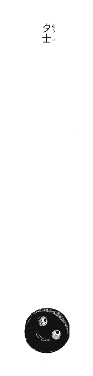
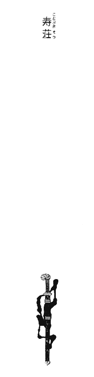
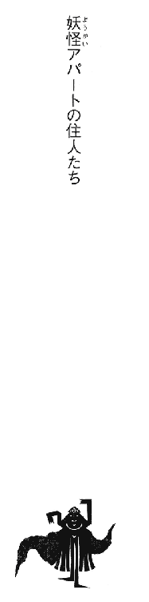
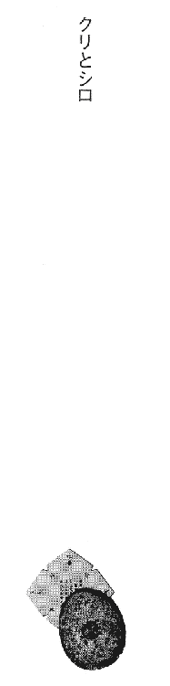
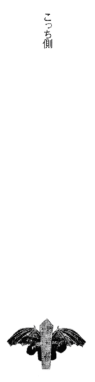
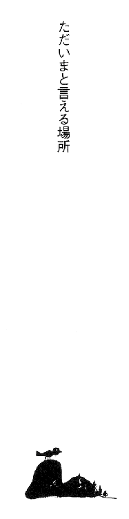

| [香月日輪] 妖怪アパートの幽雅な日常01 | |
| 香月日輪 | |
| (2015) | |
|
妖怪アパートの幽雅な日常①
香月日輪
|
〈帯〉
活字力全開の新シリーズ
ひとり暮らしの始まりは、妖怪たちのすむ奇妙なアパート──。
違う世界や違う価値観があってこそ、世の中はオモシロイ！
〈カバー〉
「出るんだ。これが」
「えっ......オバケ!?」
妖怪アパートの幽雅な日常①
香月日輪
講談社
ＹＡ！ ENTERTAINMENT
妖怪アパートの幽雅な日常
香月日輪
幽霊とか妖怪とかって、見たこともなかったし、いてもいなくてもどうでも良かったよ、別に。
そりゃあ、ガキの頃は信じていたかもしれないけど、そんなに怖いとか思わなかったし、興味もなかった。
そんなことよりも、俺は現実の問題で頭がいっぱいだったんだ。
両親がいっぺんに死んで三年。やっと親戚の家から出られる時だった。寮のある高校に合格したんだ。
バラ色の、とはいかないけど、それまでよりはちょっとはマシな毎日になると思ってた。あの日まで──。
勝負の場所は電車の通る橋の下だ。ありがちだけどここが一番だろ、やっぱ。人に見とがめられる心配が少ないもんな。
「てめぇのツラァ、ボコにするのを待ってたぜ、長谷」
俺は上着を脱ぎ捨てると両手の指をボキバキ鳴らした。長谷はいつものスカした顔で、いつものようにフフンと笑った。
「俺だって一度はお前とやりたかったさ、稲葉」
長谷は脱いだ上着を丁寧にたたんで鞄の上に置いた。それから俺に対して横向きに立つと、右手を差し出してチョチョイと指を動かした。ああ、あれだ。映画『マトリックス』のカンフーの練習のシーンで、ローレンス・フィッシュバーンがやったポーズ。あれ、二人で見に行ったんだっけ。面白かったよな......。
「ということは、俺がキアヌ・リーブスってわけだ!!」
言いながら俺は長谷に飛びかかった。
「言ってろよ！」
長谷は嬉しそうに体をかわす。俺たちは、ほぼ本気で殴りあった。
頭上を何本電車が通り過ぎていっただろう。
俺と長谷は、夕陽に染まりゆく空を見ながら草むらに大の字でひっくり返っていた。身体中がジンジンと痛んで口の中が錆くさい。でも幸いお互い歯は無事だったようだ。
「......条東商合格おめでとう、稲葉」
長谷がポツリと言った。
「お前こそ......名門進学校だもんな、あそこ。東大は約束されたも同じだな。超エリートビジネスマンへ一歩近づいたわけだ」
「ああ............お前も」
「ああ」
俺は身体を起こした。
「お前みたいな超エリートにはなれないけど、俺だって商業高校で簿記やパソコンとかの技術身に付けて、即戦力のビジネスマンになるからな。社会に出るのは俺のほうが早いだろうから、お前は社会人としては俺の後輩ってわけだ」
にかっと笑った俺に、長谷はちょっと心配そうに笑う。
「大丈夫か、お前......」
「お前こそ。正体バレないよう気をつけろよ、長谷。名門進学校に首席入学した大会社の重役子息が、実は中学では〝裏番〟してました、なんて今時アリな話か!?」
俺たちは大声で笑いあった。電車が轟音をたてて通り過ぎていった。
別れの握手を交わす。
小学三年生の時から親友だった長谷と、ここで別れる。別々の高校へ。別々の世界へ。
両親のいない俺を支え続けてくれた親友。金持ちで頭がよく、将来を嘱望されている長谷が、都内の名門校へ進学するのは当然のことで。これが永遠の別れじゃないけれど、これから先の世界は俺と長谷ではずいぶん違ってくるんだろうなと思うと、ふと寂しくなる。
でも俺は、この時は親友との別れの寂しさよりも嬉しさのほうが勝っていた。
寮のある高校に合格できた。
三年間暮らしてきた親戚の家を、やっと出られるんだ。俺の世界は大きく変わろうとしていたんだ。
合格発表の二日後のことだった。

夕士
顔に青アザをこしらえて帰ってきた俺を見て、恵子伯母さんは目をむいた。
「夕士くん！ なんなのその顔？」
「ああ、カツアゲにあったんス。でも逃げてきました。大丈夫っス」
いつものように、ちょっと引きつったお愛想笑いをして四畳半の自分の部屋へこもろうとした俺を、伯母さんは引きとめた。
「ちょっと！ 大変なのよ、夕士くん！」
「ハ？」
居間で待っていた博伯父さんの口から、俺は信じられないことをきかされた。
「えっ......寮が、か......かかか、火事??」
「全焼だってヨ」
だってヨ、だってヨ、だってヨ......伯父さんの声が頭の中でこだました。
真っ白だ。頭の中が真っ白になった。伯父さんの言ってることは理解できても、心が拒否している感じだった。胸のあたりに固い塊がゴンとできて、現実のダメージから心臓を守っているような。脳の中の神経全部がしびれて「感じる」ことを伝達しないようにしているような気がした。
「建て直すのに、なんやかやと半年かかるそうだ。まあそれまでは......ここから通うか」
伯父さんは苦笑いした。その瞬間、俺は正気に戻った。「このままにしてたまるか！」と反射的に思った。
「いや......！ 俺、なんとかします!!」
なんとかとはなんだ？ と自分で思いつつ、俺は居間を出て行った。台所の椅子にすわってこっちを見ていた恵理子が、露骨に嫌そうな顔をしているのがたまらなかった。
自分の部屋へは戻らずに、玄関から飛び出す。
ここにはいられない。いたくないんだ、俺だって！ そう叫び出しそうになる。
「くそ！ なんでだよ......なんでこうなるんだよ!! ちくしょう!!」
ついさっきだ。ついさっき親友に「大丈夫だ」と言ったばかりなのに。新しい気持ちで新しい生活を送れるんだと思ったばかりなのに。
「ちくしょう!!」
荒れ狂う胸の内をどうしようもなかった。なにかに当たり散らしたい衝動を抑えきれない。俺はただ走った。あてもなく。とにかくどこかへ行きたかった。ここではない、どこかへ。
俺、稲葉夕士は、今年条東商業高校へ合格した。
合格を知った時は、人目もはばからず万歳三唱したほど嬉しかった。条東商は、就職に関しては実績のある高校だ。寮もある。俺は是が非でもここに入学したかったんだ。
両親を一度に亡くしたのは、中学一年生の春。二人が、知り合いの告別式へ出席した帰りの交通事故だった。
六時限目の授業を受けていた俺のもとへ、事務員のおばさんが青い顔をしてやってきた。あの時のおばさんの、眉間にくっきりと寄った三本の皺が、今も妙に記憶に残っている。
なにが起こったのか理解できなかった。こんなことが自分の身の上に起きるはずもないと。これは夢なんだと、何度も何度も思った。
悲しいよりも、俺はこれからいったいどうなるんだろうという思いの方が強かった。
俺は「悲しむ」ことを拒否したのかもしれない。悲しんだら、両親の死を認めることになるから......。
あの日から、俺は親戚の家で暮らしてきた。
博伯父さんも恵子伯母さんも悪い人ではなかったけど、俺の世話を大変な負担に感じていることが伝わってきた。それはそうだろう。いきなり子どもが一人増えるんだ。これで遺産が山ほどあるのならデカイ顔もできるとこだが、吹けば飛びそうな中小企業のサラリーマンだった親の遺産なんてたかがしれていた。伯父さんたちが、俺の世話をするだけ損だと思っても仕方ないことだった。それぐらいわかっていた。中学生の俺でも。
そのうえさらに肩身の狭かったことには、伯父さん家には、高校受験をひかえて細い神経をさらにピリピリ尖らせていた一人娘の恵理子がいた。
俺がきたことで、恵理子が受験に失敗することこそなかったものの、年頃の女の子のもとへ突然転がりこんできた男を、恵理子は想像以上に嫌がった。それもそうだろうと、俺はわかっていた。実の家族の間でも、女の子の扱いにはいろいろ気を遣うものだ。
嫌なのは俺だって同じだった。俺が男だからと嫌う女の子に、どう接したらいいかなんてわからなかった。だから、なるべく恵理子を刺激しないように気をつけていた。三年間、俺たちはついにまともな会話を交わすことはなかった。
「寮のある高校に合格して、この家を出るんだ！」
俺の支えは、この決意だけだった。
条東商業高校には寮がある。技術を身に付けて就職して独り立ちする。合格を知った時には、この夢に何歩も近づいた気持ちがした。
「それを今になって、今になって......ちくしょう！ なんでだよ!!」
夕暮れの街をさまよい続けた。
走ったり、歩いたり、また走ったり。止まってしまうと、もうそこから動けなくなるような気がしたから。
〝大丈夫か......〟
どこかで長谷の声がした。そう言って別れたばかりの親友に、今の気持ちをブチまけたい気分だった。でもできない。
真面目にしなければという思いと、どうにでもなってしまえという思いの間で、ともすれば箍が外れて暴走しそうになる俺を支えてくれた唯一人の友。中学三年間世話になりっぱなしだった。
誰にも言えないグチを、長谷にだけは言えた。長谷だけは、なにも言わず、いつまでも、いくらでもグチを聞いてくれた。長谷も俺の前でだけは、本来の自分を曝け出していた。俺たちは、お互いが唯一素直になれる相手だったんだ。
長谷は俺のグチを聞き、たくさんの本を貸し与え、さり気に食い物をおごり続けてくれた。二人でバカな話を言い合いしている時間が、どれほど俺を元気づけてくれたか知れない。
でも、もうあいつは側にはいないんだ。学校がはじまっても、そこに長谷はいない。俺は、一人でやっていかなくちゃならないんだ。
「こんなことになるなんて......。今さらこんなことになるなんて......！」
長谷と握手を交わしたのが、遠い遠い昔のことみたいに思えた。
「どうしよう......」
ふと気づくと、俺は電車に乗っていた。それは、条東商業高校のある鷹ノ台東へゆく線だった。
夕闇に沈んだ町並みがカタコンカタコンと過ぎてゆく。
住宅街にともる灯りが、胸にせまってきた。今ごろあの下では、家族が夕食のテーブルを囲んでいるのだろうか。子どもたちは、父親がおみやげを持って帰ってくるのを待っているのだろうか。そんなありふれたこともできない自分。
「父さん......母さん............」
俺は、今さらながら泣きたくなった。そういえば、両親の死をきかされたあの日から、自分は泣いたことなんてなかったんだ。なんだか呆然としたまま、ここまできてしまったような気がする。
「でもなぁ......今さら泣いてもなあ......」
苦笑いと一緒に、苦いため息が足元に落ちた。
帰宅を急ぐ人たちに交じって鷹ノ台東駅でおりてみた。
自分はこれからこうやって、毎日この駅で電車を乗り降りするのだろうか。寮に入ればそんなことをしなくてもすむのに？ そう思うと、大きなため息がでた。
と、その時、黄色い旗がたくさんはためいてるのに目が行った。その旗には「キンキンホーム」の赤い文字が。
「キンキンホーム......」
俺の頭に、テレビのＣＭソングが流れた。♪アパート、マンション、一戸建て。お部屋さがしに、キンキン、キンキン、キンキンホーム......。
「そうだよ！ アパートをさがそう!!」
その瞬間、それはとてつもない名案に思えた。俺は、キンキンホームへ飛びこんだ。しかし、対応したキンキンホームの社員の態度に、俺は現実を思い知らされることになる。
「この駅周辺で家賃が......なるべく安く？ 具体的に書いて下さいよ」
キンキンホームの社員は、俺と俺の書いた受付書を見比べ、ヘッと笑った。愛想笑いをするその表情には「今頃部屋なんざありゃしねーよ、バーカ」という嘲りが見てとれた。社員は、俺を子どもと見てバカにしやがったんだ。それが俺に伝わっても、いっこうに平気なようだった。ことさら白々しい愛想笑いで話を続けてみせる。
「お部屋さがしは一月からがピークでして、入学、人事異動と転居のシーズンなんですよ。今頃はそのシーズンも終わりで、お部屋はあらかた埋まってしまってます、ハイ。......はあ、ご予算は二、三万。二、三万ですか!? イヤ、こりゃまいったなあ、ハハハ」
社員は物件のリストをめくりながら、いちいち家賃を指さしておおげさに言ってみせた。
「ほぉら、これもこれも。ワンルームで五万はするでしょ。お客様もねえ、なにも知らないで、ただ安いだのカッコイイだので探すんじゃなくて、もっと賢くなっていただかないと......」
社員がなにか言うごとに、俺は気分がどんどん落ちこんできて、いたたまれなくなった。社員がクソ丁寧な説明の裏で「ガキが金もないのに一人暮らしだと？」と言っているのがわかったからだ。悔しいけど......それは、そのとおりだった。そう思ったとたん、プチッとキレるのが自分でもわかった。
ガバッ!! と、俺はその社員の胸ぐらをつかみ、シャツをひねり上げた。
「ヒッ」と社員が息を呑むと同時に、椅子がひっくり返って派手な音がフロアにこだました。
シン、とそこにいた社員や客が全員固まる。俺は自分の身体に必死で言い聞かせた。落ち着け！ 落ち着け!! と。右手が社員のシャツから離れた。
「すいません。もういいです！」
俺はキンキンホームを飛び出した。
悔しくて、情けなくて、悲しくて、もうなにがなんだかわからなくて。俺はまた歩きだした。
「止まるな。止まるな。止まったら......」
なんだか目の前が真っ暗だ。
落ちこんでいるところを、さらにドン底に突き落とされたようだった。自分はまだなんの力もない子どもで、誰にも助けてもらえないことを思い知らされた。無性に泣きたい気分だった。
実際は、寮に入るのが半年遅れるだけだ。だけど俺は「思いもかけない突然の不運」というものに、激しい拒絶感を抱いていた。両親が死んだのがそうだったからだ。
今また、あの時と同じような気分にさせられて、自分の力ではどうしようもない出来事に、なすすべもなく立ち尽くすしかない。
なすすべもなく、とうとう公園のベンチにすわりこみ俺は動けなくなってしまった。
すっかり暮れた公園の片隅で、一人頭を抱えこむ。
今はなにも考えず、じっと息をひそめていたかった。なにかを考えても、悪いことしか浮かばない。悲しくて悔しくて、涙をこらえきれなくなる。こうして、自分で自分を抱きしめて、どれほどの夜を一人で過ごしてきただろう。誰にもなにも言えないまま。泣くこともできないまま。
だってそうだろう？ 誰になにを言えばいいんだ？ 誰がなにをしてくれるというんだ？ 泣いてわめいてわがままを言えば、どうにかなるのか？ 両親が帰ってくるのか？
「ちくしょう............」
目をぎゅっと閉じ、奥歯をかみしめる。真っ暗な中で、ひたすらなにも考えないよう努める。
どれぐらいそうしていただろう。ふいに、すぐそばで声をかけられた。
「お兄ちゃん、部屋を探してるの？」
子どもの声だった。鉛のように重たい頭を上げる気になれず、目だけあけると、裸足に運動靴をはいた小学生らしき足が見えた。
「キンキンホームはだめだよ。あそこは客を差別するんだ。あの店へ行ってみなよ。いい部屋がきっとあるよ」
あの店？ 思わず顔を上げると、俺の真正面に「アパート、マンション、下宿、空き部屋あり」の看板が見えた。俺は、思わず立ち上がった。見まわすと、あたりには誰もいない。暗くなってしまった公園に子どもがいるはずもなかった。
「あれ？ 今の子どもは......」
不思議に思いながらも、公園をぬけてその店に行ってみた。ビデオショップの横にへばりつくような小さな店だった。
「前田不動産」と書かれたガラス戸の向こうで、おじさんが一人新聞を読んでいる。俺はためらったが、さっきの子どもの声が耳の奥に残っていた。
〝いい部屋がきっとあるよ〟
「すんません......」
「いらっしゃい」
おずおずと店の中へ入る。店内には物件を紹介するものはなにもなく、妙にガランとしていた。
「あの......」
うまく言葉が出てこない俺に、おじさんのほうから声をかけてくれた。
「学生さんかね。ひょっとして条東商の生徒さん？」
「はぁ」
「学生寮、焼けちゃったんだってねえ。うちにも何人か部屋さがしに来たよ」
おじさんは苦笑いした。その笑顔に、緊張がふっと解けた。この人は事情をわかってくれている。自分の顔が、初めてほころんだのがわかった。
丸メガネに白髪まじりのアゴ髭の前田のおじさんは、俺の話をきいてくれた。両親の遺産をムダ遣いはできないが、それでも「出る」と決めた以上、伯父さんの家は出たいこと。自炊したいのでキッチンのついた部屋がいいことなどなど。
「苦労してるねえ、君も」
と、おじさんはしみじみと言った。その言葉が、なんだかやけに胸にしみる。同情なんてされたくはないけれど、今だけはやさしい言葉が心地よかった。気がゆるんで泣きそうになった。俺は、出されたお茶を一気飲みした。
やや間をおいて、前田のおじさんは丸メガネをキラリと光らせた。
「......いい物件が一つある」
「ありますか！」
思わず身を乗り出した俺に、おじさんは間取り図を見せながら言った。
「鷹ノ台東駅から、東へ歩いて十分。部屋は二畳の板間と六畳の和室。南向き。トイレと風呂は共同だが、賄い付きだ」
「まかないって......食事を作ってくれることっスか？」
「そうそう。昔は、学生相手の安下宿なんかじゃ、女主人が食事とか洗濯とか、学生たちのすべての面倒をみていたもんだよ。今の子どもたちは他人の干渉を嫌うからなあ。賄いという言葉さえ消えつつあるよね」
前田のおじさんはアゴ髭をゴシゴシこすると、コホンと咳払いしてから言った。
「家賃は、ズバリ二万五千円！」
「二万五千円!!」
「しかも、光熱費、水道代、賄い費こみだ！」
「えっ、それで二万五千円!?」
寮費は三万円だが、家庭的な事情のある俺には補助が出るので二万円ですむ。それと比べても五千円高いだけだ。これはいいかも......と、思いそうになった頭を、俺はハタと落ち着かせた。三年間、ぎゅっと抑圧された暮らしの中でつちかわれてきた根性は、めったなことでは動じない。というより、この世に「うまい話」なんかないだろう？ 俺は、前田のおじさんの丸メガネに鼻っ先を突きつけた。
「ひょっとして、いわくあり!?」
おじさんはしばらく俺とにらみあった後、にや～んと笑った。
「実は、そお♪」
「やっぱり......！」
やっぱりこの世には「うまい話」なんてなかった。きっと俺の一生は、きっとずっとこんな調子なんだろうなあ。俺はため息とともに、椅子へどっかりとすわりなおした。その目の前へ、おじさんは両手をダラリとたらして言った。
「出るんだ。コレが」
「えっ......オバケ!?」
いきなり予想だにしなかった話をされて、俺はどう反応していいか、口をぽかっとあけてしまった。さぞかしマヌケな顔だったろうな。
今の今まで自分の人生の中に「オバケ」という文字はなかった。そんなものはいてもいなくてもどうでもよかったし、身近で出たという話もきかない。興味もないのでそのてのテレビ番組も見ないし、本も読まない。したがって知識もなにもない。俺の中のオバケといえば『ゲゲゲの鬼太郎』とか、いいとこ『四谷怪談』のお岩さんぐらいか？
「......ホントに出るんスか？」
「さあ、知らないなあ」
しれっとこたえる前田のおじさんが、すごくあやしく見えた。あやしい。オバケうんぬんという話がスゴクあやしい。ひょっとして、これはなにかの罠なのではないだろうか。自分は今、だまされかけているのでは？ そんな現実的な考えがよぎる。そんな俺の思いを知ってか知らずか、おじさんは言った。
「そうだ、こうしよう。オバケが出るという話もそうだけど、君にとってはたった半年の仮宿だ。寮が完成したら当然移るんだろう？」
「はあ。そのつもりっス」
「実はボクは、そのアパートに部屋を持ってるんだ。物置として使ってるんだけどね。半年だけ、ボクが君にその部屋を貸そうじゃないか。だから敷金その他は払わなくていい。家賃だけでいいよ」
「え、ホントに!?」
「アパートの大家とは馴染みでね。いろいろ融通がきくんだよ。君の身の上にスッカリ同情しちゃったから言うんだよ。どうだい？」
「......あ、ありがとうございます！」
この瞬間、オバケだのなんだのが吹っ飛んだ。俺に同情したと言った前田のおじさんの表情が、とてもやさしかったから。俺は、素直にその厚意が嬉しかった。
俺は飛んで帰って、博伯父さんに報告した。伯父さんは、前田不動産の申し出をちょっと不審に思ったようだったが、
「全然いいじゃん！ せっかく親切にしてくれてんだもん。ありがたいと思わなきゃ」と恵理子が言うと、伯父さんも笑った。
恵理子も恵子伯母さんも「良かった良かった」と笑っている。これで厄介払いができると、みんなホッとしている。俺は複雑な気持ちだった。伯父さん一家に感謝はしている。しかし、もうこの家には、二度と帰ってきたくなかった。
寮の火事のことを聞きつけた長谷から連絡が入っていた。俺は公衆電話から長谷に電話をかけた。俺のアパート暮らしのことを心配する長谷をなだめるのは大変だった。
「手紙を書くよ、稲葉。返事よこせよ」
「ああ、わかった」
「今どき文通する高校生なんてなあ！」
俺たちは笑いあった。また笑いあうことができて、俺は少しホッとした。
長谷はそんな俺を見届けるように、上京していった。
翌日。俺は、前田不動産のおじさんと、くだんのアパートを見に行った。
鷹ノ台東駅から東へ歩いて十分の住宅街。ころび坂の手前の、家と家の間の狭い通路を入る。
すると、そこにぽっかりと空間がひらけて、蔦のからまる白壁に囲まれた建物が、木々に埋もれるように建っていた。
それは日本のこの住宅街の真ん中にあって、非常に違和感のある景色だった。前田のおじさんはニカッと笑った。
「なかなかモダンな建物だろ？」
「............はぁ」
蔦に覆われた、古びた灰色の壁。濃いえんじ色の屋根。窓にはステンドグラスがはめこまれている。玄関は木製の観音開きで、ここにもステンドグラスがあしらわれている。映画のロケにでも使われそうな「大正ロマン風」の造りだ。しかし、それはそれだけ築年数が古いという証でもあるんじゃないか？ いかにもその頃につくりましたというモダンさ。
「築何年なんだ......？」
聞くのがコワイ。オバケよりもそっちのほうがよほどコワイじゃないか。
「いや、我慢我慢。半年だ。たった半年我慢すれば、新品の学生寮へ移れるんだ！」
俺は心の中で、念仏のようにそう唱えていた。その時、玄関から竹箒を持った甚平姿の男が出てきた。
「おや、前田さん」
「やあ、一色さん、どうも。お久しぶり」
ここの住人らしいその男を見て、俺はハッとした。子どものラクガキのような簡単な、どこかとぼけたようなその顔には見覚えがある！
「一色......一色黎明!!」
俺は思わず叫んでしまった。
「おや、稲葉くん。若いのに一色さんみたいな難しいの読むの？」
前田のおじさんの声は耳に入らなかった。俺は目の前の甚平男に釘付けだった。
一色黎明は、詩人にして童話作家。非常に難解で高尚な詩と、グロテスクで耽美な大人の童話を書き、一部に熱狂的な、というよりは偏執狂的なファンを持つ異色作家だ。
決して偏執狂ではないが俺もこの詩人のファンで、今もリュックの中には一色黎明作の童話の単行本が入っている。
自慢じゃないが、こう見えても俺は読書が趣味なんだ。中学じゃ「文芸部」だった。金がかからないからだ。運動は好きだけどヘタに運動部なんかに入ったら、試合だ合宿だと金がかかる。運動は朝夕のランニングと、たまにチンピラから売られたケンカを買うぐらいで充分だ。
古本と長谷から借りる本が、俺の楽しみだった。一色黎明は、古本の中から発掘した最近一番のお気に入りだ。まさかこんな所で？ まさか本人に会えるとは!?
「えっ......ほ、本物？ 本物??」
「そぉ。本物」
ラクガキのような顔がニコッと笑った。まちがえようもない、著者近影の写真と同じ顔！
「サ、ササササ、サイン下さい!!」
慌てふためいて詩人の鼻先に単行本を突きつけると、前田のおじさんが笑った。
「一色さんは逃げないから、夕士くん」
「い、い、い、一色さんって、このアパートに住んでるんスかっ？」
「そぉ。もう十何年になるかねぇ」
「そうなんっスか！」
俺は、テンションが一気に上がってしまった。大好きな作家と同じ屋根の下で暮らせるなんて、こんな幸運はめったにない。もうここに決めるしかない！ 前田のおじさんにどんな思惑があろうがどうだっていい!! 俺は、目の前がぱあっと明るくなったような気がした。こんな気分は本当に久しぶりだ。
「じゃ、部屋を見ようか」
「はいっっ!!」
大正ロマン風のアパートは、内部も相当古そうだった。壁には、そこここにひび割れが走り、板張りの床は年を経たいい色になっている。廊下も階段も部屋の奥も、古い家らしい暗さに翳っている。しかし、全体の造りはどっしりと堅牢そうだ。
二階へ上がる。小鳥の声と、アパートを囲む木々の葉ずれの音がする。
「静かっスね」
「ここには確か、十人ほど入ってるはずだけど。みんな出かけているのかなあ。あ、ここだよ。二〇二号室」
しっかりとしたドアを開けると、部屋の中は廊下の暗さに比べとても明るかった。南向きの大きな窓。その上部に嵌めこまれたステンドグラスの、色とりどりの光が畳の上に落ちている。窓からは前庭が見えた。詩人が竹箒で落ち葉を掃いている。
前田のおじさんの物置というその部屋には、小さなちゃぶ台が一つとお茶セットと座布団が置かれていた。そして壁一面の本棚には、ぎっしりと本がつまっていた。文学作品から、哲学、宗教、エッセイもある。なかなか幅広い趣味だ。前田のおじさんがアゴ髭をゴシゴシしながら言った。
「ここはボクの隠れ家なんだよ。本はそのままでもいいだろ？」
「はい。それはもう！ これ、読んでいいっスか」
「どうぞどうぞ。水場とトイレは廊下に出たとこね。収納はここと、ここと......」
「いい部屋スね」
俺は、今すぐにでもここへ移ってきたくてウズウズした。
あの家を出て、誰に気兼ねすることもなく思い切り一人の時間を楽しみたい。友だちを呼んで、時間を気にせずしゃべりたい。休みの日は、遅くまで寝ていたい。
考えてみれば、なんとささやかな楽しみだろうか。長谷に言われたことがある。「もう少しわがままを言ってもいいんじゃないか」と。そう思わないでもない。でも、それはできなかった。伯父さんたちにこれ以上迷惑も負担もかけたくない。ましてや、ぐれて好き勝手するなんて。
それは、俺の両親が亡くなっているから。死んでしまった二人のために、遺された自分がしなければならないのは「一人前になること」だ。ちゃんとした社会人になり、ちゃんと幸せになることだ。それがなによりの供養になるんだと、中学一年生の時に心に決めた。あの時、ゆるゆると空へたちのぼってゆく火葬場の煙を見ながら。そのためには、どんな「寄り道」もできないんだ。
学生寮の建て替えまでの、たった半年を待たずに伯父さんの家を出るのは、そんな俺のこれ以上ない「わがまま」だった。
三年間の昼と夜を、一人ぼっちで耐えてきた。博伯父さんたちは確かに俺の家族だ。それでも、その家族の中で俺は孤独だった。半年でもいい。本当に「一人」になりたい。「一人でいること」と「孤独」とは違う。俺は一人になって、すべてを自分の自由にしてみたかった。
「来るかね？」
前田のおじさんが念押しした。俺は笑顔で、ハッキリこたえた。
「はい。よろしくお願いします！」
俺は契約書を持って、家へすっ飛んで帰った。博伯父さんの帰宅を待ちかねて契約をすませてもらうと、もう荷物をまとめて出て行かんばかりのところを恵子伯母さんに止められた。
「日曜日まで待ちなさい。お布団や机も運ばなきゃだめでしょう」
日曜日には、伯父さんが軽トラックを借りてきてくれる。俺は待ち遠しくて仕方なかった。こんなふうになにかを楽しみに待つなんて、修学旅行以来だった。
そして日曜日。もともとなにもない俺の荷物は、こぢんまりと軽トラックに載せられてアパートへ向かった。
「やあ、いらっしゃい」
「一色さん！ これからお世話になります」
アパートの玄関で、詩人が引っ越しを手伝おうと待っていてくれた。飛び上がるほど嬉しかった。前田のおじさんと、契約書と部屋の鍵を交換する。
「はい。部屋の鍵」
「ありがとうございます。お借りします」
なんだか「魔法の鍵」を受け取ったように思えて、その考えの子どもっぽさに自分で苦笑した。
「この子、久賀秋音ちゃん。二〇四号室の子」
詩人が紹介してくれたのは、女の子だった。俺と同じ高校生ぐらい。ポニーテイルの髪、シャツとジーンズ姿の、飾り気はないが清潔そうな服装。はっきりとした健康そうな顔立ちをしている。きっと頭がよくて明るい性格なんだろう。
「こんにちは。お部屋そうじしといたよ。これからよろしくね！」
と、秋音ちゃんは、想像どおりの明るいハキハキした声で言った。
「は、はあ。どうも......」
まさか、見ず知らずの女の子が部屋のそうじをしてくれたなんて、想像もしなかった親切！ 俺はびっくりして自己紹介するのも忘れてしまった。
引っ越しといっても、布団と机と本を運んでしまえば、それで終わりだった。あとは自分でやると言って、博伯父さんにはここで帰ってもらった。有名な作家や女の子も暮らしていると知って、伯父さんも安心したようだ。
これで肩の荷がおりたことだろう。あとは俺が成人するのを待つだけ。それも、もうすぐのことだ。俺は、伯父さんの車が遠ざかるのをじっと見送り、つぶやくように言った。
「お世話になりました。ありがとうございました......」

寿荘
「あたし？ 鷹ノ台高校の二年生よ。ここには一年生の時から暮らしてるの」
秋音ちゃんは、こまごまとしたものの片付けも手伝ってくれた。
「へえ。秋音さん関西の人なのか。親元を離れて一人暮らしって、寂しくない？」
「ぜぇ～んぜん！ ここの暮らしは、とっても楽しいわよ」
秋音ちゃんのしゃべり方や表情から、彼女の頭の良さや明るい性格がよく伝わってきた。俺の知る範囲の年上の女の子といえば恵理子だけど、彼女となんとまあ違うことだろう。
自己防衛からなんだろうが、俺の存在をほとんど無視している恵理子。その扱いに黙って耐えるしかなかった俺は、当然の結果として女の子が苦手になってしまった。女の子とは、神経質でヒステリックで、男を「男である」という理由で毛嫌いするもの。さわらぬ神に祟りなしだから、寄らず、話さず、そっとしておくのが一番いいのだと思っていた。当然の如く女によくモテる長谷に、
「お前を紹介してくれって女もいるんだぜ？嫌がらずに付き合ってみろよ」とか言われたこともあるけど、とてもそんな気にはなれなかった。だって、クラスの女子とか見ても、やっぱり恵理子みたいに俺を避けてるみたいなんだから。
「それはお前が〝寄らば斬る〟みたいなオーラを出してるからだよ」
長谷はそう言って笑ってたっけ。
そうかもしれない。両親が死んで生活が一変し、俺自身も変わった。
伯父さん家で肩身のせまい暮らしをして、金のこととか将来の生活のこととか、目の前に確実にある現実を思うと不安で、俺はもう心の底から笑うことができなくなった。
「稲葉くんって、付き合い悪いよね」
「暗いよな」
そう言って一人去り、二人去りする友人たち。残ったのは、長谷だけだった。ましてや女の子なんて。
ところが秋音ちゃんは、まったくくったくもなく、初対面の男である俺に接してきた。まるで女同士のように。まるで男同士のように。初対面であることなどおかまいなしに。他愛もないことをしゃべる。大声で笑っては、俺の背中をたたく。新鮮な驚きだった。秋音ちゃんのような女の子もいるのだと、俺はひたすら感心していた。
秋音ちゃんは親元を遠く離れ、このアパートで一人暮らしをしながら昼は高校へ通い、夜は病院で働いているらしい。その病院に知り合いがいて、その人がいるからここで暮らしているのだと。なにか複雑な事情があるんだろう。とてもそんなふうには見えないところが、彼女の強さと明るさの秘密なのだ、きっと。
「そうかぁ。ご両親がいないっていうのは寂しいね」
二つ並べられた位牌を見てそう言う秋音ちゃんの口調は、乾いて大人びていた。
「でも、寂しいのにはもう慣れたから」
俺が苦笑いすると、彼女はふわっと、とても優しく笑った。それまでの豪快な笑いではなく、どこか寂しげで暖かい笑顔。思わずハッとさせられた。
「あんまり急いで大人にならなくてもいいよ」
秋音ちゃんは笑いながらそう言った。軽い口調だったが、とても真摯な響きに満ちていた。どこか、長谷に似た調子。
俺は不思議な感慨をおぼえた。この人とは、なんだかなんでも話せるような。なんでも話したいような気がした。
「秋音さん......このアパートってさ......オバケが出るってホントなのかな？」
間抜けな質問とは思いつつ、きいてみた。秋音ちゃんは、あっけらかんと笑った。
「ああ。そういえば近所じゃ〝寿荘〟って言うより〝妖怪アパート〟って言ったほうが通じるみたいね」
「寿荘？ あ、ここそんな名前だったんだ」
なぜ今まで気づかなかったんだろう。それにしても古典的な名前だ。
「なに？ 夕士くん、オバケ怖いの？」
秋音ちゃんはからかうように笑った。俺は頭をかいた。
「あ、いやその......。よくわからねぇよ。見たことないし。オバケが出るって言われてもな～って感じで......」
「そうそう。オバケなんて全然怖くないわよ」
秋音ちゃんは片付けを続けながら、さらりと言った。なんだかうまく受け流されたように感じるのは気のせいだろうか。
「そ、そうだよな」
「るりるりが、引っ越し蕎麦を作ってくれたよ～」
詩人が蕎麦を持って入ってきた。蕎麦屋で出されるもののように美しく盛られた蕎麦と天ぷらには、梅の花が一枝そえられている。なんて見るからにうまそうなんだ！
「るりるりって？」
「るり子さん。ここの賄いさんよ。ものすっごい料理上手なの！」
秋音ちゃんはそう言うなり蕎麦に食いついた。まさに「食いついた」という感じだった。俺はその豪快な食いっぷりにびっくりした。詩人が大笑いした。
「秋音ちゃんって、すごい大食いなんだよ」
そういえば彼女の分だけ蕎麦が三段になっている。三段!?
「あたし、人の三倍は食べるの」
うら若き乙女のセリフとも思えない。実にこともなげにアッハッハと笑う秋音ちゃんと詩人につられて俺も大笑いした。
うまい蕎麦をすすりながら、俺はこれからの生活が、なんだかとても楽しいものになりそうで胸が躍った。
部屋の片付けが終わる頃、外からドッドッドッと、エンジン音がきこえた。
「バイクだ！」
俺は窓から身を乗り出した。
「おお！ 後ろに犬のせてるよ、あの人！ すげえ！ 犬とタンデム!!」
「明さんよ。一〇三号室の人」
「夕士く──ん。おりといで～～」
窓の下から詩人が呼んでいる。俺は秋音ちゃんと一緒に一階へと下りていった。
「一〇三号室の深瀬明。画家なの。アタシとは古い馴染みでね」
詩人から「画家」と紹介されたその男は、がっしりした体を黒い革の上下に包み、バサバサの茶髪にくわえ煙草、目つきはすこぶる悪く、下からなめるように俺をにらんだ。
「......あ、稲葉夕士っス。よろしく......」
画家？ 革のバイクスーツには、まるで刺青のようにキングコブラがデザインされている。乗ってるバイクは大型車。そしてそのバイクにもキングコブラのデザインが。これは、どこからどうみても「暴走族」では？
ちょっとビビってしまった俺の前に、ぬっと大きな犬が立ちふさがった。ピレネー犬ほどもある灰色の図体に、シェパードのようなでかい耳、でかい口。金色の目で主人とそっくりににらんでくる。
「シガーだ。自分にも挨拶しろと言ってる」
画家が、ぶっきらぼうに言った。
「は、そうスか。こんにちは、シ、シガー」
俺はシガーの前にかがんで挨拶したが、シガーは不服そうにグウとうなった。
「もっと頭を下げろと言ってる」
カチンときたけど、今こんなところでもめるわけにはいかない。「こいつ～」と思いつつ頭を下げた。そこに、シガーはいきなりガバッと、全体重をかけてのしかかってきた。
「うわっっ!?」
俺はシガーの下でグシャッと潰れた。
「ギャハハハハ！ ひっかかった、ひっかかった!!」
地面とシガーにはさまれた俺を見て、画家と詩人と秋音ちゃんが指をさして大笑いしている。
「シガーはちっとも怖い犬じゃないの、夕士くん。これはシガーの〝初対面の芸〟なんだよ！」
「男専用」
「............は、そうスか（質の悪い芸だ）」
シガーの下敷きになったままそう思ったけど、みんなにゲラゲラ笑われながら、俺は悪い気分じゃなかった。こんなふうに接してもらうなんて初めてで、驚いてばかりだった。
いきなりマヌケをさらしてしまった俺の顔を、シガーはやさしくなめてくれた。やさしくなめて、顔中よだれだらけにしてくれたけど。
「そういえば小学生の頃、犬を飼いたかったんだ......」
そんなことをふと思い出し、俺はシガーの身体をなでた。画家が煙草をふかしながら笑っている。みんなも笑っている。画家も飼い犬も、悪いのは目つきだけだとわかってホッとした。
「黎明のファンだって？ じゃあお前もヘンタイだな」
画家が笑いながら言った。
「ち、違うっスよ！」
「好きな女を氷づけにして、毎晩なめまわしたいとか思ってないか？」
「思いません！ 俺は、一色さんの流麗な文体のファンなんス！」
「あたしは一色さんの書く文はわかんないわ」
「フツーの人間はそうなんだよ」
「俺もすべてを理解してるってわけじゃ......詩はぜんぜんわかんねぇし」
「アタシだって、あんたの描く絵はわかんないヨ、深瀬」
「深瀬さんの絵って、どんなんなんスか？」
「そぉねぇ～。アンディ・ウォーホールってわかる？」
「いや。わかんないっス」
「そぉ。わかんないのヨ」
「でも深瀬さんの絵って、海外じゃすごく人気があるのよね」
おそい午後の陽だまりの中で、俺たち四人はしばらく楽しくしゃべりあった。俺にとっては、兄貴と姉貴がいっぺんにできたみたいだった。楽しくて、おまけに華やかで。こんな雰囲気にあこがれていた。こんなふうに、気持ちを思い切り解放して、しゃべって、笑って。
ここへ来てよかった。そう思った。この時は。
「あ、あたしバイトの準備しなきゃ」
秋音ちゃんが立ち上がった。
「あ、俺も。部屋の片付け途中だったんだ」
俺は秋音ちゃんに続いてアパートへ入っていった。
古いアパートの中は、日が少しでも傾くといよいよその暗さを増した。
ふと、玄関の上がり口に目をやると、足跡がたくさんついているのが見えた。昼間は見えなかったんだが。
「ああ、今まで暮らしてきた人たちの足跡がしみついてるんだなあ」
と、思った。しかしその中に、どう見ても人のものとは思えないような、妙なものが交じっている。鳥の足のような三本線とか、獣みたいなものとか、異様に大きいものとか、異様に小さいものとか......。
俺は、この時初めて「妙だな」と思った。なにが妙なのかはっきりとはわからない。ここは普通のアパートで、住人も普通だ。「出る」なんていうのは、ただの噂だろう。ただ建物が古いだけ。だけど、その昼間よりずっと暗く沈んだ空間に、なにかの気配が満ちている。なんだか胸の奥がざわめいた。
「誰か......いるのかな？」
そう思ったとたん、ジャラジャラという音がして、俺は飛び上がるほど驚いた。
玄関横の居間をのぞくと、隅っこの衝立ての向こうでなにやらもぞもぞしている者たちがいる。
「なぁんだ、マージャンやってるのか」
ほっとして二階へ上がろうとした俺だが、ハタと気づいた。
「あいつら誰？ いつからあそこにいるんだ？」
しかも居間の電気もつけず、暗い部屋の片隅で。
〝出るんだ。コレが〟
前田のおじさんの声がした。
「............は、まさか」
出る？ オバケが？ だいたいオバケってなんだよ？ お岩さんみたいに、ヒュ～ドロドロって出てくるわけ？ 俺は、首をふりふり階段を上がっていった。
すると、二階の廊下を拭き掃除している人がいた。それは、背丈が小学生ぐらいしかない小さなおばさんだった。えんじ色のスカートにクリーム色のカーディガン、白いソックス姿。おばさんは俺と目が合うと、おたふくのお面のようににこやかな目尻をさらに下げた。俺も思わず笑い返した。
「ここの人なのか......？」
ついさっきまで、このアパートには自分と詩人と画家と秋音ちゃんしかいなかったように感じるのだが。
「そうそう、るり子さんと......」
片付けの終わった「俺の城」をながめながら、とりとめもないことを考えている。とても満たされた気分だった。
「夕士くーん。ご飯食べに行こう～」
秋音ちゃんが誘いに来てくれた。
「あ、もうそんな時間？」
「夕ご飯はだいだい六時から八時の間に食べてるかな。でも、るり子さんはいつ行っても温かいご飯を出してくれるの。あたしなんて毎晩夜食を作ってもらってるわ」
秋音ちゃんはぺろっと舌を出した。本当にくったくなく、よく笑う女の子だなあ。
「いいな、それ」
秋音ちゃんと連れ立って部屋を出ると、さっきのおばさんが、まだ廊下を拭き掃除していた。
「なあ、あの人......」
「あ、鈴木さん？ お掃除おばさんよ」
「あ、そうなのか。ハハ」
わかったような、わからないような。さらに俺は、一階の食堂へ入ったところで、またおかしな風景を見てしまった。
満員御礼だった。十畳ほどの食堂が人いきれでムンムンしている。小さな子どもたちが犬と一緒に走りまわっている。詩人と画家はいいとしても、お茶を飲んでいるガリガリに痩せたガイコツみたいなじーさまは？信楽のタヌキのような丸っこい小男は？椅子にすわってうつむいたまま、じっと動かない長い髪の女は？ いったい今までどこにいた!?
「あの......」
「はい、夕士くん！ 今夜はウェルカムディナーだって!!」
秋音ちゃんが持ってきてくれたのは、見るもうまそうなトンカツ定食だった。
こんがりあがった衣がジュージューと音をたてている。付け合わせはたっぷりのサラダ。小鉢には木の芽の胡麻和え。冷や奴。キュウリのぬか漬け。
「ご飯とお味噌汁はここ。おかわり自由だからね」
秋音ちゃんがよそってくれた山盛りご飯は、ピカピカに光っていた。
「う、うまっっ......!!」
声にならなかった。口の中でとろけるようなトンカツ。だしのよくきいた大根とアゲの味噌汁は、料亭で出されるもののように上品で味わい深かった。
「うまい！ るり子ちゃん、この胡麻和えは絶品!!」
と叫ぶ詩人に、俺はガツガツかきこみながら激しくうなずいた。いまどき賄い付きのアパートそのものが珍しいというのに、この飯のうまさはただ事じゃない！ 俺は、飯も味噌汁も二回もおかわりした。「家の飯」をこんなに食ったのは初めてだった。ぬか漬けだけをおかずに四杯目の大盛り飯を食った秋音ちゃんには負けたけど。
しかし、カウンターで仕切られた向こう側の厨房がなんだか妙に暗くて、そこにいるはずのるり子さんの姿がどうしても見えなかった。時折チラチラと、白いものが見え隠れしている。
「なあ、この人たちみんな、このアパートの人たちなのかな？」
満腹満足して、俺はようやく秋音ちゃんにたずねてみた。
「山田さんはそうよ」
秋音ちゃんは、丸っこい小男を指差した。
「あとは近所の人ね。ここってこの辺の溜まり場なのよね～」
と、笑いながら秋音ちゃんは言った。詩人と画家が俺を見て、なにやらニヤニヤ笑っている。どうも妙だ。秋音ちゃんがそう言うのならきっとそうなのだろうが、なにか変だ。なにか、どこか......。
食後、居間をのぞくと、さっきの連中がまだマージャンをしていた。部屋の隅っこで、衝立ての向こうでちぢこまるようにして。姿はよく見えないが、四人とも着物姿だ。子どもと犬が寄り添うようにして見ているテレビには、知らない番組が映っていた。
「変だ......」
俺は首をかしげながら部屋へ戻った。二階の廊下を、鈴木さんがまだ拭き続けていた。
「変だ......！」
なんだかすごく変な気分だ。でも、詩人も画家も秋音ちゃんもなんということもなく暮らしているみたいだし、違和感を感じるのは、自分がこのアパートに慣れていないからなのだろうか。
「なんだかな～......」
そう思いつつ、俺は高校の教科書を眺めた。明後日からは高校生活が始まる。
「そうだ。条東商には英会話クラブがあるんだよな」
英会話に簿記にパソコン、役立つ技術はつけられるだけ身につけて、目指すは即戦力のビジネスマンか公務員だ。俺には、そこら辺の子どものように遊んでいる余裕はない。
「夕士く～ん、一緒にお風呂はいろ～」
詩人が誘いに来てくれた。第一線で活躍する（すごくマニアックとはいえ）作家に風呂に誘ってもらえるなんて！ ファンに知られたら殺されそうな贅沢だ。
「はい──！」
詩人とともに階段を下りていくと、秋音ちゃんが出かけるところだった。
「行ってきまーす」
元気に飛び出していく彼女を見送る。秋音ちゃんは鷹ノ台にある病院で夜中じゅうバイトして、向こうで三時間だけ寝て朝こっちへ帰ってきて学校へ行くという。
「ス、スゴイ生活だな！ それで身体とか大丈夫なんスか？」
「ぜぇ～んぜん平気みたいだヨ」
あっけらかんと詩人が笑う。未成年の労働基準とか、看護婦でもない彼女が夜中に病院でなにをやってるんだとかいろいろ突っこみたいことはあるけど、やめとこう。人には人それぞれの事情というものがあるのだ。
「そういや俺、風呂は見てなかったんだ。地下にあるんですってね」
「そぉ。でっかい風呂だよ。きっと気に入るよ」
地下へいく階段を、鈴木さんが拭き掃除していた。
「やあ、鈴木さん。いつも精が出ますね」
詩人が声をかけると、鈴木さんは笑ってこたえた。
「一色さん、あの人......」
「鈴木さんは、いっつもアパートの掃除をしてくれているの。えらいよねぇ。頭が下がるよねぇ」
「は、はあ」
地下への暗い階段を下りていくと、蒸気がむっと身体を包んだ。
岩風呂があった。
ほのかな灯りに浮かび上がったのは、最高級温泉旅館の浴場もかくやというような、天然としか思えない洞窟風呂だった。秋吉台とかにある鍾乳洞みたいに、天井から岩のつららが垂れ下がっていたり、きのこみたいな、皿みたいな岩の造形物が壁や床から生えている。ちょっとぬめりがあって金気のある湯は、どうやら本物の温泉の湯らしい。
「あ───っ、極楽!! いつ入っても！」
気持ちよさげな詩人の横で、誘われるまま湯につかったはいいけれど、俺は固まってしまった。
「おかしい......！ いくらなんでも、これはおかしい!!」
この住宅街のど真ん中で、地下洞窟に温泉が湧いてるなんて、そんなムチャな!! 温かい湯につかりながらも俺の手足は冷え、心臓はバクバクと躍り出していた。
「............一色さん......このアパート............なんか......変スね......」
俺はとうとうというか、おそるおそるというか、そう口に出してみた。すると詩人は、
「そりゃそうだよ。だって〝妖怪アパート〟だもん」
と、これまた実にあっけらかんとこたえた。
「...............へっ？」
「前田さんに言われただろう。〝出る〟って」
「............」
詩人のとぼけた顔が、この瞬間不気味に見えた。
「ね、大家さん♪」
詩人は、後ろの暗がりに向かってウインクした。
「暗がり」が、のそりと動いた。
それは、大きな黒いモノだった。巨大な卵のようなずんぐりとしたつるつるの身体に、小さな目だけがついていて俺を見た。
「大家さん」は、風呂につかったまま俺にお辞儀をした。つられてお辞儀しかえした俺だったけど、一拍おいて湯から飛び上がった。
「いいい、一色さん!! 大家さん、なんだか人間じゃないみたいなんですけどっっ!!」
詩人は面白そうに笑った。
「人間じゃないヨ」
記憶は、そこで途切れた。
気がつくと、朝だった。自分の部屋に寝ていた。
「............あ～、変な夢みちゃったよ」
環境が急に変わったからだろうと思った。
朝のきれいな空気の中で、窓から見える木々の緑がとてもきれいだった。
窓のすぐ近くの枝で鳥の声がする。俺は、窓をそっと開けて見てみた。なんという鳥だろう。きれいな青い羽をした小鳥が三羽並んでいた。三羽が俺を見た。そしていっせいに、
「おはよう。よく眠れた？」
と、言った。
俺は、黙って窓を閉めた。急にすごく喉が渇いて部屋を出た。そこに画家が階段を上がってきた。
「おう、起きたか。大丈夫か？」
そう言う画家の顔は、笑いを必死に堪えているふうだった。
「............は」
「大家が心配してるぞ、夕士」
「大家......」
階段の下に「大家さん」がいた。大きな真っ黒い体に、白い着物を着て紫の帯をしめている。袖口からのぞいた小さな小さな手には、部屋代と書かれた大きな帳面を握っていた。
「───うわあぁっっ!!」
俺は飛び上がり、尻餅をつき、あやうく階段を転げ落ちるところだった。画家が腹を抱えて大笑いした。
「え、なに？ なんスか？ これって冗談だろ!? あれ、着ぐるみかなんかだよな!!」
「そう思いたきゃ、それでもいいぜ」
画家は笑いながら言った。
詩人が大家さんと挨拶をしている。大家さんは、ずんぐりとした体を丁寧に折ってお辞儀をした。明らかに人間ではないモノを目の前にして、詩人も画家も平然としている。俺はそれにもまた驚いた。
「オ......オバケ......!? オバケなのか!? なんで......え？ あれ？ 一色さんや深瀬さんは人間で......あれ？ 一色さんは、もう十何年ここに住んでるって......？」
「ああ、俺も十年以上ここにいる」
画家は煙草をくゆらせた。
「なんの問題もないぜ？」
目が点になっている俺を見下ろして、画家は面白そうに口元をゆがませた。
「............！」
すべて承知の上なんだ。詩人も、画家も。そしておそらく秋音ちゃんも。
「じゃ〝鈴木さん〟とか、食堂にいた連中とか、マージャンをしてた奴とか......！」
秋音ちゃんが言っていた。「みんな近所の人」で「ここがこの辺の溜まり場」なのだと。
〝出るんだ。コレが〟
前田のおじさんの顔が浮かんだ。
ここにオバケがいる、ということ。
そのオバケたちと共同生活する、ということ。
「ウ、ウソだろ......そんなこと......」
視界がグラグラ揺れた。俺が考えていた、俺が今まで暮らしてきた「日常」が崩れてゆく感じがする。だが、一色黎明、深瀬明はまぎれもなく人間であり、ここで過ごしてきたのだ。もう十何年も。
ふと見ると、二階の廊下を鈴木さんが拭き掃除していた。窓からはさっきの青い小鳥たちが、興味深げにのぞきこんでいる。いつの間に側に来たのか、小さな子どもと白い犬が俺を見ていた。まだ肌寒い季節だというのに、半袖の薄いシャツを着たその子と犬の影が、異様に薄かった。まるでその体が光を通しているかのように。俺は、思わず身がちぢんだ。しかし、画家は何気にその子を抱き上げた。
「お、クリ。朝飯食いに行こうぜ。いつまでもバカ面さらしてないで、お前も来いよ夕士」
画家は、人間の子どものようなモノを抱いて、笑いながら階段を下りていった。犬のようなモノがそれに続いた。大家さんは、どこへともなく去っていった。
俺は一人、呆然と階段にすわりこんでいた。
玄関の扉は大きく開かれ、朝の清々しい空気がそこら中を満たしている。小鳥のさえずりが聞こえる。どこにでもあるような春の朝だ。
「でもここは妖怪アパートで、そこらへんにはオバケがいっぱい......？」
納得がいかない。だって、ここはこんなにも平和で飯がうまくて、俺と同じ高校生の女の子が一人で暮らしていて、詩人も画家もいたって普通にしていて、もう十何年も......。
「............なんの問題もない......？」
画家はそう言った。
「なんの問題もない......のか？ それでいいのか......？」
鈴木さんが窓ガラスを磨いていた。ヒビだらけの壁を、得体の知れないカビのようなモノが這っていた。廊下の奥では黒い影が二つ、なにやらボソボソと話していた。そして食堂からは、倒れそうなほどうまそうなだしの匂いがしていた。
「びっくりした？」
詩人が俺を見上げていた。その顔は、やっぱり面白そうだった。
「一色さん」
「家に帰りたいんなら、荷造りを手伝うヨ」
そう言われて、俺は拳を握りしめた。妖怪アパートに残るか、伯父さん家に戻るか。
「ものすごい究極の選択だなぁ」
何気なくそう思った自分に、思わず苦笑いしてしまった。
俺は立ち上がった。
「とりあえず......」
「とりあえず？」
「朝飯を食います」
俺がそう言うと、詩人は大笑いした。
「いいネ、夕士くん！ そうこなくっちゃ」
俺が一階へ下りると、ちょうど秋音ちゃんが帰ってきたところだった。夜中じゅう働いて三時間しか寝ていないというのに、向こうから元気よく駆けてくる。
「ただいまあー！」
「あ、おかえり......」
と言おうとして、俺は目をむいた。
「あ、秋音さん！ う、う、後ろ!!」
「あん？」
玄関前で振り返った秋音ちゃんの後ろには、黒のアロハシャツを着た男らしき奴が立っていた。今ごろアロハというのもおかしいけど、なぜ男らしきなのか。そいつには首がなかったんだ。
「オ......ッ、オバケだ！ これはまちがいなくオバケだ!! すごい!! ......す、すごいのか？」
初めてのオバケらしいオバケを見てオタオタする俺の前で、秋音ちゃんはさほど驚くでもなく言った。
「やだ、とうとうついて来ちゃった」
「つ、ついて来た？」
「こいつ、駅前の交差点のとこにいて、ずーっとあたしのこと見てた奴なの」
顔もないのに？ と、俺は心の中で突っこんでいた。
「無視してたんだけど、やっぱりあたしに執着しちゃったのね」
「幽霊のストーカー......？」
秋音ちゃんは、ふぅと一息つくと幽霊の前に仁王立ちした。やっぱりそうだ。やっぱり秋音ちゃんも、こういうことは平気なんだ。妖怪アパートということを承知で、ここで暮らしているんだ。やっぱり、これは「現実」なんだ！
「あたしについて来たってことは、どういうことかわかってるんでしょうね」
秋音ちゃんは、頭のないそいつに話しかけた。
「知ってるわよ、あんたがどんな奴か。生きてる時と同じように、死んでからも性懲りもなく、女の子の後をつけまわしてたでしょ。それがどんなに迷惑なことか、あんたって死んでもわかんないのね」
秋音ちゃんは、幽霊をにらみつけた。とたんに空気が変わったのが、俺にもわかった。今まで感じたこともないなにかを感じて、身体中が粟立つ。心臓が締め上げられるように緊張した。なにかが起ころうとしている！
「あそこにじっとしてるんなら見逃してあげようと思ってたけど......」
秋音ちゃんの両手が、なにかの形を描いた。そして一瞬の祈るような間の後、両手を幽霊にかざして叫んだ。
「禁!!」
ドン!! と、なにかの衝撃が空気を震わせ、俺の身体中にまたワッと鳥肌が立った。目の前で、幽霊が消し飛んだ。
「──────......っ!!」
なにが起こったのか、俺にはまったく理解できなかった。ただ、骨から震えるような出来事が、実際に目の前に存在したことは確かだ。それは、俺の今までの生活も常識も知識も、すべてをひっくり返すものだった。それなのに、振り向いた女の子は、まるで何事もなかったかのように笑った。
「さあ、朝ごはん食べよう！ おなかペコペコ!!」
「あ、秋音さんって......」
「あたし？」
秋音ちゃんは、どこか誇らしげに宣言するように言った。
「あたしは、除霊師なの」
「............じょ？」
「おかえり、秋音ちゃん。今朝のメニューは、太刀魚の塩焼きに豆腐のお味噌汁、納豆とダシ巻き、ポテトハムサラダだよ」
詩人が、これまた何事もなかったかのように言った。
「きゃ～～～っ、るり子さん大好き～～～！ 愛してる～～～！」
秋音ちゃんはそう叫びながら、食堂へ飛んでいった。それを呆然と見送る俺を、詩人は面白そうに眺めている。
「......じょれいしって......なんスか？」
「なんか、困った幽霊を退治する人らしいねぇ」
詩人は肩をすくめた。
「いろんなことがあって、いろんな人がいて面白いネ。この世も捨てたもんじゃない」
詩人のその言葉に、不思議な感慨を覚える。
「さあ、朝ごはんを食べよう、夕士くん。おなかすいたでショ」
そういえばそうだ。
とりあえず朝飯を食おう。とりあえず。考えるのはそれからだ。

妖怪アパートの住人たち
食堂には、焼き魚と味噌汁のいい匂いが充満していた。腹の虫が盛大に鳴った。
秋音ちゃんが大盛り飯をかきこんでいる。画家は、あの小さな子どもを膝にのせてコーヒーをすすっていた。ガイコツのようなじーさまとか長髪の女とかはいない。朝の食堂は静かだった。
「はい。夕士くんの分」
「あ、ありがとう」
るり子さんの作った朝飯は、これまためっぽううまかった。豆腐の味噌汁が身体中にしみわたるようだ。
「でも、るり子さんって人間じゃないんだなあ......」
あいかわらず、厨房にその姿は見えない。オバケの作った飯なんかとは思うけど、それでもこんなうまいものを食わずになんかいられない。
「オッハヨー。やー、いい匂いだ」
丸っこい小男の山田さんと、紺のスーツ姿の男が現れた。
「おはよう、山田さん、佐藤さん。この子、稲葉夕士くんだヨ」
詩人が紹介してくれた。
「あー、よろしく。山田ですぅ。ゆうべ会ったね」
「佐藤です。ようこそ寿荘へ」
俺たちは丁寧に頭を下げあった。詩人が言うには、今現在このアパートにいる「人間」は、詩人と画家と秋音ちゃんだけ。ということは、人間のように見えるこの山田さんも佐藤さんもオバケということになる。
「朝っぱらからオバケと挨拶しあって一緒に朝飯............なんだかな～～～」
なんだか奇妙だ。山田さんは新聞を読みながら、佐藤さんは時間を気にしながら飯をパクついてる。ラジオからは朝のニュースが流れている。博伯父さん家と変わらない、ごくごく普通に見える朝の風景。
「ただひとつ違っていたのは、彼らは人間じゃなかったのです......か」
俺はお茶をズ───ッとすすった。
そんな俺を、隣にすわった画家の膝の上から、あの子どもがジッと見つめていた。確か、画家は「クリ」と呼んでいた。年は二歳ぐらいだろうか？ よく見ると、ちょっと下ぶくれのほっぺに、唇がぷっくりとしてて、はっきりとした二重の目がとてもつぶらな感じがして......。
「か............かわいい!!」
俺は思わず手を伸ばしていた。人間ではないモノの頭に触れる。
「あ、さわれた」
手には普通の髪の毛の感触が伝わった。短くて細くて柔らかい子どもの髪だった。そりゃあ画家が抱っこしてるんだからさわることができるのは当たり前だけど。だけどなんだかとても不思議な気分だ。人間のように見えても、この子は人間じゃないんだ。人間じゃないモノに、自分は今さわっている。かわいいと思っている。クリは俺を見つめながら、手にしたペロペロキャンディーをムグムグした。
「ああ......っ、クソ！ かわいい!!」
ハッと気づくと、画家と詩人と秋音ちゃんがニヤニヤしながら俺を見ていた。俺はコホンと咳払いをして、またお茶をすすった。
「あ、るり子ちゃん。おいら、今日から一週間留守するからねえ。新入社員の研修の監督で伊豆へ行くんだ」
と、スーツ姿の佐藤さんが言った。
「佐藤さんとこ景気がいいよねえ。さすがソワール化粧品だ」
山田さんのセリフに、俺はお茶を吹き出しそうになった。
「働いているのかっ（しかも大手）!?」
こんなこともあるんだ。人間以外のモノが、人間に交じって暮らしている。社会の一部として。人間が知らないだけで。
俺は、ちょっと怖いと思った。この朝の風景と同じく、なにひとつ変わらないようで実はまったく違うものが、自分がそう思いこんでいるだけで、実はまったく違うことが、世界にはあふれているのだ。
「なに？ これって〝目からウロコが落ちる〟ってやつなのか？」
このたとえが正しいのかどうかわからないが。とにかくまあ、そんな気分だった。
「鷹ノ台駅の裏に月野木病院ってあるの知ってる？」
暖かい春の陽射しが落ちる縁側で、秋音ちゃんは俺に話した。
「月野木病院はちゃんと認可された病院だけど、実はこのあたりの妖怪たちのための病院でもあるの。あたしはそこで妖怪や幽霊たちの勉強をしてるってわけ」
と、こともなげにこの女子高校生は言った。
俺の理解のキャパを超えるので細かいところはよくわからないが、月野木病院には人間以外の患者を診る専門医がいて、秋音ちゃんはその医師のもとで幽霊や妖怪のことを学びつつ、除霊師になる修行をしているのだという。
「久賀流心錬術は、スポーツのための精神統一とか、対人恐怖症とかの治療のための精神修行術だけど、道場では霊能力者の育成もしてるの。あたしは、初めから霊能力者になるために入門したわ」
「それは......やっぱり小さい頃からオバケが見えた、とか？」
「うん。うちは家系なのね、きっと。両親ともそうだから。久賀先生とも古い馴染みだし、幽霊が見えることって、普通のことなんだと思ってたわ」
この話には本当にびっくりした。じゃあ「普通」って、いったいなんなんだろう？
「小学六年生の時に〝久賀〟の名前をいただいて、中学を卒業と同時に、月野木病院へ〝奉公〟に出されたのよ。高校を卒業するまでは月野木病院で修行して、その後は、また別の霊場へ修行に行くことになると思うわ」
奉公という言葉も、今の時代あまりきかない単語だ。
「名前をもらったって、じゃあ久賀秋音というのは本名じゃないの？」
「本名は伏せるものなのよ。あたしたちは、ね」
現代の都会の片隅に妖怪のための病院があり、プロの霊能力者になるため、そこで修行を積む女子高生がいる。彼女は、生まれた時からそういう環境にいた。それが「普通」だった。
〝いろんなことがあって、いろんな人がいて面白いネ。この世も捨てたもんじゃない〟
詩人の言った言葉が、あらためて頭をよぎる。
ポカポカと暖かい板の間で、白い犬を枕にクリが眠っている。その可愛らしい寝顔を、秋音ちゃんはそっとなでた。
「クリは......オバケなんだよ、な？」
「クリたんはね、霊体が物質化してる状態なの。シロもそうよ。この犬」
「レイタイがブッシツカ......」
「このアパートの敷地は特殊な結界の中にあって、霊位がとても安定してるの。見えないものも見やすいし、さわれないものもさわれたりするわ。別の次元への道もいろいろつながってるし、何層にも次元が重なってたり、位相がずれてたり」
あああ、もうなにがなんだかわからない。ちょうどいいタイミングで、詩人がコーヒーを持ってきてくれた。
「るりるりがケーキを焼いてくれたよ～」
とたんに秋音ちゃんの目が、キラキラと輝く。
「わあ──っ、うれしい───!!」
ざっくりと、ホールケーキの半分ほどを切り取って頬張る食いっぷりはさておいて。秋音ちゃんは、チョコケーキが大好きな、どこからどうみても普通の女の子だった。
「普通......普通、か......」
考えこむ俺を、詩人がニヤニヤと眺めていた。
「どうするか決まった、夕士くん？」
「............はあ」
そうさ。なにを考えたところで、今さら俺にはどうしようもないんだ。オバケが出ようが、これを「普通」と考える人もいるんだし、たった半年ぐらい「変わった体験をした」と思えばなんてことはない。目の前にどんな困難なことがあっても、俺は自力でそれを乗り越えるしかないんだ。まわり道なんてできないんだから。
「残りますよ、ここに。たった半年っスから」
苦笑いしながらそう言った。詩人も笑った。
「そーそー。その意気だ。オバケ屋敷で暮らせるなんて、めったにできない体験だヨ」
詩人と秋音ちゃんは大笑いした。つられて俺も大笑いした。もう笑うしかない。詩人の言うとおりだ。それぐらいの感覚でいればいいんだ。
日当たりのいい春の庭には、きれいな花がたくさん咲いていた。山田さんが、丸っこい身体をさらに丸くして雑草むしりをしている。庭の手入れをするオバケ......なんだか微笑ましいじゃないか。
「お、〝人間〟が一人帰ってきたぞ」
詩人が門の向こうを指差した。なにか、ぞろぞろと集団がやってきた。
「わあ、骨董屋さんだ。久しぶり！」
「骨董屋？」
背の高い、黒いコートを着た男だった。左目には幅の広い眼帯をしている。
その周りには、大きな荷物を担いだ異様に背の低い者たちが五人。みんな編み笠を目深にかぶり、その服装は、中国人かベトナム人を思わせる。
男はその妙な連中を率いて、実に優雅に歩いてくる。が、オールバックの髪型といい、眼帯といい、薄い口髭といい、なんというか......実に、実に怪しい！ うさんくさい！ なんだか、昔読んだ子ども向け小説の中の、魔術団のボスとか、子どもをさらっていくサーカス団の団長とかを思い出させる雰囲気だ。詩人は「人間だ」と言ったが、こんな奴、現実生活で見たことがないぞ。少なくとも俺は。
「やあ、これはこれは。お揃いで」
骨董屋は、とても軽い調子で言った。顔立ちは西洋人みたいだし、一つしかない目も灰色だ。外国人だとしたら流暢な日本語だなあ。ますますうさんくさい。
「久しぶりね、骨董屋さん。今度の買い付けはうまくいった？」
「おお、秋音ちゃん。いい買い物をしてきたよ、もちろん。さあ、おみやげだ」
骨董屋は、秋音ちゃんにきれいな青いペンダントをプレゼントした。
「〝人魚の涙〟だよ」
「ありがと」
秋音ちゃんは笑いながら受け取った。
「この子は、稲葉夕士くん。新入りだよ」
「よ、よろしく」
「ほぅ」
骨董屋は、灰色の目でなめるように俺を見た。そして俺の肩を抱くと、懐からなにやら白いかけらを取り出して言った。
「〝ユニコーンの角〟だ。買わんかね？ 今ならお安くしとくよ」
う、うさんくせぇ～～～！ なんなんだ、こいつは？
「素人に手を出さないよーに」
骨董屋の手を、詩人がピシャリと張った。骨董屋は、おおらかに笑いながらアパートへ入っていった。
あれが、人間？ 今までここで見たどんなモノより怪しいじゃないか、見かけも、雰囲気も。
「いろんな人がいるなあ......」
俺は、半ばあきれ気味に言った。
「いろんな人がいるねえ」
詩人と秋音ちゃんは、しみじみと言った。
「骨董屋というからには、骨董品を扱う商売をしてるんスよね？」
「まあねえ、本人曰くだけど」
詩人も秋音ちゃんも苦笑いした。
「本人曰く、次元を行き来する商売人」
「本人曰く、古伊万里からソロモン王の魔法の指輪まで扱います」
「本人曰く、左目は忠誠の証として〝妖精王〟に捧げた」
「本人曰く、召し使いたちは、かのアルベルトゥス・マグヌスの技術を魔術的にアレンジした自動人形である」
「ええ？ あたしは召し使いたちは、パラケルススの〝人造人間〟だって聞いたけど？」
詩人と秋音ちゃんは、しばし顔を見合わせたあと大笑いした。俺にはなんのことやらさっぱりわからない。
「......つまり、信用してはいけない人なんスね？」
「そうそう！ そのとおり!!」
二人は笑い転げながら言った。
どう見ても人間にしか見えないオバケがいて、人間とは思えないほど怪しい人間がいて。ここで暮らしていこうと決めた俺だけど、はたして大丈夫なんだろうかと、ちょっと心配になったりした。
その一方で、このおかしなおかしな出来事がすべて「現実」で、この現実に比べたら、今まで俺の目の前にあった現実がなんだかバカバカしく思えてしまうことが悔しかったり悲しかったりおかしかったり、実になんとも複雑な気分だった。
でもその夜、食堂で骨董屋が話してくれた嘘か本当かわからない、まったく信用できないよもやま話は転げるほど面白かった。
「ユニコーンを捕らえるには、清らかな処女を囮にするしかないんだが、昨今はこの〝処女〟というやつを探すほうが至難の業でね。やっと処女らしき女がみつかったと思ったら、とても清らかとは言いがたい金貸しのばあさんで......」
ハーブっぽい香りのする細身の葉巻を気障にくゆらせながら、骨董屋の話は実にそれらしくて、ほらとわかっていても聞き入ってしまう。物知りなオジサンにおとぎ話を聞かせてもらっている子どものような気分だった。
食堂では、ガイコツじーさまがお茶を飲み、長髪女がじっとすわり、いつのまにかコーヒーは用意され、山田さんはスポーツ新聞を読み、クリは秋音ちゃんに抱かれ、詩人と俺は、骨董屋の話に大笑いした。窓の外の暗闇に、青白いなにかがフワフワ浮かんでいても、もうあまり気にならなかった。
月曜日の朝。
俺は誰かに揺り起こされた。七時だった。目覚ましをセットするのを忘れていたんだ。部屋の中に、起こしてくれた「誰か」はいなかった。やはり。
水場へ行くと、鈴木さんがトイレを掃除していた。
「お、おはようございます」
笑って挨拶を交わしあう。なんだかな～と思いつつも、これからは毎日がこうなんだからなぁ。俺は苦笑いした。
食堂へ行くと、もう秋音ちゃんが大盛り朝飯を食っていた。
「おはよー！ 今日から高校生だね、夕士くん」
「ウス！」
そんなこんなで、俺の高校生活は始まった。
条東商業高校は女子の割合が多く、俺のクラス一年Ｃ組も二十二人対十人と女子が男子の倍の数だ。初日とあってどの顔もやや緊張気味だが、俺はなんだかホッとした気分だった。ここにいるのはみんな人間だからだ。多分。
初日は、校内のいろんな説明やら見学やらで終わった。全焼した学生寮も見に行った。業者がよってたかって急ピッチで工事を進めているが、入居できるのは秋になるそうだ。
「お、稲葉」
担任の中谷先生に声をかけられた。
「お前、アパートに一人暮らしだって？ なんで伯父さん家にそのままいないんだよ、半年ぐらいさあ」
「や、なんか......。でも安いとこがみつかったし」
「安いのはいいが、ちゃんとしたとこなんだろうな!?」
「はっ、それはもう......」
「それならいいけど......。なにかあったらすぐ言えよ。俺ん家へ電話してきていいからな」
「ウス。ありがとうございます」
人の情けは身にしみるけど、泣き言や弱音はなるべくなら吐きたくない。
長谷に「あんまりがんばりすぎるなよ」と言われるけど、がんばらないと世間は認めてくれないし、がんばっていないと......不安なんだ、俺は。
同じクラスに、入寮予定だった仲間がいた。
「ホントにびっくりしたよ～。いきなりだろ～。おかげで予定が、なんもかんも狂っちまってさ～。こっちでバイトもみつけてたのに～～」
と、竹中はぼやいた。竹中は、寮ができるまで自宅から通うという。片道二時間もかかる長旅だ。
「お前、いいとこみつけたなあ、稲葉。ずっとそのアパートにいれば？」
「えっ!? と、とんでもねぇよ！」
「なんで？」
言えない。オバケが出放題なんて言えない！
「や、やっぱ学校の寮のほうが安心だろ。家族もさ。管理とか、いろんな面でさ」
「そりゃまあねえ。あ、そうだ。今度お前のアパートへ遊びに行ってもいい？」
「えっ！ あ、イヤ......まだ片付いてなくて」
「片付いたら行っていい？」
「あ......ま............」
とんでもない話だ。妖怪アパートに住んでるなんて知られたら、俺までオバケ扱いされてしまう。
「ほんとは、来いよって言いたいんだけどな......ちぇっ」
俺は、うつむいてアパートの玄関をくぐった。
〝おかえりなさい〟
と、誰かが言った。
「ああ、華子さんだよ。いつも玄関にいてね、いってらっしゃいとおかえりなさいを言ってくれるんだ」
詩人が解説してくれた。
「それだけ？」
「そぉ、それだけ。そのうち姿が見えるようになるよ」
イヤ、別に見たくはないけど。
しかし、日を追うごとに、俺の目に見える物の怪たちの数が増え始めた。俺が環境に慣れてきたせいだろうか。
鈴木さんとか山田さんとかクリとか「名前」がついたモノ以外にも、実にいろんなモノがこのアパートには巣食っていた。
マージャンをしている連中や食堂の茶飲みじーさまのように、常にそこにいるモノや、時々姿を見せるモノ。人の形をしているモノ、動物に似たモノ、植物のようなモノ、昆虫や液体状はまだいいとして、まったくわけのわからないモノもいる。日本語でしゃべるモノもいるし、異国語でしゃべるモノもいる。俺の部屋にこそあまり現れないものの、廊下、食堂、居間、風呂、トイレの中まで、いつもなにかしらのモノがいた。引っ越してきて十日ばかり。俺は内心ゲッソリきていた。
「一色さんは、オバケに囲まれててなんで平気なんスか？」
夕飯をつつきながら、俺は詩人にたずねてみた。
食堂はいつものようにいろんなモノでいっぱいだ。特に音をたてているわけでもないのに、ガヤガヤとにぎやかな気配に満ちている。まるで学食のように。今夜はここにいる人間は俺と詩人の二人だけ。トホホな感じだ。
「おもしろい仲間たちだからネ」
詩人は笑ってこたえた。
「仲間？ オバケが？」
「そぉ。彼らはアタシたちと同じ。彼らなりに普通に暮らしているだけ。なかにはいいモノも悪いモノもいる。これもアタシたちと同じ。なにも変わらないよ」
「............」
詩人はちょっと変わっているからなあと、俺は思った。いくら害はないとはいえ「オバケ」だ。オバケなんだ。なぜその存在を認められるんだろう？ しかも「仲間」だなんて。俺としては、目の前で見て、肌で感じてもなお「オバケ」が「いる」ということを認めたくない気持ちだ。
「......ん？ ひょっとしてこの考え方って、人種差別??イヤイヤ、人じゃないだろあいつらは」
一人うなずいたり首を振ったりしてる俺を、詩人は面白そうに眺めていた。
その時、食堂の入り口をぬっとくぐってきた人がいた。
「はあ～～～、いいお湯だった」
女だった。
「ウグッンン!!」
俺はチキンのソテー中華風を、あやうく喉につまらせるところだった。
その女は、短パン姿に裸の上半身、首にかけたタオルでかろうじて胸が隠れているという、男子高生には刺激的すぎる格好だったからだ。
しかもそのボディーのすごさときたら!! 細い首にくっきり鎖骨。長い手足。うねるような胸から腰へのライン。まるでスーパーモデルだ！ 俺は男としてグッとくるよりも先に、珍しいものを見た驚きで目が点になった。
「まり子ちゃ～～～ん。やめてよ、そういうカッコで歩きまわるの～」
「いいじゃん別に。コレを見たってなんともないでショ、一色さん」
「アタシはいいけど、年頃の男の子がいるんだから～」
「アレマ。そうだった！」
「まり子さん」は、キャハハと子どものように笑った。
なんとも美人な人だ。初めて、「生の美女」を見た気がする。
きれいに栗色に染めた長い髪をラフに結い上げたヘアースタイル。パッチリとした目、可愛らしい鼻。ちょっと厚めの唇がセクシーで、小首をかしげるようにしゃべる仕草も、なんともいえず魅力的というか、男好きがするというか。これを「コケティッシュ」というんだろう。まさに、モデル雑誌から今抜け出てきましたみたいな美人だ。
「あたし、まり子。よろしくネ、夕士くん」
「あ、は、はあ」
あああ、あまりかがまないでほしい。胸が丸見えになってしまう。
「〝まり子さん〟。もと人間」
と、詩人が言った。
「もと!? じゃ......幽霊??」
まり子さんは笑ってきゅっと肩をすぼめた。仕草がいちいち可愛らしい。どういう人なんだこの人は、いったい。
「ちょっと事情があって成仏してませ～～～ん。エへ♪」
スコーンと抜けるように明るく言うと、美人な幽霊は厨房へ行った。
「るり子ちゃ～ん、ビールちょうだい。ビール」
風呂上がりにビールを飲む美女（でも幽霊）。まったくいろんなモノがいる。
「い、いやぁ......美人だなあ、まり子さん（でも幽霊）」
いかに俺でもため息がでる。詩人は苦笑いした。
「まり子ちゃん、あの調子で男風呂にも平気で入ってくるからね。おぼえといて」
「そ......それは困るっスね......！」
「幽霊になってからもうずいぶんたつみたいだから、だんだん女性としての感覚がマヒしてくるんだろーなー。すっかりオッサンになっちゃって」
詩人は笑った。
「事情があって成仏してないって......」
「森住神社って知ってる？」
「あ、イラズの森の向こう側の神社スよね」
「あそこにね、幽霊や妖怪たちの〝託児所〟があるんだってサ」
「託児所!? オバケの??」
オバケの病院の次はオバケの託児所か？ この調子じゃオバケの学校もきっとあるな。
「まり子ちゃんは、そこの保母さんなの」
「保母......」
「あ～、今は〝保育士〟だっけ？ アタシこの言葉嫌いだな～。どこのバカがこんな言い方にしようなんて言い出したんだか。男女平等を勘違いしてるよね。やっぱ、保母さん保父さん、だよネ～」
俺は詩人の言葉を聞きながらまり子さんを見ていた。
成仏しないでオバケたちの保母さんをしている人間。なぜ？ どうしてこの美女は、そういう道を歩んでいるのだろう。その「ちょっとした事情」が、とても知りたくなってしまった。
まり子さんはビールを飲みながら食堂を出て行った。去り際に、俺に投げキッスをよこして。
と、その時。にぎやかだった食堂が、急にシンと静まった。
「ん？」
俺は周りを見た。それまでワイワイと騒いでいた連中の動きが止まっている。皆、なにかの気配をうかがうかのように壁の向こうを見ている。
やがて、あるモノは音もなく消え、あるモノはそそくさと食堂を出てゆき、物の怪たちは半分ほどに減ってしまった。
「なんだ？ どうしたんだ、みんな？」
「ははぁ、こりゃ龍さんが帰ってきたな」
と、詩人が言った。
「龍さん？ それは......」
「二〇三号室の......〝人〟だよ、多分」
「多分......スか」
「怪しさじゃ、骨董屋といい勝負だなぁ」
「人間だって、確信が持てないんスね」
「このとおり、龍さんが来ると逃げちゃうオバケが大勢いるんだ。本人の話によると、どうやら霊能力者らしいね」
「霊能力者......っていうと、秋音ちゃんのような!?」
「もっとずっと格上の、プロの霊能力者らしいよ。秋音ちゃんの憧れの君サ」
またぞろわけのわからない人物の登場なわけだ。次から次へと......まったく。
秋音ちゃんの時も思ったんだけど、だいたいプロの霊能力者ってなんだよ？ そういうのって成り立つもんなのか？ 霊能力者といえば、インチキ霊感商法とか、うさんくさい新興宗教とかしか結びつかない俺だったから、秋音ちゃんのあの能力を見せられても、それがいまいち「霊能力者」とうまく結びつかなかった。
しかし、物の怪たちのこの反応は劇的ですらある。食堂に残った連中も、息をひそめてピリピリしている。その緊張が伝わってきて、知らずに俺もドキドキしてしまった。
「一色さん、その......霊能力者って、実際のところなにをする人なんスすか？」
「さあ、アタシも詳しくは知らないねぇ。龍さんも謎の人でさあ、本名も名乗ってないし」
「ああ、〝本名は伏せるもの〟ってやつね」
「多分、人だよ。多分ネ」
詩人は意味深に笑った。
玄関からまり子さんのはしゃぐ声がきこえた。
「龍さんだぁ──っ！ おかえり───！ アハハハハ!!」
声の様子からすると龍さんとやらに抱きついているな!?裸のまり子さんに抱きつかれるのは......ちょっと困るな。
「あーハイハイ。ただいま、まり子さん。やあ、華子さん。今日もきれいな着物だね」
とてもよく通る、耳ざわりのいい声が玄関からきこえてきた。まり子さんを軽くあしらっているらしいその声から察するに、若い男。俺は意外に思った。
「やあ、おかえり龍さん。久しぶり」
「やあ、一色さん。どーも」
食堂に現れた人物を見て、俺はハッとした。
「龍さん」は、やはり若い男だった。年の頃は二十四、五歳。霊能力者という響きから、そしてあの骨董屋といい勝負というからには、見るからに怪しいオッサンか、悟りきった坊さんみたいな人かと想像してたけど、彼は、長身痩躯の身体を黒服で包み（これは骨董屋と同じだが）、長い黒髪を後ろで束ねた、とても......とてもスタイリッシュな美男子だった。思わず「芸能関係の人？」と聞きたくなるような......。
「霊能力者......？」
ますます頭が混乱する。
「オヤ、新入りかい。こりゃ珍しい」
「稲葉夕士くんだよ。条東商の一年生サ。半年だけここにいるの」
「ああ、寮が焼けたんだっけ。よろしく。みんなは龍さんと呼んでる。そう呼んでくれ」
「あ、ド、ドモ。稲葉夕士っス。よろしく」
握手を求めてくる立ち居振る舞いがとても優雅というか、洗練されているというか、上品というか。いや、確かに骨董屋の立ち居振る舞いも優雅でスタイリッシュだけど......そうだ、雰囲気だ。雰囲気が違うんだ！
「カッコイイ......」
この人は、素直にこう思える雰囲気を持っていた。
握手を交わした龍さんの手は温かかった。生きている感じがする。詩人が言うように「多分、人」らしい。
「慣れないうちは大変だけど、すぐになんてことなくなるよ。当たり前の存在だからね。ここではよく見えるだけでね」
龍さんは、そう言って笑った。
「当たり前の存在......」
詩人と同じことを言う。
〝当たり前の存在......。ここではよく見えるだけ......〟
俺はこの言葉を頭の中で繰り返した。
龍さんは、俺たちと同じ夕食を食べた。なにも変わらない普通の人に見える。ただ違うのは、まわりにいる物の怪たちが、じっと龍さんを見つめていることだ。音もたてず、動かず、まるでものすごく偉い人の前で緊張しているかのように。これが「霊能力者」ということなのだろうか。コーヒーを飲みながら、俺は龍さんに尋ねてみた。
「霊能力者ってことは......霊についてのエキスパートってことなんスか？」
「なにか質問があるのかい？」
「このアパートには、どうしてこんなにオバケが集まってるのかなって思って」
龍さんは、ちょっとうなずいた。
「彼らにとっちゃ、ここは砂漠のオアシスなんだな」
「オアシス？ オバケの？」
「昔は、緑と土と水が豊かで、人間たちの心も豊かで、暗闇がたくさんあって、オバケたちもあちこちに暮らしていたと思うよ。でも、今の世の中には自然がない。暗闇もない。人間たちは心を閉ざしてしまっている。オバケたちは追いやられているんだ」
「昔は、世の中全体がこのアパートみたいだったと？」
「そう。〝不思議〟は、すぐそこにあった。人の手の届くところに。人のすぐ隣に。人と不思議は共存していたんだ。それが当たり前だった。人間たちが〝合理性〟〝便利性〟を優先させるため一方的に切り捨ててしまったのは、目に見える自然だけじゃないんだな」
わかったような、わからないような。
現代生まれ現代育ちの俺にとっては、生まれた時から今の世の中が普通だった。緑もない、土もない、闇もない。物の怪たちもいない。だけど文明は進み、みんななに不自由なく暮らしている。そういう世界しか知らないから、その価値を考えたことはなかった。昔と今と、どちらが幸せなのか、豊かなのか。
「その答えは、多分出ないね」
と、龍さんは笑って言った。
「時とともに、変わらないものなどないよ。人の暮らしも、自然のあり方も、妖怪たちの存在も、幸せも豊かさも、変わってゆくものだから......」
龍さんの話をきいていると、なんだかとても心地よかった。この人の声と話し方は、しみじみと心にしみるようで、もっと話をきいていたい気分にさせられるんだ。
「君には、いい刺激になっただろう。このアパートの存在は」
と、龍さんは笑った。
「え？」
「そうそう。夕士くんってば、目を白黒させるたびに顔つきが柔らかくなっていくんだよネ」
詩人もそう言って笑った。
「苦しみも哀しみも、物事のたった一面にしか過ぎない。ましてや君はまだ若いんだ。現実はつらいばかりじゃない。君さえその気になれば、可能性なんて無限にあるんだ。考え方ひとつで世界は変わるよ。君の常識があっという間に崩れたようにね」
「............」
見抜かれてしまった。ついさっき会ったばかりなのに。
このアパートへ来てから、俺は自分の考えや常識が、あっちでひっくり返りこっちで粉々に砕け散りで、そのたびにもう笑うしかなくて、そのうち本当に愉快になってきてしまったんだ。
笑っていいんだと、思った。自分の考えや常識で、自分を縛る必要はないんじゃないかと思った。実際それどころじゃないし。
「君の人生は長く、世界は果てしなく広い。肩の力を抜いていこう」
龍さんの言葉に、胸のあたりがキュ──ッとなった。黙ってうなずいた。
もともとの俺の性格から、年長の人のこういうたぐいの話には耳を傾けるそぶりはしても納得などしなかった俺が、龍さんの言葉にはいちいちうなずいてしまうのは、この人の器の大きさなのだろうか。
「魂は時間とともに連綿として永遠だけど、私たちが垣間見ることができるのはほんの一瞬であり、私たちの存在もあやうく心もとないものだ。轟々と渦巻く時間と運命の前で、大宇宙の下で、無限の次元の狭間で、私たちは砂粒ほどにも満たない。それでも、この次元を支えている源であることには変わらない。生きて、暮らして、活動することが、この次元を支えることになる。そうして次元の命というものは、鎖のようにつながって次から次へとエネルギーを送っていくんだ。どんな形であれ、生きることそのものに使命があり、価値がある。宇宙を貫く軸の一端を担っていることになるんだ」
俺にはよくわからない話だった。でも、聞いていてなんだかとても気分が良かった。なんだか詩の朗読を聞いているような感じだ。言葉の意味はわからなくても、そこにこめられた思いみたいなものが「音」になって脳に直接届くような......そんな感じだった。もっと聞きたい。もっとなにか話してくれ。龍さんはそんな気にさせる人だった。
その夜、俺は龍さんに張り付いて、いろいろな話を聞かせてもらった。話題は、超自然の話はもちろん、人間のことや社会のこと、宗教のことなど実に幅広いものだった。
龍さんの知識と洞察は高く、深く、知らないことなどないんじゃないかと思うくらい、的確な答えと意見を聞かせてくれた。
そしてその洞察の深く視点の高い話題は、俺の心をどんどん広げてくれる感じがした。骨董屋のほら話とまったくいい対照だ。そう思うと笑えてきた。このアパートが持っている「混沌」が、面白かった。
気がつくと、朝だった。「誰か」が、また揺り起こしてくれた。
「あ、朝か。いつ寝たんだ？」
七時だった。ステンドグラスが朝陽にきらめいている。
あまり寝てないはずなのに、頭はすっきりして気分がよかった。龍さんと詩人もまじえて、何時まで話しただろう。難しかったり納得できない話もあったけど、それでもなんだか、すごく自分の世界が広がったような気がする。ちょっと賢くなったような気がする。
俺は部屋を出る時、俺を起こしてくれた「誰か」に、ありがとうと言った。照れくさかったけど、素直に言えたと思う。
廊下では、今日も鈴木さんが拭き掃除をしている。居間では、クリとシロが並んでテレビを見ている。ヘンな奴らだけど、この世のものではないかもしれないけど、一緒に暮らす仲間には違いない。それも、たった半年だ。俺はいずれここを出てゆき、いつかはここのオバケたちのことも忘れるだろう。それでいいんだと、龍さんも言った。だから気楽にかまえていろと。
俺は十三歳で両親を失い、シビアな世の中をたった一人で生きていかねばならなくなった。世間にも自分にも負けたくなくて、負けるわけにはいかなくて、気がついたらずいぶん肩に力が入っている状態だった。目の前に理解を超える問題が立ちふさがっても、背に腹はかえられぬ以上、なにがなんでも乗り切ってやるとか、受け入れるしか仕方ないだろうとか、いずれにせよその決意には、どこか悲壮な思いがあった。
でもこの異空間で飄々と暮らしている詩人や画家がいて、同じ人間なのに普通とは違う世界に生きる秋音ちゃんや骨董屋がいて、その「普通」という観念すら多元的なものなんだと知って、そして龍さんに「まあ、もうちょっと気楽にいこう」と言われ、素直にそうできる気がした。
「だって、俺が知ってる世界も常識も、こ～～～んな小指の爪ぐらい小さくて狭いもんだったんだぜ!? そんなとこで突っ張ってるなんてバカみてぇだよな」
なんだかガスが抜けた感じだ。まだまだ世界は、想像もできないほど広いかもしれないんだ。肩に力が入ってちゃ、やってられない。
「〝人生は長く、世界は果てしなく広い。肩の力を抜いていこう〟」
龍さんに言われた言葉を繰り返す。魔法の呪文のように。
がんばっていないと不安だった。でも、いつもいつも不安なままじゃ、やっぱり嫌だ。
もうちょっと気楽にいこう。そう思える。そう思うことができた。やっと。
だから、今朝はひときわるり子さんの朝飯がうまい!! アジの開きが！ ジャガイモと玉ねぎの味噌汁が！ ひじきが！ ベーコンエッグが！ なんてうまいんだ───っ!!
「ここの野菜とか魚とかは、みんな妖怪たちが作ってるものなんだよ」
詩人に言われてびっくりした。
「妖怪が畑仕事をしてるんスか!?」
「本来〝山の者〟であり〝森の者〟であり、自然とともに生きる者たちだからね。野菜を作ったり、木の実や魚を獲ったり、家畜を飼育して暮らしている妖怪たちも多いらしいよ」
「今で言うと、ナチュラリストね」
秋音ちゃんが、デザートに六角堂の「バカでかアンパン」を食べながら言った。
「ナチュラリストね......」
昔々は、そんな感じで人間と妖怪とが共存していたのかもしれない。妖怪たちは今も変わらず〝森の者〟で、自分で作った野菜などを売りに来る。今は、こういう場所へ。いやひょっとしたら、そこらのスーパーなんかへも卸してたりして。
「そぉだ、夕士くん。君、お昼ごはんはどうしてるの？ 学食？」
と、詩人がきいてきた。
「はあ。学食とか、パンとか買って食ってますけど」
俺が答えると、詩人はニコニコしながら言った。
「るりるりがね、お弁当作ってくれるってさ」
「えっっ！ 本当っスか、るり子さん!!」
俺は薄暗い厨房を振り返った。カウンターにおずおずと、弁当箱が差し出された。るり子さんの、この超絶美味飯が昼も食える！ 俺は飛びついた。
「うわあ、ありがとうございます!! すごく助かるっス!!」
「るりるりの作るごはんは、ホントにおいしいもんねえ。るりるりがオバケでも全然気にしないよねえ、夕士くん」
俺は胸をはってこたえた。
「ウス!! ぜんっぜん気にしないっス!! るり子さんがどんなオバケでも!!」
「るり子ちゃん、手首だけしかないんだけどネ」
詩人が面白そうに言った。秋音ちゃんも笑っている。
「は？」
思わず暗い厨房の中をのぞきこむ。そこに、初めてるり子さんの姿が見えた。
白い手が二つ、空中に浮かびながらモジモジと指をからませていた。本当に「手だけ」のるり子さんだった。俺の背中の毛穴が、バ───ッと開いた。
「うわあああ───!! やっぱイヤだ───!!」
と、俺は叫んだ。心の中で。
「大丈夫大丈夫大丈夫......飯は飯なんだから......しかもうまいんだから......」
自分に呪文をかけるように言い聞かす。
「いってきま───す!!」
俺と秋音ちゃんは、るり子さんの弁当を持って妖怪アパートを飛び出していった。
庭で水まきをしていた山田さんが手を振って送ってくれた。二階の窓からは、龍さんも手を振ってくれた。屋根の上には、全身真っ赤な子どもがすわって空を眺めていた。
さり気に心配そうな手紙をもう二通も送ってきている長谷に、今日は返事を書こう。
「元気だ」と。「楽しくやっている」と。もちろんオバケのことは黙っておくけどな。
昼休み。るり子さんの弁当箱をそっと開けると、チキンのチューリップにはつまみやすいようにリボンが付けられ、ウインナーには丁寧な切りこみ、サラダのにんじんは星形と、実にすみずみまでこまごまと心のこもった仕上がりで、育ち盛りの男向けにボリュームも栄養も満点に作ってあるのが一目でわかる。
「さ、さすが、るり子さん!!」
俺は惚れぼれした。
「うおっ！ うまそ───!!」
横からのぞいた竹中も、思わずため息した。
「ちょっと味見！」
竹中は、肉だんごを一個かっさらった。
「あっ、てめ......」
俺は一瞬あせった。るり子さんの料理が、果たしてアパートの住人以外の口にもうまいのかわからなかったからだ。ひょっとして自分には魔法かなにかかけられていて、るり子さんの料理をうまいと感じているだけなのかも......と、竹中はキュ──ッと顔をしかめた。
「う、うまいじゃ───ん!!誰が作ったんだよ、これ。え？ ひょっとしてカノジョできた？」
「ち、違ぇよ。アパートの賄いさんが作ってくれたんだよ」
「いーないーなあ、すっげえいーなあ、お前のアパート！」
俺はホッとした。そしてちょっと得意になった。竹中が本当にうらやましそうだったからだ。
「るり子さん......手首だけでもいい!!」
弁当をしみじみ味わいながら、俺は心の底からそう思った。
季節がうつってゆく。
いつの間にか空は青く、陽射しは強くなり、町を初夏の風がかけぬけていった。
春の校内球技大会や中間試験があって、勉強して、クラブに出て、友だちと遊んだり、長谷に会いに行ったり......そんないわゆる普通の高校生活を、俺はのびのびと楽しんでいた。
アパートの生活にもすっかり慣れた。時々見慣れない物の怪がいたりしてその時はびっくりするけど、あのアパートに来るのはみんな「いいモノ」だった。それがわかると、むしろ俺にとっては条東商の校内や周辺をうろつく不良どものほうが不愉快な存在に思えてきた。比べるのもなんだが。
「不良なんて......なにが気に入らないのか知らないけど、反体制を気取ってるだけで、結局は世間や親に甘えてるだけなんだよな。俺なんか世をすねる余裕すらねーっての」
奴らを見ると、そう思ってツバを吐きたくなる。それが、自分には甘やかしてくれる親すらいない「ひがみ」とわかっていても。
プール開きもすみ、夏の陽射しがまぶしく感じられるようになったある日。俺は学校の帰り、ハンバーガーショップで竹中を見かけた。声をかけようとしてやめたのは、竹中と一緒にいたのがなんだか質のよくない連中に見えたからだ。イスに足を投げ出してすわり、ゴミを散らかし、制服姿で平気でタバコをふかしている。竹中はその中にまじり楽しそうだった。
俺と竹中はそんなに親しくないにせよ、クラスの席が隣同士ということもあってよくしゃべる仲だ。竹中はるり子さんの弁当がいたくお気に入りで、毎日なにかしら分けてくれとせがむ。竹中があんまりウマイウマイと言うので、今や俺の弁当はクラスでも羨望の的なのだ。そのことをるり子さんに話すと、るり子さんはモジモジと指をからませた。
そのるり子さんを、竹中はすっかり「若くて美人なおねぇさん」と思いこんでるらしくて（俺は、とてもきれいな手をしていると言っただけなのに）、ことあるごとに「アパートへ遊びに行かせろ」「るり子さんに紹介しろ」とせがむので、俺はそれをかわすのに苦労していた。俺にとっては大切にしたいクラスメイトの一人には違いない。
人間は、とかく「ワル」に惹かれやすい。中学生あたりの、ちょっとタバコでも......というほんのささいな好奇心から、盗みや殺人にいたる暗い欲望まで、とにかく人間はワルに惹かれる。
「人間の業だからね」
と、龍さんは言った。人間の持つ破壊本能とか、体制に反抗して歴史をつくってきた経緯だとか難しい話をいろいろきいたけど、竹中などはそんな高尚なものではとうていなくて、たかだか中学生の好奇心程度の気持ちで、ワルに惹かれているんだろう。だったら、そこから抜けるのも簡単なはずだと俺は思った。
「あんな連中と付き合うのよせよ」
と、俺は竹中に言ってみた。すると竹中は、口の端でクッと笑った。なんだかイヤな笑いだった。
「お前、マジメだもんなあ、稲葉」
その言葉にも、どこかイヤな響きがあった。
「大丈夫大丈夫。奴らとはホントに適当に付き合ってるだけだから。それよりも稲葉、寮ができたらやっぱり寮へ移んの？」
「あ？ ああ、そりゃもちろん......」
「あんないいアパート出ちゃうわけ？ もったいねえなあ」
「お前、アパートに来たこともないくせに」
「だから、いっぺん遊びにだなあ」
「ああ、そうだったな。俺もいろいろ忙しくて......」
新しい寮の完成予定は八月が終わる頃だ。寮生は都合のいい時間をみつけて入寮することになっている。冬休みまで待つ生徒もいる。二学期は学校行事が多いからだ。俺は行事で忙しくなる前、中間試験の前頃に引っ越そうかと考えている。
あの信じられないアパートの住人たちと出会って、目からウロコがぼろぼろ落ちて、今はなんてことなかったように暮らしている。
「ほんと......不思議だよなあ」
別れを思うとなんだか感慨深い。
そんなことを考えながらバスを待っていると、英会話クラブで一緒の女の子、田代が来た。
「や！」
「よ」
中学の頃に比べると、女子が気軽に声をかけてくるようになった。〝寄らば斬る、みたいなツラをしている〟と長谷は言っていたが、そんな俺の顔も、ちょっとは柔和になったんだろうか？ だとしたら、それはやっぱりあの「妖怪アパート」のおかげだと思える。
そのなかでも、秋音ちゃんの功績は大だ。あらゆる意味で、俺の中の女の子のイメージを壊してくれた。
バスが駅に着いた。文具店に寄ろうと思った俺は、駅前通りを歩き始めた。その前を、田代が友だちと歩いていた。その時だった。
ああ、田代もどこかに寄るんだな、とか思った瞬間、俺の胸の中がざわめいた。
「な、なんだ？」
一瞬、体の具合が悪くなったのかと思った。でも違う。イヤな感じなんだ。どうイヤなのかはわからない。ただイヤな、ヤバイ感じがするんだ。それは、田代を見て感じることだった。俺は、すごく戸惑った。
「なんだ？ 田代がどうしたんだ？ ひょっとして、俺は田代が嫌いなのか？」
友だちと楽しそうにしゃべりながら前を歩く田代から目が離せないまま、俺はオロオロした。
「ヤバイ、ヤバイ、ヤバイ......でもなにがヤバイんだ??」
その瞬間、横道からバイクが飛び出てきた。
「これ......!!」
と悟った時は遅かった。ガシャーンというすごい音と、女の悲鳴。田代はバイクにモロに突っこまれて、友だちもろとも吹っ飛んだ。
「田代!!」
「うわあ───ん!!」
田代は倒れたまま泣き出した。友だちは気絶している。
「田代！」
駆け寄った俺の腕にすがって、田代は泣きじゃくった。
「イタイ!! 足が痛いよ──っ!!」
見ると、右足の膝から下が変に折れ曲がり、足の骨が飛び出して血が噴き出ている。素人にも、これが大変な重傷だとわかる。あまりの痛さに、田代は気絶もできないのだ。
「し、しっかりしろ。すぐ助けがくるから......っ」
「イタイイタイイタイ──!!」
集まった周りの人が、病院や警察に通報している。怒号が飛び交っているのは、バイクの運転手を取り押さえているんだろう。
「助けて、稲葉くん！ 助けて！ イタイよ!!」
田代の顔から、みるみる血の気が引いていく。出血を止めなきゃならないんだろうが、このひどい傷口にさわっていいのか、身体を動かしていいのかもわからない。俺は、頭が真っ白になった。
「わかったのに......お前がヤバイってわかったのに......」
俺は、すがりつく田代の両手を力一杯握りしめた。すると──。
周りから騒音が急に遠のいていった。目の前の田代の泣き顔も、周りの人垣の動きも、やけにゆっくりして見える。
「......あれ？」
つないだ田代の手から、なにかが俺の方へ流れこんでくる感じがした。それはドロドロした熱い液体みたいなもので、色は赤かったり黒かったり、チカチカと真っ白な光が瞬いたりした。それが見えたわけじゃないが、そんなイメージが浮かんだんだ。
「お......お？」
そして、それがどんどん押し寄せてくるごとに、俺の体は重くなり心臓がバクバクいいだした。一方、俺をみつめる田代の表情が和らぎはじめ、ふぅと一息つくと気絶してしまった。
俺はなにが起きたかまったくわからず固まっていた。頭がガンガンして、体は鉛みたいに重く、汗がダラダラたれた。
「夕士くん!?」
人垣の中からひょっこり顔を出したのは、秋音ちゃんだった。
「あ、秋音さん......っ」
声を出すとクラクラした。
「誰かタオルを！ 救急車は？ そっちの女の子は大丈夫？」
「気絶してるだけだ」
「救急車はすぐ来る」
秋音ちゃんは田代の傷にタオルを当て、自分の制服のネクタイで田代の太ももを縛った。
「ごめん、俺っ......なんか貧血起こしたみたいで......」
田代の傷と出血を見て、情けなくもてっきり貧血を起こしたと思った俺だが、秋音ちゃんは首を振った。
「この子の出血は止まってるわ。君が止めたのよ、夕士くん」
「？」
「待ってね。今、それを外へ逃がすから」
秋音ちゃんは俺の額に手を当て、もう片方の手で俺の背中をゆっくりとなで上げた。
すると、額に当てた手の方へ、あのドロドロしたものが流れていき、そのままフワーッと体から抜けていくのがわかった。
「......はっ」
体が徐々に軽くなる。頭痛も動悸もおさまり、汗がひいていった。
俺は、目をパチクリして秋音ちゃんを見た。秋音ちゃんはニッコリと笑った。
救急車と警察が到着し、田代たちは病院へ、犯人と俺や他の目撃者数人が警察へ行くことになった。その頃には、俺の体はすっかり元に戻っていた。あの苦しさがウソのようだった。
事情聴取が意外と早くすんで助かったけど、アパートに帰り着く頃には、俺は目がまわるほど腹ペコだった。
「おかえり～、おつかれさま～」
秋音ちゃんが、バイトを休んで待っててくれた。そして、るり子さんのスペシャルメニューが!!
薄切り肉のゆば巻きと、焼き茄子の田楽に、鯛の造りはあくまでも上品に。鯛のアラを焼いて丁寧に身をほぐし、ささがきごぼうとダシと卵でとじた鯛の身の柳川鍋、これをピッカピカの飯の上にかけて食う。大胆！ おまけは、夏野菜と魚介類たっぷりの石焼きソバ！ 石鍋の中でジュウジュウ音をたてる焼きソバから立ち上る香りをかぐだけで、力が百倍にもなりそうなコチジャン味だ。絶品！
「う、うまいっス～～～！ るり子さん!!」
「がんばったご褒美だよ、夕士くん」
「お、俺はなにも......。あ、そうだ。あのケガしたほう、田代っていってクラブで一緒なんだけど......」
俺は、あの時田代に感じたヤバイ予感のことを秋音ちゃんに話した。秋音ちゃんはうなずきながら聞いていた。そして、こんなことを言った。
「夕士くんって、霊能力者の素質があるかもネ」
「は？ 俺が??」
「ここの環境にずいぶん影響されてるみたい。能力が開発されつつあるんだわ」
秋音ちゃんの言うことを、俺はどう受け止めていいかわからなかった。霊能力というものが存在することすら知らなかった俺に、その素質があると言われても。
「女の子を見てて、すごくしんどくなったって言ったよね。それはね、女の子の傷の負担を、夕士くんが引き受けたってことなの」
「傷の負担を......引き受ける？」
「女の子が受けた負担を、夕士くんは自分の体に移したんだよ。女の子の容態が落ち着いたのも、出血が止まったのもそのおかげなの」
「そ、そういうのって移せるもんなのか？」
「これは、相手とシンクロ＝同調するという能力で、心霊治療ではよく使われる方法よ」
秋音ちゃんは、テーブルの上にコップを二つ並べた。片方には水が入っている。
「この体が受けているダメージを、より丈夫な体へ移す」
そう言いながら、コップの水を別のコップへと注ぐ。空になったコップを俺にみせる。
「ダメージがなくなった間に、この体の傷を治すの。あたしが夕士くんにしたのは、こっちに移ったダメージを......逃がす」
秋音ちゃんはコップの水を飲み干して、両方とも空にした。
「へえ～～～っ」
俺は素直に感心した。あの時、田代から流れこんできたドロドロしたもの。あれが田代の負ったダメージだったのか。そして、秋音ちゃんの手を通して俺の中から抜けていった感じも、俺はハッキリ覚えている。
「具体的な痛みとかじゃなかったけど？」
「体や心にかかる負担は、〝疲労〟という形であらわれるの」
「それは確かに......！ まるで全力疾走したみたいだった。心臓はバクバクいうし、貧血みたいになるし、腹ペコになるし」
「夕士くんがダメージを引き受けなかったら、あの子はもっとひどいことになってたわ。いいことしたね」
「はは」
いいことだかなんだか。こんな能力があって、俺はどうすればいいんだ？ けが人を見るたびに、そのダメージを引き受けてしまうのか？
「それはないわね。今回は偶然が重なっただけよ。女の子が親しい人であったこと。その子が事故にあう運命だったこと、その時夕士くんがその子のことを考えていたこと。よほど修行した人だって、能力には波があるの。夕士くんはここの暮らしに影響を受けているだけだから、たまたまアンテナが立っちゃったのネ。大丈夫よ」
秋音ちゃんは、あっけらかんと笑ってくれた。俺はホッとした。
せっかく普通に暮らそうと決心しているのに、こんな能力があったんじゃ困る。あの時だって、偶然秋音ちゃんが通りかかってくれたから良かったものの、でなけりゃ俺は、ずっと田代のダメージを抱えこんだままどうなっていたか。今頃、田代と並んで病院のベッドに寝かされていたかもしれないんだから。
「でも、なんだか不思議だな。自分の思いもよらない能力があるなんて......」
こんなふうに、人の中にはいろんな才能が眠っているものなのかもしれない。それが花開くには「偶然」という要素が不可欠なのかもしれない。
一学期の終業式の後、英会話クラブのみんなで田代の見舞いに行った。
田代は、右足を三か所骨折した上、骨が足をつき抜けた部分を二十針以上も縫った。全治二か月の大けがだった。不幸中の幸いは、夏休みに入ったことだ。これで一月半稼げる。新学期には登校できるそうだ。
「夏休みがパアよ～。新しい水着も買ったのに～」
と、田代は意外と元気がよかった。顔色も悪くない。
「あたしの足ね、動脈が切れてたんだって。でも病院に着いた時には出血は止まってて、どうして止まったのか、お医者さんにもわかんないんだって。ホントはもっと出血してて、もっと重体だったかもしれないのにって」
その話を、みんなは不思議そうに聞いていた。
「稲葉くん」
急に呼びかけられて、俺はドキッとした。田代が俺に向かって手を差し出している。俺はちょっと戸惑ったけど、その手をとった。
「あの時はありがとう、稲葉くん。助けてくれて」
「いや、俺はなにも......」
田代は首を振った。
「あの時ね、もう痛くて痛くて、もう死んじゃうと思ったの。でも稲葉くんの顔を見てたら、急にス──ッて体が軽くなって......。まるで、稲葉くんがあたしの痛さと苦しさを吸い取ってくれてる感じがしたのよ。ホントよ」
俺はドキドキした。田代は、あの時シンクロしたことを感じていたんだ。
「お前、気絶したんだよ」
「そうかも。でも不思議だったの。なんでかわかんないけど、すごく......不思議な感じがしたのよ。ありがとうね」
握った手に、キュッと力がこめられる。
ありがとうと言った田代の表情が、すごくきれいだった。
なぜか、胸がいっぱいになる。つないだ手に、田代からまたなにかが伝わる感じがした。それは、温かく澄み切った美しいものだった。
ああ......生きる喜びだ。生きている喜びだ。
そう確信した。それは、それだけで俺を感動させた。鼻の奥がツンとするような、切なくなるくらい美しいものだった。

クリとシロ
夏休みに入った。
俺は運送屋のバイトに、英会話クラブでは地元の外国人たちとの交流に、長谷らとキャンプにと、忙しくも楽しい毎日を送った。るり子さんの手料理とアパートの温泉のおかげで体調はすこぶる良く、心身ともに充実していた。なにもない日には、アパートの涼しい縁側で本を読んで過ごした。しみじみと幸せだった。
妖怪アパートの前庭の木々も、夏の陽射しのもとあいあいと美しく、草花はみな活気に満ちている。アザミやひまわりがきれいだけど、その横にはなぜか桔梗や椿も花を咲かせている。燦々と照りつける陽射しを浴びて少々暑苦しそうだ。毎日毎日、山田さんが汗をかきかき雑草むしりに励んでいる。
居間の東側の縁側は、よく繁った木の下で涼やかな風が通り、いつでもひんやりと心地良かった。板の間に寝そべっていると、るり子さんがアイスコーヒーを出してくれたりした。
「キャンプは楽しかったかい、夕士くん？」
おだやかな昼下がりだった。俺は詩人とアイスコーヒーを飲みながら縁側でしゃべっていた。画家は、画集を枕に昼寝をしていた。
「はい。俺バーベキューやったの初めてで、すげぇ楽しかったっス」
「バーベキューかあ。今度ここの庭でもやろうかなあ」
「あ、いいっスね！」
「君がいっちゃう前に、ね」
「............」
ジィジィとセミの鳴く横に、なにか得体の知れないモノがじっととまっている。透明なクラゲのような浮遊物体が視界を横切ってゆく。もうすっかり見慣れてしまった日常。
「夏が終わればお別れだねぇ」
「そうスね......」
「面白かったデショ」
「ウス。そりゃもう！」
俺たちは笑いあった。
いつかこうしたことも思い出の彼方へ流れ去って、あれは本当にあったことなのだろうかと感じる日がくるのだろうか。
〝それでいいんだよ〟
どこかで龍さんの声がした。
人にはそれぞれの生きる場所がある。そこにはそこの考え方があり、常識がある。人はそれに沿って生きればいいのだ。
ただ、その世界がすべてではないということ。世界は、もっともっと果てしなく広いのだと。
これをわかっているかいないかで、その人の人生の重みも深みもまったく違ってくるのだ。この妖怪アパートは、俺にそう教えてくれた。
「これまでの俺の人生と、これからの俺の人生は全然違うっスよ！」
俺は自信をもってそう言った。
「おおげさだなあ」
詩人は大笑いした。
その時、あたりの空気が一瞬シンと静まった。これは、なにか力の強いモノが来た時の感じなのだと俺ももう知っていた。
「龍さんかな？」
詩人も門の方を見やっている。
突然、画家の横で寝ていたシロが吠え出した。この犬が吠えるのを初めて見た。いつもクリに寄り添うように、クリを守るように一緒にいる白い犬。クリもまったくしゃべらないので、シロも吠えないのだと思っていた。
「ああ、茜さんが来たんだ」
シロの様子を見て、納得したように詩人が言った。
「茜さん......オバケっスか？」
「うん、まあそういうことになるかなあ。そうかぁ......」
詩人のこういう物言いは珍しい。ずいぶん歯切れが悪いというか上の空というか、眠そうに目をこすっているクリを見る目が、どこか暗いというか。起き上がった画家も、クリを見る目がいつもとどこか違う。
「なんなんだ？」
俺は久しぶりにドキドキした。これまでと違うなにかが迫っている。
シロがバタバタと尻尾を振った。嬉しそうだ。
と、居間のドアをヌッとくぐってきたのは、ばかでかい犬だった。俺は息を呑んだ。
「──────っ!!」
「茜さん」───!! これが!?
二本足で立つその身長は俺より高い。百七十センチ以上。白地に紅葉の散った柄の美しい着物を着ているものの、大きな耳に爛々と光る鳶色の目玉。ぱっくりとあいた口には犬歯がズラリと並び、血のような舌がたれている。たいがいの物の怪は見慣れたはずの俺だったけど、このド迫力にはひっくり返りそうになった。
クリとシロが嬉しそうにすがっていった。茜さんはシロをなで、クリをやさしく抱き上げた。しかし、愛しそうにクリをなめる姿が、今にもクリを一呑みしそうで恐かった。
「やあ、茜さん。ごくろうさまですね」
という詩人に、茜さんは笑いかけた。笑った。犬が。
「こちらは、稲葉夕士くん」
茜さんが近くに来た。空気の密度が上がるようなその迫力たるや、ただ身体が大きいとか見かけが怖いとかいうんじゃなくて、これが「霊圧」というやつなのかと、俺は実感した。今にも抜けそうな腰に必死で力をこめる。
「ハ、ハジメマシテ。イ、イナバユウシッス」
俺の様子を見て、詩人と画家は必死に笑いをこらえている。茜さんは鳶色の目を細めた。
「愛らしい男子じゃ」
その声！ まさに大狼が人語を話せばこんな声だろうという声！鋭くてドスがきいてて、聞くほどに身体中がゾクゾクする！ 声にまで霊気をまとっている、そんな感じだった。茜さんはその声でクリをあやした。
「元気であったか、ん？飴はうまいか？欲しいものはないか？」
クリのほっぺをやさしく鼻で押す茜さん。無表情ながらも、茜さんの顔を小さな手でなでるクリも、やはりどことなく嬉しそうだ。クリは幽霊なのだから元気もなにもないと思うけど、あやす側もあやされる側も、人間ではないことをのぞけばまるで普通の親子のようだった。
「茜さんはクリに会いに来たんスか？」
と、詩人に尋ねたが、詩人は「まあね」とあいまいだった。やっぱり、なんだか様子がおかしい。
「おっ母さんが来たってことは、今夜あたりアレが来るのか」
画家の言葉に茜さんはうなずいた。
「アレ......？」
俺は詩人を見た。詩人はちょっと困ったような顔をした。
「夕士くんには嫌なものを見ることになるなぁ」
「な、なんスか？ ここには悪いモノはいないはずっしょ？」
詩人はうなずいた。
「でも時々悪いモノも来るんだよ。通りすがりのモノもいれば、今日みたいに、ここにやって来るモノもいるんだ」
「............」
「クリの母親さ」
ショックな話だった。
クリは、生みの母親に殺されたんだ。しかも虐待の末のことだった。
「あれは、生活にだらしなく、男に捨てられたことを、生活がうまくゆかないことを、すべてクリのせいにし虐待を続けたのだ」
膝の上にすわるクリの髪をやさしくなでながら、茜さんは話してくれた。
クリの母親は、地方から家出してきたまだ少女のような若い女で、働くことを嫌い男に頼ることで、かろうじて生活をしていた。
しかし、本来がだらしのない自分勝手な性格で、そんな女を男が大事にするわけもなく、女は男に捨てられては次の男を漁りに繁華街を徘徊し、さらに質の悪い男に手を出すという悪循環を繰り返した。
「そのくせ、あれは自分のその生活を一人前に嘆いておった。なぜ幸せになれぬのかと、しゃあしゃあと悩んだのだ。そんな時、女は子を孕んだ。それがクリだ」
出産が原因で、女はその時付き合っていた男に捨てられた。最初はそうでもなかったのに、男はクリが生まれて間もなくその存在を疎みはじめ、やがてそれを理由に女のもとを去ったのだ。クリの存在だけが理由ではなかったんだろうが、女はそんなことは考えない。自分が悪いだなんて、そんなことは生まれて一度も考えたことがない人間だった。
男に捨てられた代わりに、女は理不尽な怒りをぶつける対象を得てしまった。クリへの虐待が始まった。泣いたといっては殴り、粗相をしたといっては外へ放り出し、食事もろくに与えず、恨み言や罵声を浴びせる毎日。二歳にも満たない幼い子に。自分が産んだ実の子どもに。
「〝自分〟ってものをしっかりつくることができなかった人間は、なにがあっても自分に自信が持てないんだよ。たとえそれが悪いことでもね。それが自分のせいだと思えないんだよネ。そこに自分はないんだよ」
と、詩人は言った。
「た、確かにそんな自分勝手な奴はどこにでもいるけど、母親が......自分の産んだ子どもをそんなふうに......まだ赤ちゃんなのに......」
俺は、声が震えた。
ああ、だからクリは口がきけないんだ。だからこんなにも無表情なんだ。親が愛情を注いでくれなかったら、子どもはいったいどうすればいいんだ？ クリはこんなにも小さいのに、もう「途方に暮れてしまった」んだ。なにも考えられず、なにも言えず、ただボンヤリするしかなかったんだ。
「たびたび庭に放り出されていたクリの面倒をみたのが、野良犬のシロだ」
茜さんは、横にピッタリと寄り添っているシロをなでた。
夜の暗闇の中で寒さに震えながら泣いていたクリ。その身体を温かく包み、傷をなめ、時にはどこからかパンやお菓子を持ってきて、シロはクリの世話をした。それはシロがメス犬だからだけではなく、それ以上の愛情があったからだった。
「犬と人間なのに？」
「種の壁は、そう厚いものではない。己にとって〝愛しいもの〟とは、それが何者であっても、また生き物ではなくとも、やはり愛しいのだ」
茜さんは笑った。怖い顔なのに笑顔がやさしかった。
クリの母親がクリを殺したのは、激しいヒステリーを起こした末のことだった。
クリへの虐待は、母親の精神を本格的に狂わせはじめた。母親は、ささいなことで激昂することが多くなり、そのたびにクリに暴力をふるったり、物を壊したりした。
その時も、なにかでヒステリーを起こした母親は、クリの細い細い首を絞め上げると庭にたたきつけた。クリは頭を打ち、ほぼ即死状態だった。
その瞬間、庭のすみにひそんでいたシロが母親に襲いかかり、その首を噛み切って殺した。しかし、それを目撃した近所の人たちによって、シロはその場で撲殺されてしまった。シロはその時、逃げることも抵抗することもなしに、殴り殺されるままだったという。
「なぜ？」
「クリを放っておけなかったのだ」
クリの幼い魂がまちがっても迷ってしまわないよう、シロは自らも死んで魂となって、クリを守ろうと考えたという。
「そうか......。だからシロはいつもクリと一緒なのな」
名前を呼ばれて、シロは俺のほうを見て尻尾を振った。
やさしかった母さんの顔が浮かんだ。
命と引きかえることのできる愛情。種はちがっても、まちがいなくシロはクリの「お母さん」なのだと思えた。
「あれ？ でもさっき一色さんが、クリの母親が来るって？」
詩人がうなずいた。
「クリの母親が来るの。クリを殺しに」
「え？」
「あれは、クリを憎むことで己を保っていた。死んでもその妄執から逃れられなかったのだ」
クリの母親は「クリを憎むこと」しかできない人間だった。それが自分のすべてだった。だから死んでもその思いから離れられなかった。死んでもなおクリを虐待しようと、殺そうと、クリを追いかけたのだ。
「そ、そんな......」
俺は絶句した。胸がつまり、吐き気にも似たなにかがこみあげてきた。
シロは、母親の怨霊からクリを守るため、クリを連れて山神を祀る「大神神社」へと駆けこんだ。
「すべての犬族は、山神の眷属らしいからね。茜さんは山の神に仕える山の犬、つまりは狼さ。狼は山の神に仕える霊獣といわれてるよね」
シロは、犬族の神さま「大神」に助けを求めた。だが、クリの魂はすでに穢れていて、大神は聖域に留まることを許さなかった。
本当なら、聖域を汚した罪でその場で消されてしまうはずの一人と一匹の命乞いをしたのが、大神に直接仕える霊獣のうちの一頭であった茜さんだ。茜さんは、自分の子どもを亡くしたばかりだった。
「大神様は、クリを聖域より遠く退かせることで、儂のわがままをお許し下さった」
クリは人間として、人間にかわいがられることが必要だと思った茜さんは、クリとシロを「寿荘」へと連れてきたのだ。その思いのとおり、クリはここで、詩人や画家や秋音ちゃんや、みんなにかわいがられながら暮らしている。茜さんは大神様に仕えているので、クリにはたまにしか会いに来られないけど。
「クリというのは、アタシがつけたの。目がクリクリしてるデショ」
出生届も出されず、名前すらなかったクリの名付け親には詩人がなった。
「魂が穢れている、とは？」
茜さんは、クリのシャツをはだけて見せた。
「うわっ!?」
そこには、クリの細くて小さい両肩には、真っ黒い手形がついていた。まるでクリにおぶさっているかのように。まるでクリをわしづかみにしているかのように。
「あれの妄執が形をとったものだ」
俺は、ゾ──ッとした。恐ろしくて、胸クソ悪くて吐き気がした。
なぜ？ なぜこれほど憎むことができるのだろう。なぜ、これほど憎まなければならないのだろう。
「この妄執があるかぎり、あれはこの世をさまよい続け、思い出したようにクリを殺しにやってくるのだ」
「あ、秋音ちゃんがやったみたいに......その、退治するとか？」
「あれを滅してしまうのは簡単だ。だが、それではあれの妄執に縛られているクリが成仏できんのだ。クリを成仏させるためには、まずあれを成仏させねばならん」
茜さんは、ふぅとため息をついた。
「龍さんでも、あの母親を説得はできないらしいよ。妄執が弱まるのを待つしかないんだってサ。時間がたてば、いつか母親の思いも薄れる時がくる。まず母親を成仏させてクリの魂をきれいにしたあとでなきゃ、クリは天国へは行けないんだって」
「なんでそこまで......」
「憎しみや恨みや、そんなマイナスの感情だけで生きてきた人みたいだからねぇ。それ以外に自分をつくることができなかったんだね」
「だって、自分の子ども......」
「自分の子だからこそ」
茜さんが静かに言った。
「これだけ強く魂を縛れるのは、やはり母と子なればこそなのだ......」
「............っ!!」
その言葉の重みに、俺の胸はつまった。息が止まるほど。
怒りと悲しみがこみあげてくる。ある日突然死なねばならなかった俺の両親は、俺という子どもを残し、どれほど無念だっただろう。それを思うと、クリの母親は絶対に許せない。絶対に！ 女だから？ 心が弱かったから？ 男も悪かったから？ そんなものはクソくらえだ!! そこにどんな理由があろうと、俺は絶対許さない!!
でも、そこに確かに母と子の絆があって。
それは皮肉で、このうえない残酷な絆だけど、なにものにもかえがたい母子の絆であって。
まがりなりにも、絶対認めたくはないけれど、母親は母親なのだ。
（もう............俺にはいない......母親......）
あぐらを組んだ足の上に、生温かい雫が落ちた。
「......？」
涙があふれて、頬を伝っていた。
「あ......あれ？」
俺は、自分で自分が泣いているのにびっくりした。今まで一度だって、人前で泣いたことなんてなかったのに。
「ご両親のこと、思い出しちゃったか」
詩人が軽く笑った。その笑顔がやさしくて、両目の奥が痛くなった。
「は......や......」
俺はあせって、慌てて涙をぬぐった。その俺の手を、茜さんがやさしくとめた。
「こするでない。腫れてしまうぞ」
「............」
姿も、声も、人間じゃない。でもその時の茜さんは、まぎれもなく「お母さん」だった。俺の本能が、そう感じた。
茜さんは、懐紙でそっと涙を押さえてくれた。暖かいなにかに包まれる。遠い昔の思い出のような、ちょっと切ない懐かしさが全身に広がってゆく。
「顔がニヤけてるぞ、夕士」
画家がからかうように笑った。そう言う画家も、茜さんを「おっ母さん」と呼ぶ。きっとみんなが、茜さんに「お母さん」を見ているのだろう。
クリは茜さんの膝の上で、いつの間にかすやすやと眠っていた。シロは顎を茜さんの膝にのせて、クリの顔をみつめている。
なるほど、クリの母親は一人だろう。しかし、クリには何人もの「お母さん」がいるのだ。茜さん、シロ、秋音ちゃん、るり子さん。みんなみんなクリをかわいがっている。詩人や画家や龍さんや「お父さん」も何人もいる。実の両親からもらえなかった愛情を、クリは今、みんなから精一杯注いでもらっているのだ。たとえ血などつながってなくとも。たとえその身は、もうこの世のものではなくても。
児童虐待。親殺し。親に甘える子ども。子どもに依存する親。
俺は、今の世の中の親子関係というものをずっと冷ややかな目で見てきた。それは、自分には親がいないひがみからなのかもしれない。悪い例ばかりが目につくのは、俺の親が生きていればそんなことはしないと思いたいからなのかもしれない。
それでも、今ここに茜さんがいて、クリがいて、シロがいて。
人間の親が与えなかった愛情を、人間以上に注ぐ人間ではない者たちがいる。この事実を目の前にして、俺は涙が止まらない。いろんな思いが胸をよぎる。
情けない。悔しい。人が、人を。まして自分の子を、なぜ大切にできないのか。
茜さんやシロがオバケだからなんだっていうんだ。そこらのバカな人間よりも、はるかに上等な存在じゃないか。
でもここには、詩人や画家や秋音ちゃんたち「人間」もいる。そのことに俺は救われる。
〝種の壁は、そう厚いものではない。己にとって「愛しいもの」とは、それが何者であっても、また生き物ではなくとも、やはり愛しいのだ〟
茜さんの言葉が、今しみじみと胸にしむようだ。
「何者か、じゃなく。どうあるか、なんだよな......」
庭の方からヒョコッと、秋音ちゃんが顔を出した。
「やっぱり茜さんが来てた！」
「秋音ちゃん、バイトは？」
「上がらせてもらったの。藤之先生の式鬼がアレを見たって報告が入ったから」
「近づいてきたか」
茜さんはうなずいた。
「藤之先生のシキっていうのは？」
俺は秋音ちゃんに尋ねた。
「藤之先生は、月野木病院の妖怪担当のお医者さんで、あたしのお師匠さんよ。式鬼っていうのは、ん～と......術者の命令でいろんなことをする神霊......。安倍晴明って知ってる？」
「ああ、名前だけは」
「あの人はドアの開け閉めも式鬼にやらせたそうよ」
「ズボラな奴なんだな～」
俺の言葉にみんなが大笑いした。
「さて。では安倍晴明よろしく、怨霊を迎え討つ用意でもしようかの」
茜さんは立ち上がり、クリを秋音ちゃんに預けた。
「クリた～ん。お部屋でおねーちゃんと遊ぼうね～」
「クリはどうするんスか？」
「クリは、秋音が結界の中で守ってくれる。お前もそこにいるがいい、夕士よ。あれは醜く、おぞましい。見るべきものではない」
一年に三、四回、クリの母親がやってくるたびに、クリは秋音ちゃんの部屋に張られた特別な「結界」の中で守られる。悪霊が決して手を出せないシールドみたいなものらしい。その間に、茜さんや龍さんが母親を追い返す。
もっとも、そこでアニメや漫画のような「バトル」が繰り広げられるわけじゃない。このアパートそのものが持つ結界の中へ、クリの母親は入れないらしい。門のあたりをうろうろするだけなのだ。
秋音ちゃんはクリを抱いて行った。シロがそれに続く。
「一色さんはどうするんスか？」
「アタシたちはいつも見学」
「怨霊を肴に酒盛りだ。オツだろ？」
画家はニヤリと笑った。
「あの......俺も見学していいスか？」
みんなが俺を見た。
「恐いもの見たさで言うんならやめといたほうがいいよ、夕士クン」
「地味だが〝本物〟だぜ？特撮じゃねぇんだ」
俺はうなずいた。クリの母親を見たかった。なぜだかわからない。恐いもの見たさなのかもしれない。
茜さんは、鳶色の切れそうに鋭い目で俺をじっと見ていたが、やがてうなずいた。
「いいの、茜さん？」
という詩人に、茜さんはもう一度うなずいた。
「よい。これも勉強よな」
画家が笑った。
「キツイお勉強だぜ。おっ母さんも人が悪ィ」
「おじゃまいたしまする」
庭先にまた人影が現れた。
「うお!!」
俺はそれを見て、思わず後ろへ飛びすさった。
縁側に姿を見せたのは、後ろ足で立ち、紋付き袴を着た二匹の犬だった。二匹は恭しく挨拶をした。
「このような場所から失礼いたしまする。近隣の犬族を代表いたしまして、茜様にご挨拶に伺いました」
「鹿肉に夏野菜でござりまする。どうぞ皆様でお召し上がり下さいませ」
大笊にたっぷりの肉と野菜、そして徳利酒が差し出された。
「おお、鹿刺しだ、鹿刺しだ！」
「野菜は焼いて食おうヨ。この茄子うまそ～だねぇ～！」
画家と詩人は紋付き袴姿の犬には目もくれない。これもいつもの風景なのだろう。
「そ、そうか。犬の神様に仕える茜さんは、普通の犬たちよりえらいんだな。だからこうやって挨拶に来るんだな」
と、俺は自分自身に説明した。
「毎度、大儀であるな」
「ははぁ──」
人間の服を着た動物たちが、人間の言葉を交わしあう。
「......日本昔話だ......」
そう思えば、この異様な風景もなんだかほのぼのして見えるじゃないか。懸命に自分自身に言い聞かせている俺を、詩人と画家はあいかわらず肩で笑いながら見ていた。
新鮮な食材に、るり子さんははりきって腕をふるった。縁側に並んだ素晴らしい料理の数々。まるでグルメガイドの雑誌を切り抜いたようだった。
きれいに切りそろえられた夏野菜たちは、品のいい小ぶりの七輪で焼かれ、ポン酢とゴマだれと塩でいただく。鹿肉は刺身、甘味噌和え、焼き肉と用意され、いずれも大皿に笹の葉をしいた上に盛られ、黄色の可憐な花がそっと添えられていた。いつもながらすみずみまで完璧な作品だ。その他、鮎の塩焼きに、キンとよく冷えたゴマ豆腐、小さなかわいい器にはひつまぶし。
「さすが......るり子ちゃんっ!! 君の白き十のタクトは音楽を紡ぐが如くアラクネの天球にも似た至高と神秘と驚愕を生む......だねぇ」
次々と繰り出される芸術品に、詩人が賛辞を贈っているらしい。画家はそんな詩人は無視して、杯になみなみと酒をそそいでぐいぐいあおっている。
「なにやらいい匂いだね」
ひょっこり顔を出したのは骨董屋だった。
「これはこれは、茜殿。あいかわらずお美しい......」
骨董屋は茜さんの手をとると恭しく口付けした。その言動すべてがうさんくさいというかわざとらしいというか。どこまで本気かわからん男だ。茜さんも苦笑している。
「お主もあいかわらずだな、骨董屋」
「おかげさまで。今宵はアレの日ですか」
「うむ」
「お前もやれよ、骨董屋」
画家が杯を差し出した。
「ご相伴にあずかろう。ドラゴンの目玉の塩漬けがあるが、どうかね？」
「いらねーよ！」
みんなが笑った。愉快なひとときだった。これから起こる残酷で悲しいことなど、俺には想像もできなかった。
日が暮れて、西の空が赤紫に染まった。
ふと見ると、庭の上空を白い鳥が一羽しきりに旋回していた。
「ははぁ、あれは龍さんの使い魔だな」
骨董屋が薄い髭をこすりながら言った。
「使い魔？」
「式鬼のことサ」
詩人が解説してくれた。
「あ、秋音ちゃんが言ってた......確か、術者の命令をきく神霊......とか」
「身体が空いてれば来てくれるんだけどね。龍さんは自分が来られない時は、いつもああやって式鬼を送ってくれるんだ。あれは龍さんの分身みたいなものでネ。いざっていう時は戦ってくれるんだよ」
戦う？ アニメや漫画のように「バトル」をするのだろうか？ やはり俺にはよくわからない。別世界の話だ。
「ああ、来たな」
画家がポツリと言った。
「!!」
茜さんの表情が一変している。耳が後ろに倒れ、爛々と光る目が門の向こう側をにらみつけている。
門の向こう側を見た。紫色に沈んだ住宅街。ポツリと灯った街灯のにじんだ光の中を黒いなにかが移動していた。
それは、紫の空間に墨を流したようで、はっきりしない黒い煙のようなものが、ゆらりゆらりとこちらへ近づいてきていた。
空気がピ──ンと一気に張り詰めた。異様な気配がアパートを包む。俺の身体中にもワッと鳥肌が立った。それまで部屋や庭のあちこちでカサコソしていた物の怪たちもいっせいに散った。詩人も画家も、あの骨董屋さえ目つきが変わっている。どっしりと構えているようでも、眼差しに緊張がみなぎっている。
空間の霊気が増している。おそらく茜さんの霊気が上がっているのだ。俺にもこのぐらいはわかるようになった。胸がしめつけられる感じがする。強力な霊気を浴びると頭痛や吐き気がするそうだ。
黒い煙が門前に現れた。ゆらゆらと、まるで黒い炎のようだ。その中に、人間のシルエットが浮かび上がってきた。
「............！」
女だった。だがそう見えたのは、かろうじてスカートらしきものを着ているからで、全身ボロボロだった。髪は振り乱し、骸骨のように痩せこけ、肌は汚れたように真っ黒、両腕をダランとたらして、呆けたような顔をしている。
「あれが......クリの母親......!?」
「ひどいありさまデショ」
ひきつった俺の表情を見て、詩人が言った。
「はじめはもっと人間らしかったよ。年がたつにつれてだんだん崩れてきたの。............ボロ雑巾みたいになっても来るのかなあ......」
詩人の言葉は、なんだか胸に迫った。年々崩れてゆく「人」としての形。それはいったいなにを意味するのだろうか。こんなになってまでもなお、この女をつき動かすものとは、いったいなんなのだろうか。
女は、ボロボロの身体をゆらゆらさせながら、門の中をしきりにうかがうそぶりを見せた。あきらかになにかを探している様子だ。だが、門の内側に一歩足を踏みいれた瞬間、青白い火花がバチバチと空間に散り、女はそれにはじかれたように後ずさった。「結界」の中には入れないのだ。それでも、女は門の前でウロウロし、入ろうとしてははじかれて後ずさるのを繰り返した。その姿は壊れた人形のようで、そこには女性の尊厳どころか、人間の尊厳すら微塵も感じられなかった。
なんて哀れで、なんて滑稽で、なんて醜い姿だろう。人間の魂は、ここまで堕ちることができるのか。
「哀しいねぇ......。これが子に会いたい母の姿とはね」
骨董屋がしみじみとつぶやいた。俺は、吐き気がした。
「おぉ───......」
女がうめき声をあげ始めた。両手を突き上げ空間をかきむしる。結界に頭を突っこんでははじかれてひっくり返る。手足をばたつかせる。ヒステリーを起こしているのだ。死んでまでも！
「うお───おお───」
聞くに堪えない耳ざわりな声を上げながら、女は泣きわめいた。その姿は、まるで......まるで会えない我が子を恋しがっているようだった。そう思ったとたん、俺は吐いてしまった。
「だから、お前はあんまり食うなと言ったんだ」
画家が冷たく言った。
「おぅお───あぁあ──ひぃああ──......」
「ええ、うっとうしい」
茜さんが立ち上がった。眉間にシワを寄せ、まさに犬が怒った時の顔をしている。
「去ね！ メスの風上にもおけんできそこないが!!」
雷鳴のような茜さんの怒号が轟いた。それはまさに落雷となって、女の足元にドンと落ちた。女が吹っ飛んだ。俺たちも飛び上がった。庭中の空間に細かな放電が駆け巡る。茜さんの身体からは真っ赤な湯気のようなものが立ち上った。
「お～、闘気が見えるぜ」
「あーコワイ」
のんきそうに見えても、画家も詩人も吐くため息が重い。骨董屋がおおげさに肩をすくめた。
「母対母だからね。これほど恐ろしい対戦カードはない」
女はヨロヨロと立ち上がると、しばらく呆然と突っ立っていた。その様子は阿呆のように見えた。ぽかんと開けた口からはよだれを垂らし、目の焦点は合っていない。
俺の介抱をしてくれながら詩人が言った。
「アレには、もう人間らしい思考や感情はないそうだヨ。自分が何者で、なぜさまよっているのかもわからない。だけど、それでもクリへの執着だけはあるんだ。呆然とさまよっていて、ふと思い出すのがクリのことで、それだけでアレはここへ来るんだよ」
なにもかも忘れ、自分が死んだことも人間だったことも忘れているくせに、クリのことだけは覚えているなんて。クリを殺すことだけは忘れないなんて。こんな執着ってあるか!?
〝母と子なればこそ......〟
茜さんの言葉が思い出された。とたんに胸がしめつけられた。腹の底から喉へ、しぼられるような苦痛を感じる。咳きこんだ俺に、るり子さんが白湯を差し出してくれた。
やがて女は、来た時と同じようにゆらりゆらりと夜の闇の中へ消えていった。またしばらくはなにもわからないまま、ただただそのあたりをさまよい続けるのだろう。ある日、ふとクリのことを思い出すまで。
女が去って、あたりにはおだやかさが戻った。上空を舞っていた龍さんの式鬼もいなくなった。庭のそこここで、虫の声とかさこそする気配がする。ぼんやりと発光するクラゲも飛びはじめた。
「やれやれ。今回も無事終わったネ」
皆の緊張もとけたようだ。宴会が再開される。
「大丈夫か、夕士？」
茜さんが声をかけてくれた。その声のやさしさに、俺の胸はいっそうつまる感じがした。黙ってうなずくのが精一杯だった。
「夕士クンはもう休んだほうがいいネ」
詩人の言葉に、茜さんもうなずいた。
「そいじゃ......お先っス」
「ああ、ユーシ君。今夜はよく眠れるようお守りをあげよう。〝妖精王の夢見の石〟だ。いい夢が見られるぞ」
「は、ありがとうございます」
骨董屋は小さなピンク色の石をくれた。俺は苦笑いした。
「夕士」
茜さんは、俺の頭をそっとなでた。
「これからもクリのことを頼むぞ」
やさしい声。やさしい手。「お母さん」の声と手だ。胸がいっぱいになる。俺は深く頭を下げて居間を後にした。
二階への階段が、なんだかやけに長く感じられた。頭の芯がしびれている感じがする。
秋音ちゃんの部屋のドアが目に入った。
俺は吸い寄せられるようにそこへ行き、ドアを開けた。
「あ、夕士くん」
秋音ちゃんは寝そべって本を読んでいた。クリは秋音ちゃんの布団で眠っていた。シロもクリに寄り添って寝ている。
「ひょっとしてアレを見てたの？悪趣味ねえ」
秋音ちゃんはいつものように明るく笑った。
ここには、ない。悪いものも、哀しいものも、醜いものも。ここにあるのは、安らぎと、優しさと、暖かさと......。
「夕士くん？ どうかした？」
俺にもなにがなんだかわからなかった。
ただ涙があふれて、あふれて、止まらなくなった。胸の奥の方からしぼられるように嗚咽がうまれて、涙となって零れる。後から。後から。
すやすやと眠るクリの寝顔がたまらなくあどけなくて、かわいくて。あんな化け物に死んでも渡したくないと思う。雷鳴の如く怒った茜さんの気持ちがよくわかる。
だけど、人間性もなにもかも、すべてを失った女がただ一つ覚えているのが我が子のことで、それだけをたよりに女は子どもの元へたどりつく。子どもに手が届かなくて泣き叫び、狂って、暴れて、女は確かに我が子を恋しがっていた。
その「思い」が間違っているなんて、哀しすぎる。
その「思い」が子どものためにならないなんて、哀しすぎる。
「母子」なればこそ紡ぎあえる奇跡のような絆で、まちがいなく女とクリはつながっている。化け物になろうとも、この先身体が崩れてボロ布のようになろうとも、女はきっとやってくる。結界に阻まれ、茜さんに雷を落とされても、女はやってくるのだ。「我が子を殺す」ために。その姿は、この上もなく醜かった。哀れだった。恐ろしかった。女をそうさせたのはクリへの思いなのだ。
そこに、愛情はないのだろうか。
ひとかけらでもいい。
どこかに、女でさえ意識していないところに、ひとかけらでも「母の情」はないのだろうか。
あってくれ、と思う。
あってくれと、願わずにはいられない。祈らずにはいられない。
なにも知らず、なんの罪もなく安らかに眠るクリの寝顔がかわいければかわいいほど、哀しくて、哀しくて、胸がつまる。
俺は、無性に母さんが恋しくなった。会いたいと思っても無駄だからと、両親のことはなるべく考えないようにしていた。でも、今、母さんに会いたい。父さんに会いたい。
会いたいよ。母さん。
会いたい。会いたい。会いたい......！
秋音ちゃんの両腕が、そっと俺を抱きしめた。胸の柔らかさにハッとする。
秋音ちゃんは、黙って俺の背中をぽんぽんとたたいてくれた。母親が子どもをあやすように。
みっともないけど、俺はそのまま堪えきれずに泣き崩れてしまった。ただもう泣きたかった。
両親が死んで三年。俺は初めて声を上げて泣いた。
その夜。俺は両親の夢を見た。
ポカポカと暖かい陽射しの下で、両親と俺は花畑にピクニックに来ていた。母さんが作った弁当を食いながら、高校生の俺は二人としゃべった。なにかいろんなことを。途中からは長谷もまじって、俺たちはずっと笑っていた。
ステンドグラスが朝の光をうけて七色に輝いていた。
窓のすぐ側で小鳥のさえずりがきこえる。きっとあの青い鳥たちだ。
両親や長谷となにをしゃべったか覚えていないが、俺の身体中に幸福感が残っていた。とても満たされた気分だった。
ふと気がつくと、骨董屋からもらった「夢見の石」を握りしめていた。まさかこのおかげとは思えないが。
「それにしても〝お花畑でピクニック〟なんて......俺って少女趣味？」
苦笑いする俺の目の前で白いものが動いた。
「シロ？」
シロは起き上がると、俺の顔をペロペロとなめた。
「え？ お前ずっとここにいたのか？」
シロはドアのところまで行くと「開けてくれ」というふうにドアをかいた。ドアを開けると、ちょうど秋音ちゃんが部屋から出てきたところで、秋音ちゃんはクリを抱いていた。シロはその足元へピッタリと寄り添った。
「あ、夕士くん。オハヨー」
「あ、オハヨゥ」
ゆうべのこともあって、俺は照れくさくて頭をかいた。そういえばあのあとの記憶がない。どうやって自分の部屋へ帰ったんだろう。
「ゆうべは夕士くんのこと、シロにお願いしたのよ」
秋音ちゃんは笑いながら言った。
「え？」
「いくらなんでも、あたしが添い寝するわけにいかないからさ～。シロに、クリたんはあたしがみてるから夕士くんのことヨロシクネってね」
シロは、一晩俺の「お母さん」をしてくれたのだ。
「そ......ご、ごめん。俺、なんも覚えてなくて......」
ひたすら恐縮する俺に、秋音ちゃんは追い討ちをかけた。
「そーそー。夕士くんったら泣き疲れて寝ちゃったの。赤ちゃんみたいだったわよぉ。明さんが抱っこして部屋へ連れて行ったんだから！」
「............マジっっスか!?」
俺は頭を抱えこんだ。まったくなんてザマだ。女の子の胸の中で泣き疲れて、ガキみたいに抱っこされて寝かしつけてもらうなんて！ 長谷に知られたらなんて言われるか!! そんな俺を見て、秋音ちゃんは大笑いした。
ゆうべの出来事が嘘のような、爽やかでおだやかで、いつもと変わらない「妖怪アパート」の朝。
「オハヨー、夕士クン。よく眠れたかぃ？」
「っはよっス」
俺は詩人と画家に深々と頭を下げた。
「ゆうべはどうも......お世話かけて......すんまっせん」
詩人と画家は顔を見合わせ、軽く笑った。
「いい勉強したよねぇ、夕士クン。茜さんの言ったとおりだネ」
「............」
詩人の言葉はいつも、俺に不思議な感慨を覚えさせる。
「お前、もうちょっと太れ。タッパのわりに体重軽いんじゃねぇか？」
と、画家が言った。「抱っこされている自分」が思い浮かんで冷や汗が出る。
「......ここへ来て、ちょっと太ったス。るり子さんの飯がうまいから」
「だよねー！ さぁ、そのうまい飯を食べよう!!」
秋音ちゃんが俺の分を持ってきてくれた。
塩サバに、茄子とカツオの煮物、ほうれん草とソーセージの炒め物、ワカメの味噌汁、そしてゆうべの鹿肉の残りをそぼろにしたやつを飯にかけて、そこに卵を落とすそぼろ卵かけごはんが、めちゃくちゃウマイ～～～!!
山田さんはスポーツ新聞を読みながら、佐藤さんは時間を気にしながらるり子さんの激うま朝めしを食う。クリはコーヒーを飲んでいる画家の膝の上に。詩人はお茶をうまそうにすすり、俺と秋音ちゃんは大盛り飯にかぶりつく。
こうしている間にも、クリの母親は成仏できずにさまよい歩き、またここへ戻ってくるのだろう。皆、それを忘れているわけでも知らぬふりをしているわけでもない。あの醜い哀れな怨霊を見る目は真摯だった。ちゃんと怒りがあり、哀しみがあった。
ただそれも、それさえも「一つの現実」として受け止めているのだ。自分たちの「日常の一つ」だと。
どうにもならないことがあって、自分の力ではどうしようもないけれど、いつかうまくいくと信じて、自分の日常に受け入れる。
悲しいことは、悲しんでいいんだ。
腹が立ったら、怒っていいんだ。
それが、そうしたところでどうにもならなくても。
そうすることによって、それは自分の世界の一部となって「生きる」んだ。その分だけ、確実に自分の世界は広がるんだ。
もう間もなく、俺のこの「妖怪アパート」での暮らしが終わる。
あの日、あの洞窟風呂で、あの玄関先で、俺の常識も知識も砕け散った。いきなりとんでもない「現実」にブチ当たって、なにもかも信じられなくて、それでも背に腹はかえられなくて、受け入れるしかないとあきらめた。
でも、今は違う。俺はここでの「とんでもない現実」を、自分の血肉にできたと思う。ここで驚いて、悩んで、泣いて、笑って、学んだこと。見たこと、きいたこと、感じたこと、考えたことすべてが体にしみこんでいる。俺の世界の中で生きている。そう感じる。
できるなら、このまま夏休みが終わってほしくない気がする。九月に入ったらすぐ引っ越す予定になっているから。
「いつまでもここにいたい」と思う自分が、なんだか照れくさいような、おかしいような、ほのぼのした気分だった。
その日の午後。涼しい縁側に寝そべり、詩人とお茶を飲んでいた時だった。
「このお茶、すっげぇ香ばしいっスね」
「蕎麦茶だってサ。わらび餅とサイコーに合うよネ～。あーウマイ」
「お───い。稲葉ぁ───！」
「!?」
突然、玄関から聞きなれた声がした。俺は飛び上がった。
「た......竹中!?」
玄関へ飛んでゆくと、やはり竹中が立っていた。
「いたいた！ よう!!」
「なっ、な......どうしたんだ、お前。こんないきなり......っ」
俺は、あわてて竹中を外へ引っ張り出した。
「だってお前、ぜんぜん招待してくんねぇんだもんな～」
「俺にだって都合ってもんが......」
外へ出たところで、俺はハッとした。そこには男が五、六人立っていた。皆、手に手に酒やタバコを持っている。その面々には見覚えがあった。それは、いつかハンバーガーショップで見た竹中の連れだった。
「竹中......？」
竹中は、ニヤニヤと嫌な笑い方をした。しばらく会わない間に、その表情が変わってしまっていた。目つきが暗い。なんだか人をバカにしたような、えらそうなわりにはどこか卑屈な目で見つめてくる。俺の神経が知らず知らず逆なでされる。俺の目つきも悪いらしくてよくチンピラにケンカを売られるけど、竹中のこの目つきのいやらしさは、まちがいなくケンカを売っている目だ。いや、こっちが「ケンカを売りたくなるような目」だ。思わず「なにガンたれてんだ！」と、一発殴りたくなる。
さらに竹中は、その目つきと同じようないやらしい口調で言った。
「寮に移っちまう前にお前の部屋が見たくてさぁ～。俺ら行くとこないんだよ、稲葉ぁ。外は暑いし、しばらくお前んとこへ泊めてくんね～かな～」
悪びれない態度。他の奴らもニヤニヤと笑っている。俺はぞっとした。
「お前の部屋、二〇二号室だったよな。さ～、行こうぜぇ～」
男たちがドヤドヤと歩き始めた。
「待てよ、竹中！」
「あ～そうそう。美人のるり子さんはどこにいんの～？ 酒の肴つくってほし～な～、お酌してほし～な～、ついでにイイコトしたいな～。ハハハハ！」
竹中たちはゲラゲラ笑った。俺は竹中の胸ぐらにつかみかかった。
「いいかげんにしろよ、竹中。こんなのムチャクチャだぞ」
竹中は俺の手を乱暴に振り払った。
「友だちは大事にしろよな、優等生さんよ。俺たちに逆らったら学校にいられないぜ？」
「何様のつもりだ、てめぇ。数にモノいわせりゃなんでもまかり通ると思ってんのか!?」
竹中は「それのなにが悪いんだ」みたいに鼻で笑った。
数を盾にツッパる「不良もどき」め。本人はいっぱしの不良を気取っているつもりなんだろうが、要するに一人じゃなにもできないから群れるのだ。
こんな「不良のほうがカッコイイから」とか「面白いから」みたいな理由で、夏休みをきっかけにグレていくようなお手軽な連中を見るとイライラする。こんな奴らには「覚悟」なんて毛ほどもないんだろう。
「酒やタバコぐらいでオタオタすんなよ、みっともないぜ。お前にもいろいろ教えてやるから。イケる口なんだろ、お前も？ 楽しくやろうぜ～」
どうやら俺は、竹中たちの「お仲間」に見られたようだ。学校じゃ真面目にしてはいるが、本当はツッパりたくてウズウズしているように見えたらしい。そりゃあ、俺はお世辞にもおだやかとはいえない目つきをしているし、言動が時々乱暴になっちまうし、あいつはホントは暴れたいんだぜ、と思われても仕方ないとは思う。
だけど見くびられたもんだ。俺が抱えこんでいる不満や不安なんて、こいつらには想像もできないだろう。学校で真面目にすることには生活がかかっているんだ。間違っても「本気」を出すわけにはいかないんだよ。
竹中の見下すような目を、俺は思い切りにらみ返してやった。竹中の顔が、ほんの少しゆがむ。
「お前らみたいなツッパリもどきと一緒にすんなよ。本当にツッパることがどんなもんか知りもしねえくせに。ツッパるのだって覚悟がいるんだぜ、竹中？ お前らにそれがあんのかよ。お前らは単なる不良ぶりっこだろ？ ワルぶることでしか自己表現できないくせに。なにが〝教えてやるから〟だ！」
竹中の顔が、真っ赤に燃えた。
「てめえっ!!」
竹中は俺に飛びかかってきた。
「てめえのそんなとこが気に入らねえんだよ、稲葉!! 俺は大人です、みたいなツラしやがって!!」
「好きで大人になったわけじゃね──んだよ!!」
殴りかかってきた竹中の右腕をかわし、俺は奴の左顔面に一発入れてやった。竹中はあっけなくひっくり返った。
「足腰がなっちゃいねぇな、竹中。てめえも運送屋で働いたらどうだ」
竹中は、ようやく俺の「地」が自分の見こみと違うことに気づいたようだ。でも、驚いたようなその目を剥き直して、また飛びかかってきた。
「野郎──っ!!」
それにはじかれたように、残りの連中も突進してきた。
「やっちまえ!!」
「そっち押さえろ！ ボコにしてやる!!」
一対六の乱闘がはじまった。さすがに六人相手はキツイ。
〝自己流もいいが無駄な動きが多いぞ、稲葉〟
長谷のスカした顔が思い浮かぶ。
ハイハイ。合気道四段のお前から見りゃ、俺のケンカ拳法なんかさぞかし雑だろうよ。
そんなことを思いながら殴り合いをしている俺は、不思議と清々しい気分だった。その時、場違いな歓声が上がった。
「キャ──、夕士ク～～～ン！ かっこいい───っ!!」
やたらと黄色い声が頭の上から降ってきた。ぎょっとして見上げると、二階の窓からまり子さんが身を乗り出して俺たちを見ていた。その隣には骨董屋が。そして二人の手にはワイングラスが。
「盛大にやってくれ、少年たちよ！乾杯!!」
なにが「乾杯」か!!
「他人の災難、酒の肴にしてんじゃね──!!」
と、俺は思わず叫び返してしまった。骨董屋がいっそう愉快そうに笑った。
「それが君の地金か、ユーシ君！ なかなかいい男っぷりだ!!」
「カワイイ顔してワイルドなんだ～。好みのタイプ～」
まり子さんが投げキッスする。あああ、もうこの人たちは。
と、パンチが空振りして俺は派手にずっこけた。たちまち上から押さえこまれる。
「しまった......！」
そう思った瞬間──。
「うるさいぞ！小僧ども!!」
頭の中をガ───ンと声が駆け抜け、全員が飛び上がった。霊波を受けた体が、恐怖と驚愕で固まる。一瞬で庭がシンと静まった。
そこへ、玄関からのそのそと、ずんぐりした着物姿の男が四人出てきた。その顔はどれも目玉は一つで、口には大きな牙が生えた「鬼」だった。
「あ......こいつらひょっとして、いつもマージャンしてる連中!? は、初めて見た。鬼だったのか!!」
衝立ての向こうで頭をつき合わすように、無言でマージャンをしている連中の、これが初めて見る姿だった。クリの母親には負けるけど、充分恐い姿だ。まさに絵に描いたような鬼！
「なんだアレ......着ぐるみ......？」
竹中たちは状況が呑みこめないでいた。そりゃそうだろう。いくら鬼が目の前に現れたって、それをすぐに本物だと誰が思うだろうか。だが鬼たちが竹中らをにらみすえると、あたりの空気が一変した。
陽は翳り、大気はざわざわと不吉に波立ち、ぞっとするような冷気がたちこめた。身体が知らず知らずに異常を感じ、ガタガタと震え始める。
「なんだ？ なんだよ!?」
俺も全身で感じていた。
「いる......！」
鬼たちや、骨董屋やまり子さんの他に、目には見えないモノたちが......いる！ アパートの中に、壁に、植えこみに、地面に、木陰に、空に、そして竹中たちのすぐ横に。「なにか」の気配が満ち満ちている。そいつらがいっせいに俺たちを見たのだ。その何十何百もの目玉にみつめられ、竹中たちは震え上がった。
そこに、詩人がちょこちょこと出てきて言った。
「君たちねぇ、夕士クンには手を出さないほうが身のためだヨ。世の中には、絶対に関わっちゃいけないものがあるんだ。まだ若いのにさあ、人生狂わせたくないデショ？ ねえ？」
詩人はそう言って笑った。そのラクガキのようなとぼけた表情がことさら意味深で、一番不気味に見えた。
竹中たちはソロソロと後ずさりして逃げようとした。が、そこにはいつからいたのか、腕組みした画家が仁王立ちしていた。
「人様んちの庭先荒らしといて、しゃあしゃあとトンズラこく気じゃね～だろ～なあ、ガキども？」
指の関節がバキバキとすごい音をたてる。その両目がギラギラしている。楽しそうに。竹中たちのような不良もどきでもわかる、本物の猛者の圧倒的な迫力！
「ガキの分際で酒だタバコだと、けしからん!!天誅───っっ!!」
画家は竹中たち全員を、本当にあっという間に叩きのめした。俺とやりあって少々くたびれている奴ら相手とはいえ、なんて早業!! なんて華麗な身のこなし!! 武道にかけちゃ長谷もたいがいすごいけど、画家はその何倍もすごい気がした。
「これは......相当場数を踏んでるぞ......！」
目をパチクリさせる俺の横で詩人が笑った。
「自分だって子どもの時から酒もタバコもやってるクセに。暴れたいだけなんだから、深瀬ってば」
二階の窓では、まり子さんと骨董屋が手を打って喜んでいる。いつの間にか、鬼たちとともに庭に満ちていたあやしい気配もなくなっていた。
「個展会場とかでも、しょっちゅう暴れるんだよねぇ。椅子とかテーブルとかひっくり返したりしてさあ。それを見に来るファンもいるんだヨ」
「ヘビメタのコンサートみたいスね」
詩人は濡れタオルを手渡してくれた。鼻血と口元の血をぬぐう。
竹中たちはほうほうの体で逃げていった。ボロボロのヨレヨレのくせに、その逃げ足の速いこと！ まさにシッポを巻いて逃げるとはこのことだなと思った。
ひと暴れしたうえ、ガキどもの酒とタバコを巻き上げて大変満足した様子の画家は、俺の顎を持って上を向かせると、アザだらけの顔を見てにやりと笑った。
「男前が上がったな、夕士」
俺もにやりと笑い返した。
「ウス!!」
「なになに!? なんかあったのぉ!?」
大きなスイカを抱えた秋音ちゃんが、逃げてゆく竹中たちと俺たちを交互に見ながら目をまんまるにして立っていた。
「ちょっとね。物の怪と人間との連携プレーさ」
そう言って、俺たちは大笑いした。
夏休みの終わりの夕暮れ。アパートのみんなと前庭でバーベキューパーティをした。
どこからか用意された大きなバーベキューセットに、どっさりの肉と野菜。
「バーベキューなら任せろよ」
と、画家が意外な野外料理の腕をふるった。
「深瀬は〝旅の画家〟だからね。キャンプは慣れたものサ」
「愛犬とともに旅から旅へって、いいっスね～」
「やー、ただいまー！」
「佐藤さん！ 今日は早いね」
「残業全部蹴って飛んで来たよ～。おー、いい匂い～！」
「ビールお待ちどぉー！ キンキンに冷えてま～す！」
佐藤さんやまり子さんや、アパートの住人が次々と、そして人間の姿をしたモノやしていないモノが続々と集まりはじめた。さながらハロウィンの仮装パーティみたいだった。
「酒を持って参りました」
「おじゃまいたします」
「ああ、どうぞどうぞ。楽しんでって下さい」
どう見ても人間ではない（顔は人間だが着物から出た両手が毛むくじゃらだ）モノに、俺は笑顔で応対していた。どうせこれで最後だから、という投げやりな気持ちじゃなかった。今夜のこのパーティは、俺のためのお別れ会。俺はホスト役なんだ。りっぱに務めようと思った。
外からやってきたモノたちは、皆酒徳利や干物や果物などをさげている。こういう集まりには、なにか贈り物を持ってくると仲間に入れてもらえるのだという。
「おじゃまいたしまする」
見覚えのある紋付き袴姿の犬が来た。
「茜様の御使いで参上いたしました。お受け取り下さい」
りっぱな尾頭付きの鯛が差し出された。
「茜さんの!?」
贈り物には手紙が添えられていた。茜さんから俺への手紙。それは短歌だった。
歩みゆく 道はひとつにあらねども われは忘れず君の面影
「おお～、さすがおっ母さん、雅だなぁ～！」
「君のこと忘れないってサ、夕士クン」
俺は黙ってうなずいた。胸がいっぱいだ。わざわざこんなことをしてくれるなんて。
「お礼を......お礼を言っといて下さい」
俺は、使いの犬に深々と頭を下げた。そうするのが精一杯だった。どんな言葉も、どうお返しすればいいかも思いつかなかった。もう、会えないかもしれないのに。
「るり子さんからで～す！」
秋音ちゃんが持ってきたのは、大きな盆にズラリと並んだ小鉢と小皿。見た目にもきれいな煮物と天ぷらだった。客たちがわっと沸く。
「こちらもるり子さん特製」
山田さんが運んできたのは山盛りのお握り。
「おお、握り飯じゃ」
「握り飯じゃ！」
物の怪のなかには、お握りをすごく喜ぶ連中がいた。米には霊的な力があるんだとか。
しばらくして、お握りを嬉しそうにほおばっている連中とか、骨董屋とひそひそ話をしていたモノたちが、一瞬はっとして門の方を見た。
「これは......！」
俺も門の方を見た。黒い人影がふっと現れた。
「やあ、どうも。やってるね」
「龍さん!!」
やっぱり龍さんだった！ 俺は駆け寄ってしまった。
「とっておきを持って来たよ。私も仲間にいれてくれ」
「来てくれたんスか」
「間に合ってよかった。お別れだね、夕士くん」
相変わらずパワーのある声と眼差し。龍さんに「お別れだね」と言われたとたんに、頭の中をいろいろな思い出が駆け巡った。ここへ来た時の驚きと戸惑い。龍さんや詩人や秋音ちゃんと話したこと。クリとシロと茜さんのこと。
「............はい」
思わずうつむいてしまった俺の頭を、龍さんは優しくなでてくれた。
「龍さん、お久しぶりです！」
「やあ、秋音ちゃん。修行は進んでるかい？」
スターを見るような目で皆が見るなかを、龍さんは悠々と進んでゆく。こそこそと逃げてゆく物の怪もいる。
「龍さん、なに持って来たの？ やあ、山女魚だあ、すごいじゃん！」
「焼こうぜ、焼こうぜ」
「わしは生がいい......」
皆がまたワイワイとしだした時、骨董屋が龍さんに血のようなワインを差し出した。
「バートリー伯爵夫人の生き血はいかがかね？」
「相変わらずだね、骨董屋さん」
龍さんは苦笑いした。苦笑いするしかないだろう。龍さんを苦笑いさせるなんて、すげえよな。
「君も相変わらずで嬉しいよ、〝東洋の蒼い真珠〟、麗しのペイルブルー」
骨董屋はそう言いながら龍さんの髪をなでおろし、髪留めを外した。龍さんの長い黒髪がさらさらと肩に落ちる。
「人魚のような髪だね」
骨董屋は龍さんの髪を一房手にとるとそこへ口付けをした。俺は唖然とそれを見ていた。
「ペイルブルーと呼ぶのはやめてくれないか」
龍さんは骨董屋の手を軽く払いながら言った。
「......それと、私の髪の毛を盗むのもやめてくれ」
龍さんが握った骨董屋の右手には、長い髪が二本、からまっていた。
「髪を......盗む？」
「いいじゃないか、髪の毛の一本や二本」
「私にとっては重要な商売道具なんだ！」
「髪の毛が？」
「霊毛っていってね。髪の毛には霊気や霊力が宿るのよ」
と、解説してくれたのは秋音ちゃん。
「『ゲゲゲの鬼太郎』にも出てくるデショ」
と言ったのは詩人。俺は手を打った。
「ああ、妖怪アンテナ！」
「一緒にしないでくれるかなあ、一色さん」
「そーいうプライドはあるんだ、龍さん」
「この髪の毛がまたよく売れるんだよ。こう、水晶のペンダントに嵌めこんでね。ヨーロッパの貴族の奥方なんか、いくらでも金を出す」
骨董屋はそう言ってペンダントを見せてくれた。雫形の水晶と台座の間に、８の字にまとめられた髪の毛が一本はさまれている。
「他人の髪の毛を勝手に売り物にしないでくれ！」
龍さんが珍しく大声を出す。
「だいたい君は、私へのギャランティーをどう思っているんだ！」
「そーいう問題なんだ、龍さん」
「ああ、いや。別にそういうつもりではないんですけどね、一色さん」
漫才のようなこのやりとりを、俺は目をパチクリさせながら見ていた。仙人のような龍さんが、なんだかいきなりとても身近な人に感じた気がした。急にすごくおかしくなって、俺は一人ケタケタと笑い転げてしまった。
夜が更けるほどに、人間以外の気配が満ちてゆく。酒も肴も尽きることなく、網の上では次々と肉や野菜が焼け、その香りが来訪者たちを活気づかせる。皆、酒を飲み肴を頬張り、大声でしゃべったり笑ったり、とても楽しそうだった。
「そうかそうか。あっちに帰るか。それは残念じゃ」
「わしらのことを覚えておくがいい。それがいい」
幽霊か妖怪かよくわからないモノたちに肩をたたかれ頭をなでられ、酒や肴をすすめられ、グチや面白話をきかされ、俺は妖怪アパート最高の夜を堪能した。普通の世界に戻る俺にとって、おそらくもう一生経験できない幻想的で印象的で感動的な夜だった。
夜中を過ぎた頃、クリと一緒に寝るという秋音ちゃんについて、俺もおいとますることにした。宴はまだまだ夜明けまで続くという。
部屋へ戻る前に、俺は骨董屋を木陰に呼んだ。
「なんだね、ユーシ君？」
細い葉巻のハーブっぽい香りをまとって、骨董屋は俺を抱きこむように上からのぞきこむ。俺はちょっと口ごもりながら言った。
「り......龍さんの髪の毛入りペンダントって......い、いくらっスか？」
骨董屋は、灰色の片目をちょっと見開いて俺を見た。俺は顔が赤くなるのを感じた。
「お、お守りに欲しいかなって思って......その......き、効きそうな気がして......」
「ふふん」
骨董屋は意味深に鼻を鳴らした。変な意味にとられなかっただろうか？ 変な意味って？ その俺の目の前にさっきのペンダントをたらして見せて、骨董屋は言った。
「餞別だ。受け取りたまえ」
「えっ!? い、いいんスか!!」
骨董屋はいっそう意味ありげに口の端で笑った。
「ありがとうございます!!」
俺はペンダントを握りしめた。
お守りというよりも、なにか思い出の品が俺は欲しかったのだと思う。いつか、ここで過ごしたことすべてが、思い出の中で陽炎のように曖昧なものになってしまっても、確かなものが手の中にあって、あれは夢ではなかったのだという証になってくれるように。
「なに？ 顔がニヤけてる」
階段の上で、クリを抱っこした秋音ちゃんが笑っていた。俺は龍さんのペンダントを見せた。
「骨董屋さんから餞別にもらった。へへ」
「龍さんの髪の毛入りペンダントね。絶対効くわよ、それ」
「やっぱり!?」
秋音ちゃんは、ペンダントを持った俺の手に自分の手を重ねた。
「じゃあ、あたしも祈りをこめるね。夕士くんが普通の暮らしを普通にできますように」
「............」
「ここから出ていけば、夕士くんの中の霊能力が刺激を受けることはないと思うわ。安心して生活して」
「ありがとう......秋音さん」
窓の外には、炎の明かりとさまざまな色をした謎の発光体。それを包む温かい闇。
人とそうでないモノたちの笑い声、話し声、吠え声。
俺は窓枠に肘をつき、眠るのも忘れてずっとずっといつまでも、その光景を眺めていた。
そして。
九月に入って間もなく。俺はこのアパートを引き払った。

こっち側
十月も半ばを過ぎて、ようやく涼しくなってきた。
新しい学生寮はどこもかしこもピカピカで、なんだか得をした気分だ。
俺の部屋は三人部屋。一年生が二人と二年生が一人。一年生の石井博之とはすぐに仲良くなれたけど、二年生の加賀圭介は無口でとっつきにくい人だった。俺たちとはあまり口をきかず、いつも一人で音楽をきき漫画を読んでいた。まあ、先輩風を吹かせていばる奴よりはマシか。
学生寮というと、人間関係が複雑で家族のような付き合いができる反面、いじめなども多いものだが、時代とともにその様子も変わってきている。加賀のような人種が増えている。他人との関わりを嫌う者たちだ。いじめない代わりに助けてもくれない。他人のことなどどうでもいいし、自分のことも放っておいてほしいのだ。人間関係は当然希薄になる。
「条東商寮の食事って、この辺じゃけっこううまいほうらしいぜ」
夕食を食べながら石井が言った。
「へぇ、そうなんだ」
確かにそうかもしれないと俺は思った。るり子さんの手料理には遠く及ばないが。
今、初めてわかる。るり子さんの料理が、なぜあんなにもうまいのかが。それは心がこもっているからだ。
「るりるりはね、小料理屋を持つことが夢だったんだ。料理が好きだからネ。その前に死んじゃったから、きっと未練があるんだろうねえ」
と、詩人から話を聞かされた時、るり子さんの白い手がとても哀しく見えた。
ホステスをやめ念願の小料理屋を持てるというその時に、るり子さんはホステス時代からつきまとっていた客に殺された。その身体はバラバラにされ、大半が今もみつかっていないという。
志なかばにして死んだるり子さんが、最後に見たのが自分の両手だった。そこに、るり子さんの思いのすべてがこめられたのだ。俺は思い切ってるり子さんに聞いてみた。
「成仏しなくていいんスか？」
すると、るり子さんはメモにこう書いた。
「夢がかなって、今とても幸せ」
その身は妖かしとなっても、大好きな料理の腕をふるい、それを俺や秋音ちゃんがうまいうまいと食ってくれる。るり子さんはそれが嬉しくてたまらないのだ。るり子さんの料理がうまいのは、その一品一品がるり子さんの夢の結晶だからだ。「おいしいと言ってもらいたい」という気持ちが固まったものだからだ。
寮の食事係は四十代から五十代のおばさんが三人。ベテラン揃いだ。料理の腕も確かだし愛想もいいけど、やっぱりどこか事務的だ。家族のように親身に、とはとても言えない。だけどそれは、寮生たちがそれを望んでいないからだ。干渉されることを嫌う今どきの子どもたちは、おばちゃんたちに付け入る隙を与えない。「仕事以外に口を出すな。仕事がすんだらさっさと帰れ」という無意識の信号を、寮生たちは常に発している。おばちゃんたちが愛情をこめようもない。
寮の外で偶然に会ったおばちゃんのことを、さも当然のように無視した寮生の話をきいたり、貝のような加賀の態度とかを見ていると、俺は時々たまらない気持ちになった。なんだか博伯父さんの家にいた時と似た感じで、胸がつまる。
俺の両親は、おしゃべりなほうじゃなかった。特に父さんは無口な人で、飯を食っている間なんか一言も口をきかなかった。
「でも......俺の話を全身で聞いてくれてたよな」
そんな遠い日のことを、ふと思い出す。
両親との間に会話はなくとも、俺たちの間には満たされたものがあった。つながっている感じがした。だから父さんがしゃべらなくても、悪い気はしなかった。俺も父さんも母さんも、孤立してはいなかったんだ。
それは、家族だからか？
ただ、それだけだからか───？
二学期の目まぐるしい行事ラッシュが過ぎて、勉強も生活もやっと落ち着いた頃。朝の空気がひんやりと感じられた。
その日。
俺は、なんとはなしにフラリと妖怪アパートに行ってみた。
ころび坂の手前の、家と家との狭い隙間を入る。
ヒビだらけの古い壁に囲まれた寿荘は、ひっそりとそこにあった。壁に這った蔦や庭の木々が、赤や黄色に紅葉しはじめている。山田さんが世話をしている花たちはきれいに咲きそろっていたけど、そこには季節外れの花はなく、桔梗など秋の花が揺れているだけだった。
開け放した玄関に立つ。
誰もいなかった。いつもいるはずの詩人も出かけているのか、アパートにはなんの気配もなかった。居間にも、食堂にも、廊下にも。マージャン好きの鬼も、るり子さんも、鈴木さんも、クリもシロもいなかった。
俺は、黙ってアパートを後にした。なんとなくわかっていた。
そして鷹ノ台東駅へ行ってみると、あのビデオショップの横に前田不動産はなかった。小さな店らしいものはあるけど、もう何年も空き家のようだった。
寮へ向かいながら、俺の口からポツリとつぶやきが漏れた。
「俺はもう、こっちの人間になったんだな......」
ふとしたはずみで「別の世界」を体験したけど、結局はもといた世界に戻ってきた。初めからそのつもりだった。これからはずっとこっちの世界で生きていくんだ。あっちの世界のことは忘れていいんだ。
「必要としない者には、扉は開かれない......か」
こうして人は、ともに暮らしてきた仲間のことを忘れていったのだろう。日々の暮らしに関わりのないことだとして。なんの得にもならないことだとして。
「それでいいんだ。この世界で生きていくためには」
そう思った俺は、なんだか無性に長谷に会いたくなった。電話ボックスに飛びこんであいつの携帯に一言入れれば、あいつはバイクを飛ばして来てくれる。きっと。
「どうした、稲葉。シケたツラしてんじゃねえよ！」
そういって一発殴られたい気分だった。たまらなく。
だけどダメだ。あいつは今忙しいんだ。長谷はさっそく後期生徒会に役員としてもぐりこみ、表の顔の地固めをしている最中なんだ。
骨董屋にもらった龍さんの水晶のペンダントを、ぎゅっと握りしめる。ぎゅっと。これだけは、ある。確かにある。俺の手の中にある......。
魂が抜けそうなくらい大きなため息が出た。見上げた夕空に、半月がぼんやりと浮かんでいた。
竹中はあれ以来、教室でも寮内でも俺と決して目を合わせようとしない。口もきかない。あの一件がよほどこたえたみたいだが、ワル仲間とは相変わらず付き合っているようだ。生活態度が目に見えて悪くなってゆく。文化祭や体育祭にも参加しなかった。
ある日、寮の玄関で顔を腫らして帰ってきた竹中を見た。
「おい、大丈夫か？」
と、声をかけたが、竹中は吐き捨てるように、
「関係ねぇだろ。いい子ぶんな」
と言った。その声には、憎しみや怯えや卑屈や、人間のあらゆる暗い感情がつまっていた。俺は言葉もなく立ち尽くすしかなかった。
おそらくこいつには、俺がなにを言っても通じないだろう。言葉の通じない奴はいるもんだ。話せばわかるなんて、そんなのはきれいごとだ。竹中を見ているとそう思う。それはひどく悲しいことだけど、俺にはどうしようもないことだった。
竹中はだんだん授業に出なくなり、いつの間にか退学してしまった。
クラスメイトが一人いなくなっても、なんということもなく学校生活は続いてゆく。
年の瀬が押し迫ってきて、期末試験だクリスマスだ忘年会だ帰省だと、皆いろいろと忙しいのだ。俺も同じだった。バイト先で戦力として頼りにされている俺は、クリスマスも忘年会も運送途中の車の中か会社の休憩室で、むさ苦しいオッサンらとともに過ごすことになっている。社長に気に入られてかわいがられているのはありがたいけど、「高校をやめて正社員として働け」と言われるのには困っている。
ふと気づくと、竹中など初めからいなかったような気持ちになっていた。
俺は自分で自分にショックを受けた。淡々と過ぎてゆく日常に、すっかり流されている自分がいた。
このまま「普通の人たち」の中に埋もれていっていいのだろうか。もしかしていつかは「今の時代、しょうがないから」と、自分も加賀のようになってゆくのだろうか。俺は不安になった。
友だちもいる。学校も寮生活もなんの問題もない。クラブに、バイトに、一日一日は確かに充実してるし楽しい。だけどその日常のすきまでふと我に返ると、なんだか自分が見えていないような気がした。
俺は、クラスやクラブのみんなに話してみた。でも、みんな一様にチンプンカンプンという顔をした。
「つまり稲葉は、加賀先輩みたいな人間にはなりたくないってことか？」
「ん～いや、そういうことじゃなくて......」
「体育会系の先輩よりは、加賀さんのほうがずっとマシだぜ？」
「人は人それぞれでいいじゃん」
「いいよ。いいんだけど......」
「お前、自分は人とは違うんだって思いたいんじゃないの？」
「............」
話はなかなか通じなかった。俺の本当に言いたいことを表現するのが難しいこともあるけど、みんなと話していて気づいたことがある。「議論ができない」んだ。一つのテーマを掘り下げて考え、意見を言いあうことができない。話がすぐに終わってしまい、すぐに次の話へ次の話へとずれていってしまうんだ。俺はすごく戸惑ってしまった。でもみんなは平気というか、それが普通みたいだった。
「これじゃあ真剣な悩みとか......話せないんじゃないか？」
俺はそう思ったが、真剣に悩むこと自体、なにかを深く語ること自体が、ダサイこと、面倒くさいことなのかもしれない。
俺はもう自分の話はしないことにした。みんなとは、楽しくてわかりやすいことだけをしゃべっていればいいんだろう。
ところが数日後のことだった。
寮の部屋に戻った俺を、加賀がジロリとにらんで言った。
「お前、俺の悪口を言ってんだって!?」
「は？」
「俺がお前に、いつなにをしたよ!!」
どうやら、俺が加賀を引き合いに出して言った話がゆがめられて届いたらしい。
「違います!! 誤解っスよ、先輩!!」
俺が必死に説明してその場はなんとか収めてくれたけど、加賀はそれ以来ますます貝のようになってしまった。そういう加賀の態度もそうだが、誰かが俺の話を悪意をもって加賀に伝えたのだと思うと、俺は暗澹たる気分になった。
普通の生活が過ぎてゆく。
淡々と、淡々と過ぎてゆく。
冬休みに入り、寮生の大半が実家へ帰った学生寮はなんだかやけに静かで、新しくて近代的なつくりなだけに、いっそう寂しく寒い感じがした。
俺はバイトに明け暮れる毎日で、年末年始も臨時のバイトが入り、休みは元旦一日だけというハードスケジュールになっていた。それこそ、なにかを深く考えている時間も気力もなかった。
十二月三十一日。
午後六時を過ぎた頃、意外に早くバイトが終わった。バイト先からは、給料の他に正月ということでちょっと豪華な弁当が出た。冷たくなってしまってるけど、寮の食堂は休みだからありがたい。
商店街は年末年始の買い出しの人でごった返していた。音楽や呼びこみの声が響き、人々の影が華やかな灯りに照らされて揺れている。家族連れやカップルとすれ違う。荷物を山と抱えたおばさんや、くたびれたおじさんがいる。楽しそうな人もそうでなさそうな人もいる。皆それぞれの一年を過ごしてきたんだろうな。
俺の一年もまた過ぎていく。三百六十五日も過ぎたなんて、なんだか信じられない。三百六十五日しか過ぎていないなんて、信じられない。
あの妖怪アパートは、本当に存在したのだろうか。
俺は本当に、あそこで半年暮らしたのだろうか。
龍さんの水晶のペンダントだけが、まるで夢のかけらのように俺の手の中にある。
いつか、すべてが流れ去って思い出となる──。それでいいと思っていた。今、そうなりつつあるんだ。でも、なんだかそれが信じられない。
ふと立ち止まってしまった俺を、皆が迷惑そうによけていった。すれ違いざま、わざとぶつかってこられて俺はよろめいた。そのまま、人ごみに流されるように俺は歩いていった。
ちらちらと雪が舞いはじめたなか、寮の玄関に立つ影があった。
「長谷............！」
「よう、稲葉！ やっと帰ったか」
長谷は寒そうに身体を動かしていた。鼻が赤い。いつから来てたんだ？
「お前......？」
「なんだヨ。幽霊見たみたいなツラすんな」
「お前......家族でスキー......」
「ああ。あれキャンセル。姉貴がオトコを連れて来るってさー、んなもんと一緒に行けるかっての。見せつけられちゃたまらん！」
いつもと同じ調子で長谷は笑った。
「お前、明日は休みなんだろ、稲葉。一緒に年越ししようぜ。穴場の神社をみつけてあるんだ。初詣に行こう」
俺は、なにも言えなかった。ただ馬鹿みたいに突っ立ってた。
「お、なにそれ？ おお、弁当！豪華じゃん。正月仕様！」
踏ん張っていないと、なんだか膝から力が抜けて倒れそうだった。胸の奥が痛くて泣きたい気分だった。
泣いていい。泣きたい時には泣いていいんだ。
でも、涙は出なかった。
長谷は、弁当を持った俺の両手に自分の両手を重ねて言った。
「そこのコンビニでおでんを買ってくる。さっきから寒くてなー、無性におでんが食いたい気分なんだ。あと熱いお茶とコーヒーもな」
俺の手も長谷の手も、どっちも冷たかった。俺は黙ってうなずいた。
熱々のおでんは、腹にしみとおるほどうまかった。冷えた弁当とスナック菓子をお供に、俺は久しぶりに長谷と心ゆくまでしゃべりあった。他愛もないことも真剣なことも。長谷となら納得がいくまで語りあえる。
俺は、自分がしゃべりながらどんどんストレスが解消していくのを感じた。そんなふうに思ってはいなかったけど、俺はどうやらしゃべりたかったらしい。
「そういや......アパートにいた頃はよくしゃべってたもんなぁ。一色さんとか秋音ちゃんとかと」
アパートにいるみんなとは「語りあう」ことができた。長谷と今しているように。ただ一方的にしゃべるんじゃなく、お互いの考えを交換し、比較し、情報を提供しあう。そう。これが、コミュニケーションなんだ。
「確かに、ちゃんとコミュニケーションできる奴って、少ないよなぁ～。あれだな、マークシートとマニュアルと情報量が多すぎることの弊害だな」
と、長谷は言った。
「お前んとこみたいな、頭のいい奴らばっかりいる学校でも？」
「頭がいいことは関係ないさ。知識の問題じゃなく知恵の問題だからな。頭は良くても、まともに挨拶もできない奴らが大勢いて困ってる。その点、隣の高校の運動部長をやってる奴が、頭は悪いけど不良どもに人望のある奴でな。まずこいつを落としてだな......」
普段の爽やかな男ぶりとは打って変わった悪人ヅラでそう話す長谷は、まったく相変わらずで嬉しくなってしまう。そうやって力のある奴を丸めこんでいって、やがてりっぱな裏番にのし上がっていくんだろう。こいつは放っておいても全然大丈夫なのだ。
では、俺は？
俺は大丈夫なのだろうか......？ よくわからない。
明け方までしゃべりあって、昼頃まで寝て、俺たちは長谷のバイクで切れるような寒風の中を疾走した。さすがに気分がスカッとする。長谷はしばらく「ツーリングだ」と言って、海岸線を走った。
天気がよくて、真っ青な海がきらめいている。空には雲一つなく、太陽光線が一直線に降りそそいでいる。空気も景色も、どこまでも透明だった。
長谷の背中にすべてをあずけて、なにも考えずに流れ去る風景を見ていると、吹き抜ける風に身も心も洗われる思いがした。そういえば、こんなに清々しい気分になるのも久しぶりだ。なんだか、いつまでもいつまでもこうして走っていたい気持ちだった。
ひとしきりあちこちを走りまわった後、長谷がみつけたという穴場な神社（穴場すぎて誰もいなかった。元旦なのに！）で初詣。無人の社務所に置かれた「おみくじ自動販売機」で買ったおみくじは大吉だった。
「こんなとこの大吉なんて信じられねー!!」
「こんなとこだからいいんだよ!!」
俺たちは腹を抱えて大笑いした。
陽が傾いた頃、長谷のおごりでうまい鍋焼きうどんとぜんざいを食った俺は、今度は身も心も温まることができた。
「じゃな、稲葉」
「気をつけて帰れよ、長谷。今日は......サンキュ」
夕暮れ空に薄くはった雲から、ちらちらと雪が落ち始めた。
「もっと手紙の返事を書けよ。待ってんだからな、俺は」
「......ん」
週に一度は送られてくるのに、その返事になにも書く気がおこらなくて放ったらかしにしてる長谷からの便りが、束になって机のすみっこにある。長谷にしてみれば、携帯も持っていないし、寮の電話をそうそう使うわけにもいかない俺には、手紙を送るしかないんだ。わかっているのに。
「また来る！」
黄昏の街を、長谷のバイクが遠ざかってゆく。これが永遠の別れでもないのに、俺はなんだか心細くなった。
「まだしゃべり足りねーよ、長谷......。もっと......いろんなこと............」
暗さを増した空から雪が降る。あとから、あとから。
ぽつりと灯った街灯に照らされて、俺の影がぼんやりとアスファルトに落ちた。その上にしんしんと雪が降る。
「なんだかなぁ、長谷。なんだか俺......不安ってゆーか......。俺、このままでいいのかなぁって気がするんだ。なぜそう思うのか、だからなにがしたいとか、わかんねーけど......」
落とされたつぶやきは、アスファルトに積もった雪に吸いこまれていった。

ただいまと言える場所
三学期が始まった。
寮生たちが次々と戻ってきた。しかし、俺たちの部屋へ加賀が戻ってくることはなかった。
「なんかマンションに住むらしいぜ。しかし......先輩もガキだよなぁ～」
石井が苦笑いした。加賀は、引っ越す旨のメモとＣＤの何枚かを石井にだけ渡していた。あの一件のことを、加賀はわかってくれなかったばかりか、いまだ根に持っていたわけだ。引っ越すのは、これ以上俺といるのが嫌だったからだろう。
石井の言うとおり、ガキのやることだと思う。気にすることはないと思う。でもやっぱりやりきれない。腰から力がぬけるような気分だった。
「本年度いっぱいは二人部屋だぞ！」
と、石井はごきげんだったが。
嫌なことはさらに続いた。
クラスメイトたちと新年の挨拶を交わす間もなく、飛びこんできたニュース。
「おい、きいたか！ 竹中が逮捕されたってよ!!」
朝の教室がざわめいた。
「た、逮捕??」
「逮捕って......いったいなにやらかしたんだ!?」
「クスリだよ！ クスリ!!」
「か、か、覚せい剤!?」
教室が、今度はシンとなった。
竹中は、暴力団の覚せい剤がらみの犯罪が摘発されたその場にいたところを逮捕された。竹中の服のポケットには覚せい剤が入っており、身体からは覚せい剤反応が出た。自分も使い、人にも売っていたらしい。
退学後、竹中は家にもいつかず、繁華街をうろつく、より質の悪い不良グループやチンピラどもとつるむようになった。そんな奴らのバックには、暴力団や外国の犯罪集団がいることぐらいわかりそうなものだ。
「絵にかいたような転落だな」
「普通の奴だったよなあ」
「どっかで戻れなかったのかなあ」
親や学校が気に入らなくて、世間をすねてムシャクシャして、なにかを壊したい気持ちになる。それはみんながわかる気持ちだった。だから身につまされる。「あいつ」は「俺」だったかもしれないと。
俺は、アパートに集団で現れた時の竹中を思い返していた。
あの時、もしかして竹中はＳＯＳを発していたんじゃないだろうか？ 似たもの同士と感じた俺ならわかってくれると、そう思っていたんじゃないだろうか？
竹中は、両親ともに健在で、経済的にも恵まれている普通の家庭の一人息子だ。だから俺は、奴がグレるのはただひたすら根性が甘ったれているからだと思っていた。俺が今抱えている不満や不安なんかと比べられるのも嫌だと思っていた。
でも、もし俺の両親が生きていたとしたら......。竹中の姿は、まさに俺そのものだったかもしれない。もっとよく話せていたら、分かりあえたかもしれない。
今となってはなにを考えても無駄なことだ。俺の思いも、後悔も、なにも届かないところへ竹中は行ってしまった。
退学した者とはいえ、竹中が覚せい剤事件で逮捕されたことは、就職に関して実績がある条東商のイメージを揺るがす大事件だった。しばらくは校内が騒然としていた。
睦月の空に雪が舞う。さらさらと、はらはらと、花びらのように。
来る日も来る日も、薄暗い雪曇りが続いて心も身体も芯から冷えこんだ。
電気ストーブが懸命に暖気を発しているけど、英会話クラブの部室は寒かった。そう感じるだけかもしれないけど。
「こんな気分が続くこともあるさ......」
冷たい窓ガラスを小さなつぶやきで曇らせてみた。
「稲葉くん、ちょっとこれ見てぇ。これでいいかなぁ。小道具をリストアップしてみたんだけど......抜けてるものある？」
そう。わけのわからないことでボンヤリもしていられない。三年生の追い出し会があるんだ。英会話クラブは、毎年地元の外国人クラブのメンバーを招き、パーティと英語劇を催すことになっている。今年の演目は『白雪姫』。台本と役者は二年生担当。俺たち一年生は、劇とパーティの裏方を受け持つ。いろんなものの用意とか手配に走り回らねばならない。
なにをしようがなにを思おうが、否応もなしに時間は過ぎてゆく。
苦しみも哀しみも楽しみも、すべてを容赦なく過去へ押し流し、思い出にしてゆく。
そして、楽しい思い出ほどあやふやで。
まるで降り続くぼたん雪のように。
てのひらに受け止めたとたん、ふわりと消えてゆく。
その日。
俺は、田代ら英会話クラブのメンバーと、劇で使う小道具を買いに出ていた。
雑貨屋やパーティグッズの店をさまよっていたらすっかり遅くなってしまい、メンバーと別れたあと、俺はなにか食って帰るかどうか迷っていた。
「今ならギリギリ食堂の時間に間に合うかもしれねーけどなぁ......」
会社帰りのサラリーマンたちが行き交う飲食店街を思案しながら歩いてゆく。
遊びで飲む人、仕事で飲む人、さまざまな姿を見る。立ち飲み屋にたむろう背広姿。少ないこづかいをやりくりして、今夜もなんとか楽しい酒を飲む。多分これが、将来の自分の姿なんだろうなあと思う。
ふと気づくと、俺はその場に縫いとめられたみたいに突っ立っていた。疲れてたんだろうか。なんだか動きたくても動けない。そんな感じだった。
「なんだ......？ どうしたんだ、俺......？」
まわりの景色が、やけにゆっくりと動いている。街の喧騒が、ボワ～ンと遠のくようだった。この感覚に覚えがあるような......。
その時、そんな俺の耳に、聞き覚えのある声が飛びこんできた。
「もぉ、そこの酒がうまくてさあ！ おいら惚れこんじゃったのよぉ」
「!!」
耳を疑う間もなく、俺ははじかれたように振り返った。
そこには、かわいいおねぇちゃんを両手に花の、佐藤さんがいたんだ。
「さ......佐藤さん!!」
間違いない。間違いなく佐藤さんだった。いつもの紺のスーツ。細い目。
「夕士くん!? あっ、いやあー、久しぶりだね───!!」
「......っ!!」
間違いなかった。俺を覚えていてくれた。
「元気だったかい！寮の住み心地はどお？ 新品で気持ちいいだろ！ 冬休みはどうしてたの？ スキーとか行った？」
佐藤さんは笑いながら、俺の背中をバンバンたたいた。その仕草に、たちまち秋音ちゃんが重なる。詩人が、画家が、クリとシロが、山田さんやるり子さん、骨董屋や龍さんやまり子さんや......みんなの顔が目の前を駆け抜ける。俺は一気に胸がいっぱいになった。声がつまり、なにもしゃべれない。
「アパートのみんなも元気だよぉ。夕士くん、どうしてるかな～っていつも言ってるよ」
俺は無言でうなずいた。なにか言ったら涙が出そうだった。
アパートには、あれから一度も行ってない。電話をかけても通じず、それきりになっていた。なにもかもが遠い思い出になってしまっていた。それでいいと思っていたのに、それが自分の想像以上に寂しかったんだと、佐藤さんを見て思い知らされた。
「カチョー」
「早く行きましょうよ～」
ほったらかしにされたおねぇちゃん二人が口をとがらせている。佐藤さんは、大手化粧品メーカー「ソワール」の経理課長である。このおねぇちゃんたちは部下だろう。
「あっ、ゴメ～～～ン、二人とも。今日はおいら、この子と食べに行くわ。君らとはまた日をあらためてねぇ」
俺もおねぇちゃんたちもびっくりした。
「え～～～～～っ、そんなあ、課長ぉ」
「さ、佐藤さん。い、いいっスよ、そんな......」
「いーのいーの。女の子たちとはいつでも行けるんだから。じゃ君たち、この埋め合わせはちゃ～んとするから。ネ♪ 今日はバイバ───イ！」
おねぇちゃんたちは、ほっぺをふくらませながらも素直に帰っていった。
「いいんスか？ あの人たちに恨まれるっスよ？」
「だぁ～いじょうぶ。おいら信頼されてるからね！ おいらの言うことは皆よぉ～くきくのヨ」
佐藤さんは胸をはり、自信たっぷりに言い切った。
「ソワールに入社して二十年。女子社員に人気ナンバーワンのナイスミドル〝銀髪の佐藤〟とは、おいらのことさ!!」
銀髪のナイスミドルにはとても見えないけど、そういうことになっているんだろう。
「寮の門限は何時？」
「あ、十時っス」
「よおーし、それじゃ行こう！ うまい和食屋があるんだ。今夜はとことんおごっちゃうぞぉ～！」
「ウス！ ゴチになります!!」
嬉しかった。本当に飛び上がるくらい嬉しかった。
肌身離さず身につけていた水晶のペンダントだけが、かろうじてつなぎとめていたアパートの思い出。やっぱり夢じゃなかったんだ。あのアパートで暮らしたこと。あのアパートの人たち、モノたち、出来事すべて。雪のようにゆらゆらとして、いつのまにか消えてしまいそうだった。でも、ちゃんとそこにあったんだ。今もちゃんとあるんだ。佐藤さんがここにいることがなによりの証拠。佐藤さんが俺を覚えてくれているのがなによりの証拠。それが嬉しい。
「よっしゃー、来たぁー！ ここのおでんはもーサイコー！豆腐なんて何丁でもいけちゃうぞ～！」
テーブルいっぱいに並べられた和食の数々は、佐藤さんの言うとおり激ウマだった。おでん、天ぷら、大根と鶏肉の煮物、出し巻き卵、吸い物。どの味付けも上品だが、しっかりとダシがきいている。寮では、残念だがこんな手間ヒマはかけられない。
「るり子ちゃんといい勝負だろ」
佐藤さんは細い目でウインクした。俺は、るり子さんの手料理を思い出しながらしみじみと食った。
「この店とはソワールに入社した頃からの馴染みでね～。あ、女将～、刺身の盛り合わせとうなぎの蒲焼き～、五目野菜のゴマ和え～、あと焼き鳥、タレでね～。それから混ぜご飯をいつものようにやって～」
「はいは～い」
佐藤さんは、かれこれもう何十年も人間として会社勤めをしている。一つの会社に入って仕事を勤め上げ退職すると、また次の会社へと入社する。社内では仕事ぶりはそこそこにとどめて、特に目立たないよう心がけているという。
妻子もいることになっている。同僚や上司に紹介しなければならない時には、長年妻役子ども役をしてくれている仲間の妖怪を呼び寄せるそうだ。
「おいら、ちゃぁ～～～んとアルバムとかも作ってあんの。高校ではテニス部で、Ｗ大の経営学部を出て、妻とは見合い結婚。愛妻家で、妻と子の写真は定期入れに入れてるの。ホ～ラ！」
「あ......へぇ～」
「あんまり美人じゃない設定なのヨ。同僚や上司が〝また会いたい〟って言わないようにね」
「な、なるほど！」
俺は、佐藤さんの話を面白おかしくきいた。
佐藤さんの「自己設定」をきいていると、妻子との関係や、学校での様子、友だちとのあり方なんかが、俺たち普通の人間以上に「人間らしい」のに気づく。学生時代は、友人関係や恋や進路で悩み、喜び、ちゃんと「青春」し、地道に働き、つつましやかに夫婦生活を営む。
それは、例えば女形が本物の女以上に女らしいことと似ている。それは「あり方」の理想なんだと思う。
「佐藤さんは、どうして人間として暮らしてるんスか？」
俺の質問に、佐藤さんはふふっと笑ってからこう言った。
「リュック・ベッソンの『グラン・ブルー』見た？」
「は？ あ、え、映画っスか。あ、いや」
「だぁめぇだぁよぉ、あんな名作は見とかないとぉ。いい映画は人生のお手本だよぉ」
妖怪の口から映画の話が出るとは。驚くやらおかしいやら。
「あの中でさ、主人公が言うんだよね。〝僕は生まれる場所を間違えたんだ〟とかいう意味のことをサ......あれをきいて、おいらジーンときちゃったヨ」
「............」
「おいら、人間に生まれたかったんだ」
俺は、ハッと胸をつかれた。
「今のおいらは、きっと間違えて生まれてきちゃったんだな」
佐藤さんは、細い目で軽く笑った。
「普通の人間の子として生まれて、学校へ行って会社に勤めて、結婚して子どもを育てて、年をとって死んでゆく......。そういう人生を歩みたかった。人間のその限られた時間の中で、精一杯生きている姿がとてもきれいでさあ......憧れちゃうのよ。だからサ、おいらそのまねごとだけでもしたくてサ」
「............」
「ま、人間にはなれないけどね。人間の中で暮らすのはとても面白いよ。おいらはあちこち渡り歩いているから、いろんな場所のいろんな人間を見てるしね」
「......ひどい奴もいたでしょ」
「まぁね。でもそれはどこの世界でも当たり前のことだし。......いつか、おいらにも寿命がくる。その時は、人間として暮らしてくれる女を探して結婚して、子どもをつくって老いてゆく......ってなことをしたいな～って思ってんの」
「............」
「人間っていいよな、夕士くん」
佐藤さんは、細い目をさらに細くした。
こんなにも一生懸命な生き物を目の前にして、俺はたまらなくなった。悔しいというか情けないというか、穴があったら入りたいとはこのことだ。
竹中や加賀のことを偉そうに批判できない。誰もが持っている嫌な部分は俺にだってある。竹中が反発した俺。加賀と仲良くなれない俺。
「そんな......いいもんじゃないっスよ、人間なんて......佐藤さんがそんなに思ってくれるほど......。もったいないっスよ」
胸も頭もいろんな思いでいっぱいになる。涙がこみあげてくる。
「なにかあったのかい？」
佐藤さんは、俺の背中をそっとなでてくれた。その優しさが心にしむ。後から後から零れ落ちる涙とともに、心の中のイライラやモヤモヤも流れ去っていく気がした。
「嫌なことが......続いて......どうしようもなくて......」
人は、なんて不器用なんだろう。自分の心もままならない。
自分の目は、自分を見るようにはできていないんだ。どうしたら自分を正直に見ることができるのだろう。どうしたら自分というものをしっかりと持つことができるのだろう。
「人は時代とともに変わるもんだ。変わっていいんだよ。おいらだって変わってきてるさ。でなきゃ会社の中でやっていけない。確かに昔に比べれば、甘ったれた人間が増えてきてる。時代は確実に翳ってきてる。でも、それで終わりじゃないんだよ、夕士くん」
佐藤さんのその口ぶりに、龍さんが重なった。
「おいらたちは長生きする。だから、人間とは時間のスタンスが違う。おいらたちは、何事も長い目で見るんだ。人間のことも長───い目で見てるよ。今は悪くても、いい時代は必ず来る。すべての歴史はその繰り返しだ。そして次の時代をつくるのは、君たちのような若い子なんだ」
佐藤さんは、俺の頭をぽんぽんと叩いた。
「悪い部分もすべては君たちの一部だ。切り捨てることはできないよ。だからそれはそれとして置いといて、君の目は未来を見るんだ、夕士くん。なりたい自分をね。行きたい場所、やりたいこと。夢を見る人間には、無限の可能性があるんだよ。人間がおいらたちと違うのは、そこ。夢を描き、そこへ向かって突き進んでゆくこと。だから人間は素晴らしい。たとえ、そこに欲深さの罪はあっても、未来へ未来へと進化するのが人間だ。良いことと悪いことを繰り返しながら」
佐藤さんの笑顔に、俺もつられた。
「龍さんが、同じようなことを言ってくれたっスよ。前に......」
「なんだ、先を越されたか！」
佐藤さんはおでこをピシャリと打った。
「あいつも人間にしちゃあ長生きだからなあ、視点が違うよね、やっぱり」
「え？ 長生きって!? 龍さんって二十四、五歳かなって思ってたけど。違うんスか？」
佐藤さんは人差し指を立て、チッチッチと左右に振った。
「なんなんスか？ 教えて下さいよお」
寮の門限なんか、もうどうでもよかった。俺は一晩中でも佐藤さんと話していたかった。龍さんや詩人や秋音ちゃんと、もう一度話したいと思った。
「よ！」
待ち合わせの場所に、長谷はいつものバイクでやって来た。
「いきなり呼び出しやがって。なんだよ？」
そんなセリフのわりに嬉しそうな顔をしている。
「へへ」
「乗れよ。どこ行く？」
「腹へった。なんか食わせてくれ」
「なんだあ？ 目的はそれかぁ？」
あきれたように、ちょっとびっくりしたように長谷が言う。こんなふうに俺から言うことなどなかったから。でも、俺は長谷に会いたかったんだ。なんでもいいから長谷に会って、なんでもいいから話したかった。
バイクでひとっ走りすると、身体の中を、如月も終わりの風が吹き抜けた。その寒さは骨を震わせたけど、からみついて離れないような寒さじゃなかった。次々と身体を駆け抜けてゆく軽い寒さ。その軽さに春の気配がする。疾走する景色の中に見た梅の木は、みんな花をほころばせていた。
郊外のファミレスで、長谷に昼飯をおごってもらった。
飯を食いながら、俺はクラブの三年生追い出し会のことなど、いろいろしゃべった。長谷は笑いながら聞いていた。
「なんかいいことでもあったのか、稲葉？」
コーヒーを片手に、長谷が薄気味悪くも優しい顔をしている。
「正月に会った時、お前元気なさそうだったから心配してた。手紙の返事もこないし」
ああ、そうだった。長谷からの手紙はまだ机の隅っこにあるままだ。
「アパートにいた頃は楽しそうだったのに、寮へ移ったら元気がなくなったから、こりゃあ寮生とうまくいってないんだなと思ってたんだが」
「ああ......うん。それもあったな」
「今日は、なんか機嫌よさそうじゃねえ？ モリモリ食ってるしよ。人の金で」
俺たちは軽く笑いあった。
離れて暮らしている長谷に心配をかけたくないから黙っていたんだが、加賀のこと、そして竹中のことで、ちょっと参っていたことを話した。それから、そんな時佐藤さんに会って勇気づけられたことも。
「人生の大先輩と話をしたらさ、スッキリしたんだ。やっぱり自分とぜんぜん視点の違う人の意見って勉強になるよなあ」
と、俺が言うと、長谷はコーヒーをちびちびやりながらうなずいた。
「同じ考えしか持たない集団ってのは、いつか必ずダメになるからな」
「うん......うん？」
「昨夜、ニュースでやってたぜ。アメリカでまた宗教団体が集団自殺したってよ」
「え？ だから？」
「だから、お前が今言ったことって、そういう意味だろ？ 違う視点からも考えなきゃダメだって」
「............」
「価値観ってのは、一つしかないとそれはもはや価値観ですらないんだ。価値観は、いろんな価値観と比べてこそ価値観なんだよ。自分の価値観も、別の価値観と比べてみて初めて価値観たるというか、よくわかるんだよな」
この瞬間、俺は目の前がパァッと開けた感じがした。知らず知らず、曲げそうなほどフォークを握りしめていた。
「長谷............やっぱお前って、頭いい」
「当然だ」
長谷はいつものようにしれっとこたえた。
「そうなんだよ......。価値観が同じ集まりの中にいたんじゃ、わからないんだ。自分をよく見るためには、違う場所から見なきゃダメなんだ」
心が落ち着いた。
バラバラだったものが、今ひとつにまとまってゆく感じがした。
それは、俺の目の前に一本の道となって現れた。それがどこへゆく道なのか、俺にはわかる気がした。
学年最後の期末試験が終わった日曜日。
学生寮の玄関に、俺への面会人が立っていた。
「エリちゃん......!?」
本当に突然で、本当にびっくりした。俺に会いに来たのは恵理子だった。
恵子伯母さんとは、二、三枚ハガキのやりとりはしたが。まさかと思った。まさか、恵理子が来るなんて。
「いったい何事だ？」
と、警戒する俺をよそに、恵理子はちょっと照れくさそうに言った。
「あんたったら、一度も帰ってこないで。お盆もお正月も......。このままずっと帰ってこないつもりなの？」
恵理子にこんなことを言われるなんて、ちょっと複雑だった。
「お盆には......墓参りは行ったぜ？ ちゃんと」
俺は頭をかいた。そんな俺を見て、恵理子は目を細めた。
「ちょっと太った？」
アパートにいた頃、栄養状態がすこぶる良かったので、俺はちょっと太ってしまったし、その後のバイトなどもあって、けっこう筋肉質な男になったと自分では思っている。
「たくましくなったって言ってほしいんだけどなぁ」
と、俺が笑って言うと、恵理子も笑った。
なんだか雰囲気が違う。いつものとげとげしい感じがない。だがそう思ったのは、俺だけじゃなかった。
「あんたが笑ったの、初めて見た。なんだかずいぶん感じが変わったみたい......」
俺たちは、港公園へブラブラ歩いていった。
今日は陽射しが暖かくて、空気がすっかり春めいている。港公園にも、たくさんの人が散策に来ていた。
「これさ......」
恵理子は、バッグから一枚のハガキを取り出した。それは、アパートにいた頃出した最初のハガキだった。恵理子はそれを読んだ。
「〝俺は、毎日楽しくやっています。アパートの賄いさんは、料理がものすごく上手で幸せです。学校も楽しいです。英会話クラブに入りました......〟」
なんだか感慨深い声。
俺は戸惑った。恵理子がどういうつもりなのか、まるでわからなかった。
「いい手紙だね、これ。......ホントに楽しそうなのが伝わってくるもん」
「そ、そうかな」
「あたしね......これ読んで初めて思ったんだ。ああ、夕士も楽しそうにすることがあるんだって......」
恵理子は、苦笑いした。
「そんなの当たり前だよね。あんただって普通の人間だもん。楽しいとか幸せとか思うわよね。あたし、そんなこともわからなかった。あんたはそれだけ楽しそうじゃなかったってこと......あの家じゃ......」
「............」
「そうよね。両親がいっぺんに死んで、あの家へ来て......楽しいわけないわよね」
「エリちゃん......」
恵理子は立ち止まり、俺の方へ向き直った。今にも泣きそうな顔をしていた。肩が震えていた。
「あたし、知ってた。あんたが、ずっとずっと我慢していたの。あたしたちに遠慮して......。あんたのこと嫌だと思ったのは本当よ。あんたがそれをわかっているのも知ってた。わかっているからどうだって思ってた。あたしも嫌なの我慢してるんだからって、思ってた」
「うん」
「でも、あんたのことが嫌いだってことじゃないのよ。一緒に暮らすのが嫌だっただけなの」
「うん」
恵理子の身体が震えるごとに、なにかが波のように俺へ押し寄せてくる。それは俺の身体にぶつかると、マグマのように熱く砕け散った。
「あんたが出て行って、すごく楽しそうで......よっぽどうちにいた時はつらかったんだろうなって思ったら、あたし......。夏休みも、お盆も、お正月も、これからもずっとずっと......もう絶対、うちには帰ってこないんだろうなって思ったら......あたし......！」
ハガキを握りしめる恵理子の手を、俺は両手でそっと包んだ。初めて恵理子に触れた手の上に、涙がぱたぱたと落ちてきた。
「エリちゃん」
「ごめんね、夕士くん。ごめんね......!!」
海風が、潮の香りを運んできた。
どこまでも透きとおるような春の日。海が美しかった。
自分の気持ちを正直にぶつけてきてくれた恵理子。長い間のわだかまりが、嘘のように溶けてゆく。海の上にきらめく光に、心が洗われる気がする。
俺は、恵理子の気持ちに精一杯応えようと思った。こんなにも素直な自分が、信じられない思いだ。
以前の自分なら、こう思えただろうか。一人の人間として、自分をみつめることができただろうか。
竹中や加賀や、同年代の奴らを見るにつけて思う。もっと人間らしくありたいと。
現代社会のあくたにまみれて感覚をマヒさせ、それが時代だもん、なんてセリフですべてを片付けたくない。人と人とをつなぐ「情」を、うっとうしいと思いたくない。
そして、佐藤さんや龍さんに教わった。未来を見ろ、と。
嫌なところも悪いところも冷静に受け止め、その向こうにあるなりたい自分になろうと。
もっとみつめたい。人間としての自分を。
もっと磨きたい。自分という人間を。
そのためには、今のこの世界はあまりにも乾いている。カサカサに。
ビルの谷間に、満月がおぼろに浮かんでいた。
どこか妖しげな春の宵。
俺は、鷹ノ台東駅前の、あの小さな公園のベンチに腰を下ろしていた。あの時と同じように。目を閉じ、一つ大きく深呼吸する。
そっと目を開くと、ビデオショップにへばりつくように建つその小さな店に、灯りがともっていた。
俺はゆっくりと歩いてゆき、「前田不動産 空き部屋あり」の看板の下をくぐった。
「いらっしゃい」
丸メガネに白髪まじりのアゴ髭の前田のおじさんが、にっこりと迎えてくれた。
そして、俺は帰ってきた。妖怪アパートに。今度は正式な入居人として。
引っ越しの日。玄関に入ると、そこには華子さんがすわっていた。
「おかえりなさい」
初めてはっきり見えるその姿。長い黒髪、あざやかな着物の柄は桜。
俺は、胸をはってこたえた。
「ただいま！ 華子さん」
幽霊とか妖怪とか、いてもいなくてもどうでもいいと思ってた。
でも、今は違う。
奴らにはいてほしい。だって楽しい仲間だから。
そう思えるようになって、俺の世界は二倍にも三倍にも広がった。
俺はこれからも妖怪アパートで暮らして、こっちの世界から自分を含めた人間のことをよく勉強していきたいと思う。こっちの世界からだと人間のことがよくわかるし、龍さんや一色さんや佐藤さんや、いろんな人生の先輩から、もっとたくさん話を聞きたいんだ。
人生に行き詰まったら、あの前田不動産に行ってみるといい。
前田のおじさんが、アゴ髭をこすりながらこう言ってくれるかもしれないぜ。
「妖怪アパートの部屋の鍵、貸しますヨ」
香月日輪 こうづきひのわ
和歌山県生まれ。著書に「地獄堂霊界通信」シリーズや「エル・シオン」シリーズ（いずれもポプラ社）など多数。作風から、霊感があると思われがちだが、霊が見える友人はいても、自分では気配さえも感じないらしい。大阪府在住。
画・佐藤三千彦
装丁・城所潤（Jun Kidokoro Design）
底本
講談社 YA! ENTERTAINMENT
妖怪アパートの幽雅な日常①
著 者──香月日輪
2003年10月10日 第１刷発行
2005年12月1日 第６刷発行
発行者──野間佐和子
発行所──株式会社 講談社
置き換え文字
唖《》 啞「口＋亞」、第3水準1-15-8
噛《》 嚙「口＋齒」、第3水準1-15-26
躯《》 軀「身＋區」、第3水準1-92-42
頬《》 頰「夾＋頁」、第3水準1-93-90